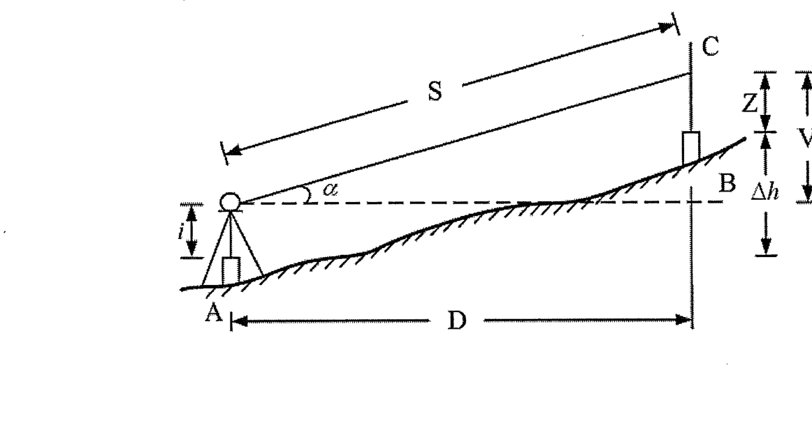
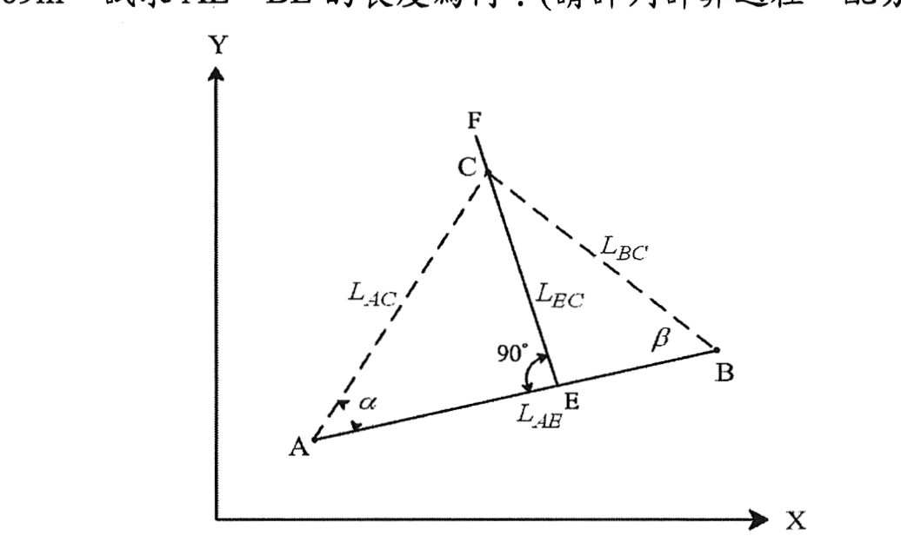
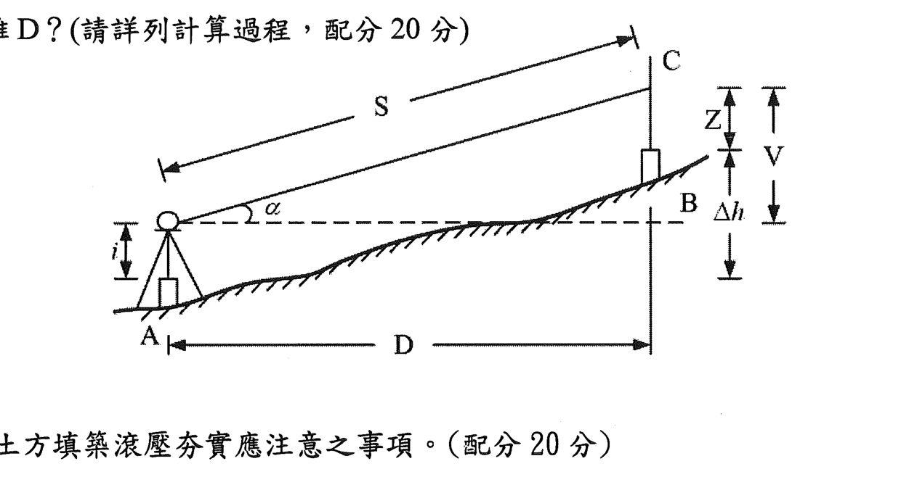
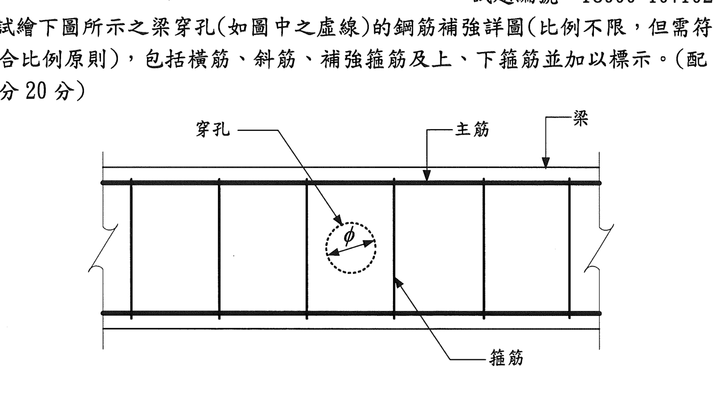
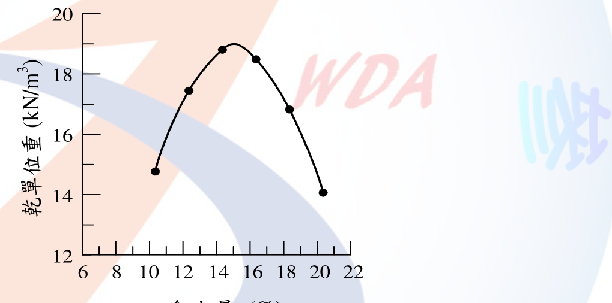
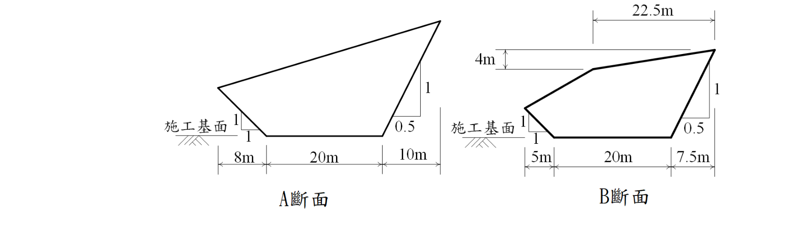
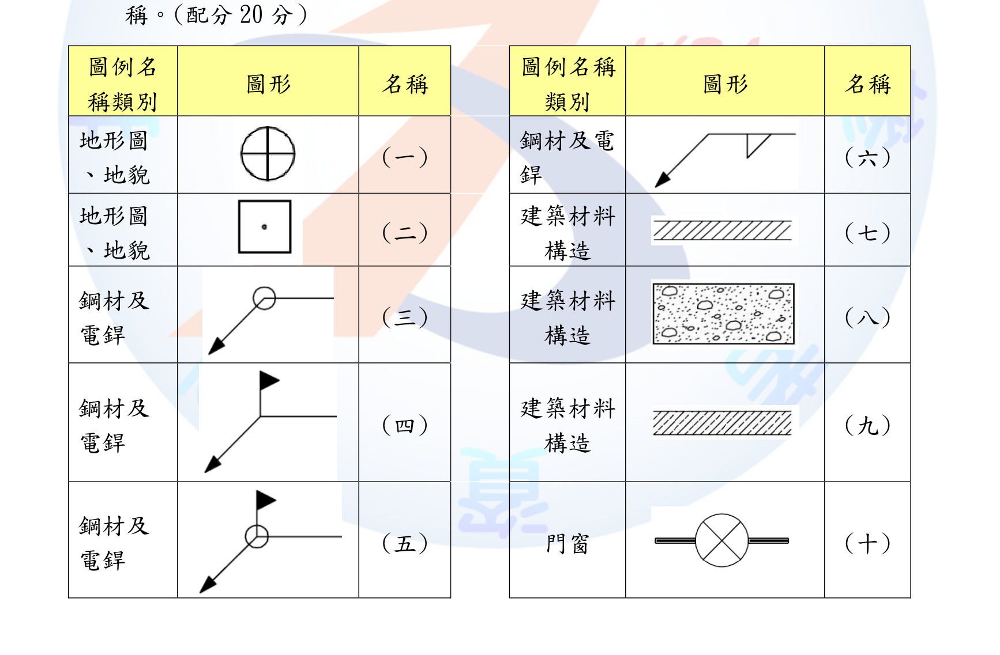
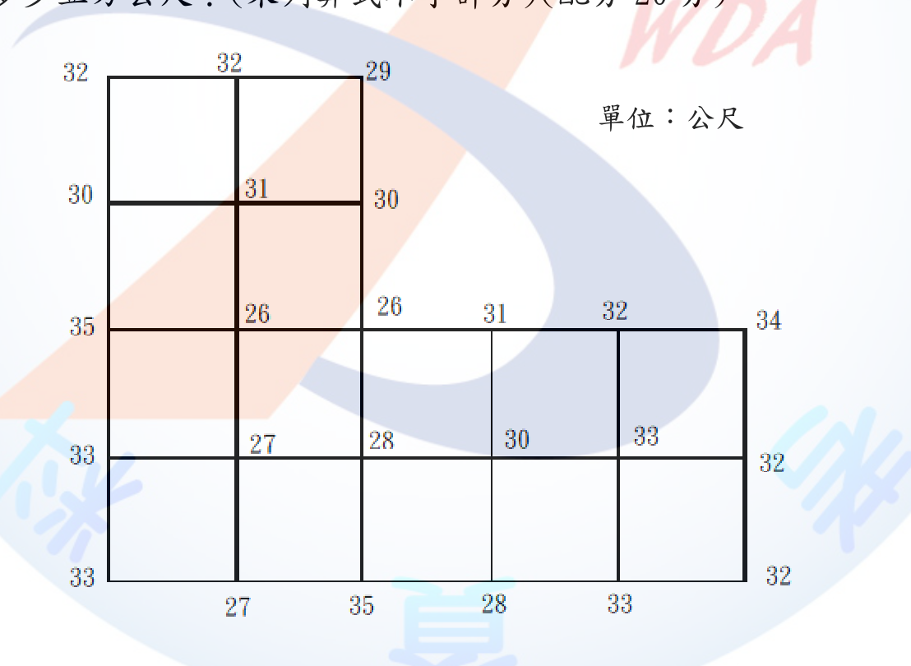
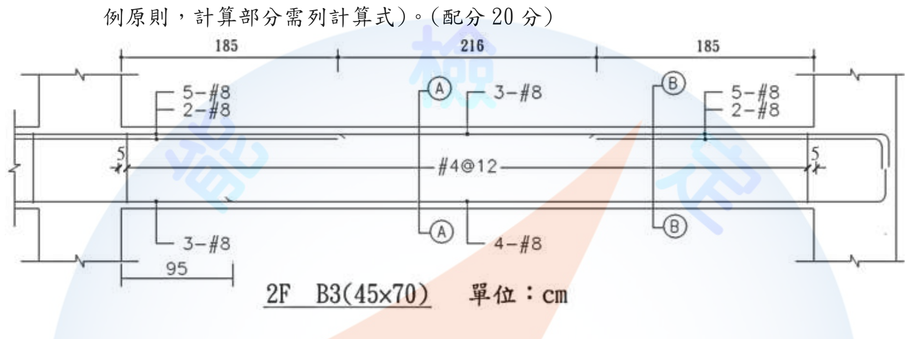

⚠️ 本詳解為 AI 彙整之參考擬答，非官方標準答案；法規內容以最新公告版本為準。
說明：本梯次（試題編號 18000-104102）術科測試共發出 A、B、C、D 四卷， 上午場次為 A卷／B卷、下午場次為 C卷／D卷，每卷各 5 大題、每題配分 20 分， 每卷各自即為一份完整 100 分之考卷（應檢人僅需作答其中一卷）。 為完整保留原始考題內容，本詳解依序收錄四卷全部 20 小題，並於題號註記所屬卷別與原題序。
請依「建築法」說明工程圖樣及說明書之內容為何？(配分20分)
依「建築法」規定，起造人申請建造執照或雜項執照時，應備具申請書、土地權利證明文件，及工程圖樣說明書。所稱「工程圖樣及說明書」，其內容應包括下列各款：
一、基地位置圖：標示基地於都市計畫或地籍圖上之相對位置。 二、地盤圖：標明基地地形、地界線、鄰接道路及溝渠等現況，比例尺不得小於一定規範。 三、建築物之平面圖、立面圖、剖面圖：表達各樓層配置、外觀及垂直剖面關係。 四、建築物各部之尺寸、構造及材料：說明主要構材尺寸、材質規格。 五、直接與間接排水系統圖：說明基地及建築物排水路徑與系統。 六、給水系統與衛生設備圖：說明給水管線配置及衛生設備位置。 七、電氣系統圖：說明配電、照明及相關電氣設施配置。 八、其他經中央主管建築機關指定之圖說：因應個案特殊需求（如消防、無障礙設施等）另行規定之圖說。
上述圖樣及說明書為主管建築機關審查建造執照、核發使用執照及日後勘驗施工是否合於設計之依據，亦是營造廠據以施工、監造單位據以查核之法定文件基礎。實務上工程圖樣尚包含結構計算書、結構詳圖及施工說明書等,並應由開業建築師或相關專業技師簽證負責。
本題考核應檢人對建築法定文件體系之熟悉度，常見失分點為僅答出「平立剖面圖」而漏列排水、給水衛生、電氣系統圖及基地位置圖、地盤圖等法定項目；亦應留意此為「建築法」母法之規定，與「建築技術規則」施工編中更細部之圖說要求不可混淆。
請依「建築技術規則建築設計施工編」規定，凡進行挖土、鑽井及沉箱等工程時，應採取哪些必要安全措施？(配分20分)
依「建築技術規則建築設計施工編」相關規定，建築物基礎工程進行挖土、鑽井及沉箱等作業時，應採取下列必要安全措施：
一、施工前應詳細調查地質狀況、地下水位及鄰近建築物、地下埋設物（管線、地下結構物）現況，並研擬適當之施工計畫。 二、開挖深度較深或鄰接原有建築物基礎者，應設置適當之擋土設備（如板樁、連續壁、鋼板樁支撐），以防止周邊地盤崩塌及鄰房損害，並應能承受土壓力及地下水壓力。 三、應有適當之排水或止水措施，防止地下水位驟降造成鄰地或鄰房不均勻沉陷。 四、鄰接原有建築物基礎下方挖土時，應注意保持原有建築物基礎之穩固，必要時應加設支撐或加固原有基礎。 五、施工中應於擋土設施及周邊重要構造物設置監測系統（如傾度管、沉陷觀測點），定期監測位移、沉陷量，並訂定管理值與警戒值，如有異常應即刻停工檢討。 六、鑽井及沉箱工程應防止地層因抽水或壓氣施工不當而導致周邊地盤下陷或隆起，沉箱下沉過程應注意氣壓控制及作業人員安全。 七、開挖面及擋土設施周邊應設置適當之圍籬、警示標誌，禁止無關人員進入。 八、應由專業技師（大地工程技師）簽證擋土支撐及開挖安全計畫，並依相關法令辦理施工勘驗。
上述措施之目的在於確保施工期間鄰房安全、避免地層滑動或隆起破壞，並符合公共安全之基本要求，為深開挖工程於施工計畫審查與勘驗階段之重點查核項目。
本題常見失分在於僅答出「加設擋土設施」而未提及監測系統、鄰房保護、地下水控制等完整配套措施；作答時應以「調查—設計—施工—監測—緊急應變」之完整流程呈現，展現對深開挖工程風險管理之整體掌握。
依據「營繕工程承攬契約應記載事項實施辦法」之規定，請說明若依物價指數調整工程款時，契約應載明之事項為何？(配分20分)
依「營繕工程承攬契約應記載事項實施辦法」規定，工程契約如採物價指數調整工程款（即物價波動條款）者，契約應載明下列事項：
一、得調整工程款之項目、範圍及其計算方式：明訂哪些項目（如人工、材料、機具）之價格波動得列入調整範圍。 二、調整所依據之物價指數及其資料來源：應明訂採用之官方物價指數（如行政院主計總處發布之營造工程物價指數）及查詢依據，避免爭議。 三、得申請調整之條件、期間或次數：如物價變動超過一定百分比方得申請調整，或約定申請調整之期限與頻率。 四、調整金額之計算公式：應載明明確之計算式，供雙方及查核單位依循核算。 五、廠商申請調整之程序及應檢附文件：包括申請期限、應附證明文件（如發票、報價單、物價指數資料）。 六、機關核定調整款之期限及給付方式。 七、如有調整上限、下限或其他限制條件者，亦應於契約中載明。
物價指數調整條款之目的在於分攤工程施作期間因物價波動所生之風險，避免廠商因原物料大幅漲價而虧損停工，或機關因指數計算不明確而生履約爭議。契約應載明事項越明確，越能降低日後估驗計價與結算時之爭議風險，亦有助於工程如期履約。
本題屬契約管理範疇，常見失分點為僅答出「依物價指數調整」而未展開契約應載明之具體項目（如計算公式、申請程序、資料來源），作答時宜條列完整，展現對承攬契約風險分攤機制之理解。
請依「職業安全衛生法」說明事業單位勞動場所發生哪些職業災害，雇主應於8小時內通報勞動檢查機構？(配分20分)
依「職業安全衛生法」規定，事業單位勞動場所發生下列職業災害之一者，雇主應於8小時內通報勞動檢查機構：
一、發生死亡災害者。 二、發生災害之罹災人數在3人以上者。 三、發生災害之罹災人數在1人以上，且需住院治療者。 四、其他經中央主管機關指定公告之災害（如發生氧化碳中毒、缺氧、感電、倒塌等特定類型災害）。
雇主於獲悉災害發生後，除應於8小時內通報勞動檢查機構外，尚應注意下列事項：
本規定之立法目的在於使勞動檢查機構得以即時掌握重大職業災害資訊，並儘速進行原因調查與現場鑑定，以避免類似災害再次發生，亦促使雇主重視職業安全衛生管理制度之落實。
本題為職業安全衛生法規之基本考點，作答時應完整列出四款通報情形，並注意「1人以上且需住院治療」與「3人以上」為不同款別，不可合併誤答；另可補充現場保存義務以展現對條文完整脈絡之掌握。
依「營造安全衛生設施標準」之規定，雇主對於高度2公尺以上之工作場所，勞工作業有墜落之虞者，應訂定墜落災害防止計畫，依「風險控制之先後順序」規劃並採取適當墜落災害防止設施。請依序說明風險控制前5項之內容？(配分20分)
依「營造安全衛生設施標準」規定，雇主對於高度2公尺以上之工作場所，勞工作業有墜落之虞者，應訂定墜落災害防止計畫，並依下列風險控制之先後順序規劃並採取適當墜落災害防止設施：
一、經由設計或工法之選擇，儘量使勞工於地面完成作業，減少高處作業項目：此為最優先且最根本之控制方式，透過源頭設計消除高處作業之必要性（如地面預組裝、預鑄構件於地面組立後吊裝）。 二、經由施工程序之變更，優先施作永久性之防墜設施（如永久性欄杆、樓板開口蓋板）：於施工階段即提前設置日後將永久使用之防墜構造，一次到位減少重複施工風險。 三、設置護欄、護蓋等設施：於開口、階梯、平台周邊設置符合強度規定之護欄或可承載之護蓋，屬於集體防護措施。 四、張掛安全網：於護欄、護蓋無法設置之部位（如外牆施工、鋼構組立）張掛安全網，作為墜落發生時之被動攔阻措施。 五、使勞工佩掛安全帶（安全帽及個人墜落防護具）：屬於個人防護措施，於前述集體防護措施仍無法完全消除墜落風險時，作為最後一道防線。
上述五項體現「危害控制層級」（Hierarchy of Controls）之精神，即優先以工程設計消除或降低風險（源頭消除、集體防護），其次才輔以個人防護具，而非一開始即仰賴勞工個人佩掛安全帶。雇主應依作業實際狀況綜合運用前述設施，並將風險控制先後順序、各作業區域對應之防護方式明訂於墜落災害防止計畫中。
本題常見失分點為次序顛倒（如將「佩掛安全帶」列為優先）或漏答「施工程序變更、優先施作永久性設施」一項；作答時應把握「工程控制優先於個人防護」之危害控制層級邏輯，並能扣合題目要求「依序」作答。
已知 A(567.890, 321.012)，B(543.210, 234.568)，C(456.779, 246.890) 及 D(468.979, 369.966)，試求：(配分20分) (一) BD方位角，φ_BD = ?(5分) (二) BD距離，BD = ?(5分) (三) 若經緯儀設置在D點，後視B點，前視E點，水平角角度觀測如下表，DE距離=100.00m，試求E點之X座標、Y座標。(10分)
| 測點D | 觀測點 | 正/倒 | 角度 |
|---|---|---|---|
| B | 正 | 00-00-00 | |
| B | 倒 | 180-00-00 | |
| E | 正 | 35-00-00 | |
| E | 倒 | 215-00-00 |
本題座標採 X 為北向（N）、Y 為東向（E）之工程測量慣例，方位角自北方起、順時針量測。
(一) BD方位角
ΔX = X_D − X_B = 468.979 − 543.210 = −74.231 ΔY = Y_D − Y_B = 369.966 − 234.568 = 135.398
因 ΔX 為負、ΔY 為正，BD 落於第二象限（東北象限之對側，即東南偏北方向），方位角公式為： φ_BD = 180° − arctan(ΔY / |ΔX|) = 180° − arctan(135.398 / 74.231) = 180° − arctan(1.82411)
arctan(1.82411) ≈ 61°15'41"
φ_BD ≈ 180° − 61°15'41" = 118°44'19"
(二) BD距離
BD = √(ΔX² + ΔY²) = √((−74.231)² + 135.398²) = √(5,510.24 + 18,332.62) = √23,842.86 ≈ 154.42 m
(三) E點座標
因後視B點讀數為 0°00'00"（正倒鏡平均一致），前視E點讀數為 35°00'00"，故測站D以B方向為零方向，順時針轉 35°00'00" 即為DE方向之水平角。
先求 φ_DB（DB方位角，為BD方位角加減180°）： φ_DB = φ_BD + 180° = 118°44'19" + 180° = 298°44'19"
DE方位角： φ_DE = φ_DB + 35°00'00" = 298°44'19" + 35°00'00" = 333°44'19"
計算E點座標增量（DE = 100.00 m）： ΔX_DE = DE × cos(φ_DE) = 100.00 × cos(333°44'19") ≈ 100.00 × 0.89676 ≈ 89.676 ΔY_DE = DE × sin(φ_DE) = 100.00 × sin(333°44'19") ≈ 100.00 × (−0.44245) ≈ −44.245
E點座標： X_E = X_D + ΔX_DE = 468.979 + 89.676 = 558.655 Y_E = Y_D + ΔY_DE = 369.966 − 44.245 = 325.721
故 E點座標約為 (558.655, 325.721)。（因四捨五入位數不同，最終數值容許合理誤差範圍）
本題屬工程測量計算範疇，非法規條文考點，計算依循方位角與座標增量之基本測量學公式（正倒鏡取平均消除儀器誤差、方位角傳遞原理）。
本題考核經緯儀導線測量之座標推算能力，常見失分點包括：象限判斷錯誤導致方位角公式誤用、忘記將BD方位角轉換為DB方位角（相差180°）、正倒鏡角度未取平均或誤解水平角意義。作答時應完整列出計算步驟與單位，展現正確之測量計算邏輯。
請回答下列問題：(配分20分) (一) 依據統一土壤分類法規定，GC 的代表之意義各為何？(10分) (二) GC 的剪力強度由何者主控，請說明原因。(10分)
(一) GC之代表意義
依統一土壤分類法（USCS, Unified Soil Classification System），符號採兩個英文字母組合表示。GC 中： - G（Gravel）：表示礫石為主要粒料，即粗粒料中礫石所占比例大於砂者。 - C（Clay）：表示所含細粒料具塑性、屬黏土性質。
故 GC 意指「含黏土之礫石」（Clayey Gravel），亦即礫石與黏土混合料，屬級配不良、細粒料含量較高（一般細粒料含量超過12%）且細粒料具塑性（可塑性指數與液性限度落於塑性圖黏土區）之礫石質土壤。
(二) GC之剪力強度主控者
GC 之剪力強度主要由「細粒料（黏土）之凝聚力（cohesion）」所主控，而非礫石顆粒間之摩擦角。
原因說明：GC 中黏土含量已達可包覆並填充礫石顆粒間孔隙之程度，使土壤之力學行為由「粒狀土壤之摩擦行為」轉變為「以黏聚性為主之行為」。當細粒料（黏土）含量足夠高，黏土會將礫石顆粒相互隔開並包覆，礫石顆粒間直接接觸傳遞摩擦阻力之機制受到削弱，此時土壤整體之剪力強度主要取決於黏土之凝聚力c及其含水量、稠度狀態（軟硬程度），而礫石顆粒本身之內摩擦角φ對整體強度之貢獻相對次要。此與級配良好、細粒料含量低之礫石（如GW、GP）以顆粒間摩擦角為主控強度來源有明顯不同，故於工程設計及穩定分析時，GC應以凝聚力c為主要強度參數評估依據，並應留意其強度受含水量變化（如飽和度提高）影響甚鉅。
本題屬土壤力學與統一土壤分類法（USCS，我國對應CNS土壤分類標準）之工程技術規範範疇，非特定法規條文考點。
本題常見失分點為誤將GC之強度歸因於礫石之摩擦角，或未能說明細粒料含量與土壤力學行為轉變之關係；作答時應扣合「細粒料含量決定土壤力學行為主控機制」此一核心觀念。
某建築基地位於級配優良卵礫石層，地下室土方開挖採用斜坡明挖工法，如果地下室基礎構築期間較長，邊坡可能長時間閒置，必須採用斜坡保護時，現有細目地工格網、帆布和掛網噴漿3種斜坡保護方法，請回答下列問題：(配分20分) (一) 請依據上述條件，列出此3種斜坡保護方法適用的優先順序。(10分) (二) 請說明原因。(10分)
(一) 優先順序
依上述條件（級配優良卵礫石層、邊坡長時間閒置），3種斜坡保護方法之適用優先順序為：
第一優先：掛網噴漿（噴凝土護坡） 第二優先：細目地工格網 第三優先：帆布覆蓋
(二) 原因說明
掛網噴漿優先之原因：卵礫石層顆粒間缺乏凝聚力，暴露於外易因雨水沖蝕、地表逕流帶走細顆粒（管湧、掏空）或因日曬乾濕循環反覆而造成顆粒鬆動、崩落。掛網噴漿係於邊坡表面鋪掛鋼絲網後噴植水泥砂漿，形成具一定強度之剛性保護層，能有效抵抗雨水沖蝕、風化及顆粒剝落，且噴漿層一旦完成後可長期維持防護效果，無須頻繁維護，最適合基礎構築期間較長、邊坡須長時間閒置之情況。
細目地工格網次之：地工格網可包覆卵礫石表面，以格網張力限制顆粒滾落、剝落，具中等程度之防護效果，施工較掛網噴漿簡便、成本較低，可作為工期中等、對防護要求次之區域之選擇，惟其抗沖蝕及抗風化能力仍不及噴漿層，長期使用仍有格網鬆脫、顆粒持續流失之風險。
帆布為最後選項：帆布僅能提供物理性覆蓋，防止雨水直接沖刷及揚塵，但材質耐候性、抗撕裂性差，長時間曝曬易脆化、破損，且無法抵抗邊坡因乾濕循環或地下水滲流造成之顆粒鬆動，故僅適合短期（數日至數週）閒置邊坡之臨時性防護，不適用於本題「構築期間較長」之邊坡保護需求。
綜上，防護方法之選用應綜合考量邊坡閒置時間長短、防護效果之持久性及經濟性，本題條件下以掛網噴漿最能滿足長期穩定防護之需求。
本題屬工程實務判斷範疇，可參照《營造安全衛生設施標準》有關開挖邊坡及擋土支撐安全之一般性規定，惟具體斜坡保護工法選用未見明確法規條文規範，主要依循大地工程實務準則判斷。
本題考核應檢人對邊坡保護工法特性之掌握，須能連結「級配優良卵礫石（無凝聚力、易沖蝕）」與「長時間閒置」兩項條件，推導出防護耐久性為選用之關鍵考量，而非僅比較施工成本或工期長短。
基礎開挖過程中，請分別繪圖並說明開挖面之塑性流隆起災害及擠壓隆起災害發生原因。(配分20分)
（因書面文字報告無法呈現繪圖，以下以文字描述兩者之破壞機制示意，實際應試時應繪製擋土壁、開挖面、滑動（流動）面及土壓分布之示意圖。）
塑性流隆起（Plastic Flow Heave，局部剪流型隆起）
發生機制：於軟弱黏土層中進行深開挖時，擋土壁外側（背側）之土壓力（含地表超載）遠大於開挖面內側之抵抗力，當擋土壁貫入深度不足或內側缺乏足夠反壓（如未及時澆置底版、支撐系統不足）時，軟弱土體會沿擋土壁下方形成局部剪動路徑，由外側被擠壓、繞流至開挖面內側之基礎下方，造成開挖面局部隆起，並常伴隨擋土壁向內傾移、背側地表沉陷及鄰房裂損。此破壞屬「局部、漸進性」之土體塑性流動，滑動面通常較淺，發生範圍集中於擋土壁腳附近。
發生原因：主要為軟弱黏土層強度不足、擋土壁入土深度（貫入深度）不夠、開挖深度過大或支撐系統架設不及時，使壁體兩側土壓差過大，超過土層抗剪強度所能承受之範圍。
擠壓隆起（Basal Heave，深層整體滑動型隆起）
發生機制：開挖底面下方之軟弱土層在上部土壓力（含周邊超載）作用下，因無法承受剪應力，沿類似地基承載力破壞（如Prandtl型或圓弧滑動面）之深層滑動面產生整體性隆起破壞，破壞範圍較深、較廣，涉及擋土壁下方及開挖底面以下相當深度之土體同時發生滑動隆起，性質類似地基整體承載力不足之破壞模式，與局部剪流之塑性流隆起不同。
發生原因：開挖深度相對於軟弱土層厚度過大、擋土壁未打入堅實土層或岩盤、開挖底面下方存在厚層軟弱土（正常壓密黏土），使基礎抗隆起安全係數（Fs）不足（一般設計要求Fs≥1.5），当上部荷重（含背側土壓）超過底部土層之極限承載力時即發生整體性隆起破壞。
兩者之主要區別在於：塑性流隆起為擋土壁附近局部、淺層之剪動流動；擠壓隆起則為開挖底面以下深層土體之整體圓弧或類承載力破壞型滑動隆起，工程對策上前者可透過加深壁體貫入、加強背側排水降低土壓因應，後者則須以加深壁體貫入堅實層、地盤改良提升底部土層強度或設置多道支撐加速施作底版來提高抗隆起安全係數。
本題屬大地工程（開挖擋土）技術範疇，計算與安全係數要求可參照大地工程學會相關設計手冊，非特定單一法規條文考點。
本題常考重點在於區分兩種隆起破壞機制之滑動面深度與範圍差異，並能扣合「安全係數不足」之共通根本原因；繪圖題即使書面作答仍應盡量以文字精確描述滑動面位置與土體移動方向，以利閱卷評分。
試說明於隧道鑽炸開挖輪進作業循環中，其作業項目及所需機具。(配分20分)
隧道鑽炸工法（Drill and Blast）之開挖輪進作業循環（Round Cycle）一般包含下列作業項目及所需機具：
一、鑽孔（Drilling）：依炸藥孔配置設計（含掘進孔、周邊孔、底孔）進行鑽孔作業，所需機具為多臂鑿岩台車（Drill Jumbo）或人力鑿岩機，並配合測量放樣確認孔位、孔深、孔向。
二、裝藥與起爆（Charging and Blasting）：將炸藥、雷管依設計裝藥量填入炮孔，接妥起爆電路（電雷管或非電雷管導爆索系統）後撤離至安全距離進行起爆，所需機具包括裝藥機（或人工裝藥）、起爆器、雷管導線及安全警戒設備。
三、通風排煙（Ventilation）：爆破後坑內產生大量粉塵及有毒氣體（如一氧化碳、氮氧化物），須以局部通風機及風管將新鮮空氣送入、廢氣排出，待坑內氣體濃度符合安全標準後方可進場作業。
四、清渣運搬（Mucking and Hauling）：以挖裝機（Load-Haul-Dump, LHD裝載機）或輪式裝載機將爆破後之石渣裝載，並以礦車、卡車或輸送帶運出坑外棄置或處理。
五、岩盤敲修與初期支撐（Scaling and Support）：清渣完成後須敲落開挖面及周邊鬆動岩塊（scaling），並依地質狀況施作初期支撐，包括噴凝土（以噴凝土機施作）、鋼支保（鋼肋支保架設）及岩栓（以岩栓鑽孔機鑽孔並灌漿或機械式錨定）。
六、地質記錄與測量（Geological Mapping and Survey）：每一輪進循環開挖面應進行地質調查記錄及斷面測量，以確認實際地質與設計符合程度，並作為下一輪進鑽炸設計（孔位、裝藥量調整）之依據，所需設備為全站儀等測量儀器及地質記錄工具。
上述作業依序循環進行（鑽孔→裝藥起爆→通風→清渣→支撐→測量），每完成一次循環即完成一定進尺（輪進長度），並持續重複直至隧道貫通。各作業間之銜接效率（如通風時間、支撐及時性）直接影響整體隧道開挖之進度與安全。
本題屬隧道工程施工實務範疇，涉及火藥使用另應遵循《爆竹煙火管理條例》及相關炸藥管理法規之規定，惟具體輪進作業循環內容屬工程施工實務，非單一法規條文考點。
本題常見失分點為僅列出「鑽孔、爆破、清渣」三項而漏答通風排煙及支撐、地質記錄等後續作業，未能呈現完整之輪進循環概念；作答時應依實際施工順序完整條列，並對應說明各步驟所需之關鍵機具。
請列舉4項說明「分工結構圖」之功用。(配分20分)
分工結構圖（Work Breakdown Structure, WBS）係將工程專案依層級逐步分解為可管理之工作項目（工作包）之圖表工具，其主要功用包括：
一、明確界定工作範圍：透過逐層分解，將整體工程完整且不重複地拆解為各項工作包，避免範圍遺漏或重複計列，作為專案範圍管理之基礎文件。
二、作為成本估算與預算編列之依據：以各工作包為單位進行數量估算與單價計算，彙總即得專案總預算，亦便於後續依工作包進行成本控管與差異分析。
三、作為進度排程與資源分配之基礎：各工作包可進一步展開為具邏輯關係之作業項目，據以編製要徑法（CPM）網圖或甘特圖，並依工作包配置所需人力、機具、材料等資源。
四、明確責任分工與績效考核基準：每一工作包可指派專責之負責單位或個人，明確權責歸屬，並作為進度、成本、品質績效衡量與考核之量測基準（如常用之實獲值管理EVM即以WBS工作包為衡量單元）。
此外，分工結構圖亦有助於專案團隊溝通協調（提供共同之工作分解語言）、風險識別（依工作包逐項辨識潛在風險）等功用，惟依題目要求列舉4項即足。
本題屬專案管理技術範疇，屬工程管理實務知識（可參照PMBOK等專案管理知識體系），非特定法規條文考點。
本題屬基礎工程管理概念考題，作答時應避免僅重複「方便管理」等空泛敘述，宜具體扣合範圍界定、成本估算、進度排程、責任分工等專案管理五大功能面向分項說明。
請說明屋頂防水層施作後，採軟底工法鋪設隔熱磚之施作順序。(配分20分)
屋頂防水層完成後，採軟底工法（濕式坐漿工法）鋪設隔熱磚之一般施作順序如下：
一、防水層完工驗收：防水層施作完成後，應先進行蓄水試驗（一般蓄水24至48小時），確認無滲漏後方可進行後續施作，避免後續施工破壞未驗收之防水層而無法追溯漏水源。
二、施作防水保護層：於防水層表面鋪設水泥砂漿保護層或其他適當保護材料，避免後續隔熱磚鋪設及人員機具進出造成防水層破損。
三、放樣與規劃：依設計圖說進行排磚放樣，確認排水坡度（一般不小於1/100～1/50）、排水方向、伸縮縫位置及收邊收頭細部，並確認排水孔、地漏位置無誤。
四、拌合並鋪設軟底砂漿：以適當配比拌合水泥砂漿（軟底坐漿層），依放樣控制厚度均勻鋪設於保護層之上，並依排水坡度整平。
五、鋪貼隔熱磚：將隔熱磚依放樣圖鋪貼於軟底砂漿上，以橡皮鎚敲擊調整磚面水平及與砂漿之密實貼合，並隨時以水平尺、拉線控制磚縫平整及坡度一致。
六、勾縫填縫：隔熱磚鋪設完成且砂漿初凝後，進行磚縫勾縫或填縫處理，並視需要進行防水填縫材施作。
七、伸縮縫與收邊處理：於女兒牆周邊、排水孔周邊、變形縫等部位施作收邊收頭及伸縮縫填塞，避免熱脹冷縮造成磚面隆起或開裂。
八、清潔養護：完工後清除表面殘留砂漿、雜物，並依規定進行適當之養護（灑水養護），避免烈日曝曬導致砂漿層過早乾裂。
上述順序之核心原則為「先確保防水層完整不受破壞，再由下而上逐層施作」，並全程注意排水坡度之控制，避免完工後產生積水而影響隔熱磚使用壽命及防水層耐久性。
本題屬建築工程施工實務範疇，可參照《公共工程施工綱要規範》相關章節（屋頂防水、隔熱磚鋪設）之施工要求，非特定單一法規條文考點。
本題常見失分點為忽略「防水層蓄水試驗驗收」及「保護層施作」兩項前置步驟，直接跳至鋪磚，作答時應完整呈現由防水驗收至完工養護之全流程順序。
請說明規劃施工預定進度應考量因素。(配分20分)
規劃施工預定進度時，應綜合考量下列因素：
一、契約工期及分段（里程碑）完工期限：應以契約所訂之總工期及各分段查驗、完工期限為進度規劃之上限框架。
二、工程數量與施工方法及生產效率：依各工項之工程數量、採用之施工方法（工法）及合理施工生產力（人機效率）估算所需施作天數。
三、各工項間之施工順序與邏輯關係：分析各作業間先後（開始至開始、完成至開始等）、平行施作或搭接關係，避免規劃不合理之施工順序。
四、人力、機具、材料之供應與調度能力：考量現場可調度之勞動力、機具設備數量及材料供應（含採購、訂製、進口）之前置時間，避免資源瓶頸影響進度。
五、氣候與季節性因素：如雨季、颱風季節對戶外作業（如混凝土澆置、外牆施工）之影響，應預留合理之停工緩衝天數。
六、法定假日、例假日及夜間、假日施工限制：依勞動法令及地方自治法規（如噪音管制、夜間施工許可）規劃可施工時段。
七、相關法規申請、查驗、勘驗之時程：如建管單位勘驗、公用事業（水、電、瓦斯）接管申請、消防查驗等行政程序所需時間應納入排程。
八、分包廠商進場配合及介面協調：多工種、多分包間之介面銜接（如機電與土建工程）須妥善規劃，避免相互干擾延誤。
九、場地條件及外部限制：包括基地大小、材料堆置空間、聯外道路及交通維持計畫、鄰房協調等現場條件限制。
十、資金調度與付款排程：工程進度亦須與業主付款排程、廠商資金調度能力相互配合，避免因資金不到位影響進度。
規劃時應綜合上述因素，運用要徑法（CPM）等排程技術，建立具合理緩衝、可執行之施工預定進度計畫，並定期檢討修正。
本題屬工程管理（進度管理）實務範疇，非特定法規條文考點，惟工期及查驗時程之預留可參照《政府採購法》及其施行細則有關工期展延、驗收之相關規定。
本題屬工程管理常考基本題，作答宜盡量分項列舉並涵蓋內部因素（工法、資源）與外部因素（氣候、法規、介面協調），避免僅列出2、3項而配分不足。
請說明「配電場所」設置施工之檢查項目。(配分20分)
配電場所（如高低壓配電室、變電站）設置施工時，應依相關電氣法規及施工圖說進行下列檢查項目：
一、場所空間及維修通道：檢查配電場所之淨空尺寸、設備前後維修操作空間是否符合規定，通道是否暢通無阻礙。
二、防火區劃：檢查配電場所之牆體、樓板、門之防火時效是否符合規定，並確認防火填塞（管線貫穿處）是否確實施作。
三、通風散熱：檢查自然通風開口或機械通風設備是否足夠，確保配電設備運轉時之散熱需求。
四、接地系統：檢查接地電極、接地線配置是否完成，並實測接地電阻值是否符合規定標準。
五、設備安裝與固定：檢查配電盤、開關箱、變壓器等設備之安裝位置、高度、水平及固定方式是否牢固穩定。
六、標示與識別：檢查配電設備、迴路是否有清楚完整之電壓別、迴路編號、警示標示（高壓危險、閒人勿近等）。
七、照明設備：檢查配電場所照明是否充足，並視需要設置緊急照明。
八、防護與安全設施：檢查是否設有防止小動物、異物侵入之防護網（如變壓器開口防護），高壓區域是否有隔離護欄或警示線。
九、消防安全設備：檢查是否依規定配置滅火器（如二氧化碳滅火器）等適用於電氣火災之消防設施。
十、門禁與警示：檢查出入口是否設有門鎖管制，並張貼相關警示標誌，避免非相關人員進入。
上述檢查項目應於配電場所施工完成後、送電啟用前，會同電氣技師及相關單位進行完整查核，並留存檢查紀錄，以確保配電場所之施工品質及日後運轉安全。
本題可參照《屋內線路裝置規則》及《用戶用電設備裝置規則》有關配電室（場所）設置之相關規定（因掃描原文未能確認精確條號，建議查證最新條文）。
本題常見失分點為僅答出「接地」、「防火」等零星項目而未能完整涵蓋空間、通風、標示、消防、門禁等面向；作答時宜以「送電啟用前之完整查核清單」角度全面條列。
請說明於「柱與牆壁」中預埋或預留口時，水電、消防、空調等工程施作應注意之事項。(配分20分)
於鋼筋混凝土柱、牆內預埋管線或預留孔口時，水電、消防、空調等工程施作應注意下列事項：
一、事先介面協調：各機電專業（給排水、電氣、消防、空調）應於施工前依管線圖說進行整合協調（管線整合會議），確認各管線之路徑、預埋位置及尺寸，避免現場衝突或事後鑿設。
二、避開結構主要構材：預埋套管、預留孔應避開柱主筋、繫筋及梁柱接頭核心區，不得任意切斷或位移結構主筋，梁柱接頭區原則上不得開孔。
三、結構安全確認：開孔位置、尺寸應事先經結構技師確認不影響結構安全（如避開柱剪力鍵區、梁跨中彎矩較大處、支承處剪力較大區），必要時應提出補強計畫。
四、預埋管線固定：套管、預埋管線於澆置混凝土前應確實固定牢靠，防止澆置過程中位移、變形或被混凝土堵塞。
五、套管材質與防火填塞：套管材質應與周邊構造相容（具耐蝕、耐壓、防水性能），管線穿越防火區劃（如防火牆、防火樓板）處應依規定施作防火填塞，維持原有防火時效。
六、防水處理：管線穿越外牆、屋頂版、浴廁樓板等部位應加強防水收頭處理，避免日後產生滲漏。
七、預留維修更換空間：應考量管線日後檢修、抽換之可能性，適度預留維修空間或檢修口，避免管線埋入結構後無法維護。
八、現場放樣與紀錄：施工前應會同水電、消防、空調各工程單位共同現場放樣確認位置，並留存放樣紀錄及影像，以利日後查核及爭議釐清。
上述注意事項之核心目的在於兼顧管線功能需求與結構安全，並避免施工介面不良造成之後續補救成本（如鑿設結構補強）及防火、防水性能缺陷。
本題可參照《建築技術規則建築構造編》有關結構開孔及《各類場所消防安全設備設置標準》有關防火區劃貫穿部防護之相關規定，惟具體條號因掃描原文未能確認，建議另行查證。
本題常見失分點為僅強調「避開鋼筋」而未提及防火填塞、防水處理及維修空間預留等面向；作答時應展現對結構安全、機電功能與建築性能（防火、防水）三方面之綜合考量。
試說明鋼筋混凝土建築物各樓層梁、柱、版、牆、樓梯等各部傳統模板組立與拆除的時機與時間，並說明其理由。(配分20分)
模板組立時機
依施工圖說及混凝土澆置順序，一般先組立柱、牆等垂直構材模板並完成校正（垂直度、尺寸、支撐系統），再組立梁底模、版底模及樓梯模板；組立完成後應經監造單位查驗合格，並完成鋼筋綁紮、預埋配管等前置作業，確認無誤後方可澆置混凝土。組立過程須注意模板之強度、支撐系統穩固性，以承受混凝土澆置時之側壓力及施工活載重。
模板拆除時間及理由
模板依其於澆置後對混凝土是否具承重支撐功能，區分為「非承重模板（側模）」與「承重模板（底模）」，拆除時間依構材受力性質不同而異：
一、柱、牆側模：由於側模僅具塑形功能、不承受混凝土自重，拆除條件為混凝土已達可自持形狀、不因拆模碰撞而損壞之強度即可，一般約澆置後1至2天（依環境溫度、水灰比、水泥種類而異），及早拆除有利於模板週轉再利用。
二、梁側模：與柱牆側模性質相近，屬非承重模板，約1至3天可拆除。
三、梁底模、版底模：屬承重模板，須待混凝土發展出足夠強度以獨立承受自重及後續施工活載重（一般要求達到設計強度約65%至70%以上）方可拆除，實務上依跨度大小、氣溫及混凝土配比不同，版底模約需7天以上，梁底模因跨度較大、承受彎矩較大，約需14天以上，跨度過大或懸臂構材應視混凝土試體壓力試驗結果延長拆模時間，必要時應保留支撐或施作二次支撐（re-shoring）。
四、樓梯模板：性質類似梁版之承重模板，須待混凝土強度足以承受自重及踏步施工活載重後拆除，約需7至14天。
理由說明
混凝土於澆置初期強度尚未充分發展，若過早拆除承重模板，混凝土將因無法獨立承受上部荷重（自重、施工活載重、上層樓板澆置荷重）而產生過大撓度、裂縫甚至崩塌破壞之風險；非承重之側模僅需混凝土具備自持外形、拆模時不致因碰撞而損壞表面即可提前拆除，以加速模板週轉、縮短工期。實際拆模時間應綜合考量混凝土試體標準養護試驗之抗壓強度發展曲線、施工季節氣溫（低溫延緩強度發展）及構材跨度、荷重大小等因素綜合判斗，不宜僅以固定天數一概而論。
本題可參照《營造安全衛生設施標準》有關模板支撐之相關規定，及混凝土工程相關施工規範中有關模板拆除強度要求之規定，惟具體條號及拆模天數基準以最新規範及混凝土試體試驗結果為準。
本題常見失分點為未區分「承重模板」與「非承重模板」拆除條件之差異，或僅列出天數而未說明理由（強度發展與荷重承受能力）；作答時應扣合混凝土強度發展與構材受力性質，展現對模板工程安全管理之理解。
請說明起重機吊掛作業應注意之事項。(配分20分)
起重機吊掛作業應注意下列事項：
一、確認起重能力：吊掛作業前應依起重機性能表（額定荷重表）核算作業半徑內之額定荷重，不得超過額定荷重（含吊具、吊物自重）進行吊掛，並注意起重機於不同伸臂長度、作業角度下容許荷重之變化。
二、吊具與吊索檢查：選用適當之吊具（鋼索、吊帶、吊鏈、吊鉤），吊掛物應綑綁牢固、重心平衡，並於使用前檢查吊具有無斷股、變形、鏽蝕等異常，確認其容許荷重足敷需求。
三、專業人員操作及指揮：應由取得起重機操作技術士證或相關資格之人員操作，並由經吊掛作業訓練合格之指揮人員負責指揮，操作人員與指揮人員間應以統一之信號（手勢、無線電）聯繫，避免誤判。
四、警戒區設置：吊掛作業範圍下方及周邊應設置警戒區、圍籬或警示帶，禁止無關人員進入或於吊掛物下方通行、停留，防止物體掉落擊中人員。
五、地面及支撐穩固：確認起重機停放地面之承載能力足夠，外伸撐座（outrigger）應完全伸出並確實支撐、保持水平，避免作業中傾覆。
六、與周邊障礙物之淨距：吊掛作業應注意與架空電線之安全距離，避免感電；並注意周邊建築物、施工架、其他機具設備之淨空，防止碰撞。
七、氣候條件限制：強風（達一定風速標準）、大雨、雷電、地震等惡劣天候時應停止吊掛作業，必要時應將吊臂收回並固定。
八、吊掛操作方式：起吊應緩慢平穩，避免衝擊荷重、擺盪，嚴禁以起重機拖拉、斜吊或拖曳地面物件，亦不得以起重機進行超過其設計功能之作業（如載人未使用合格吊籠）。
九、作業前點檢與紀錄：每日作業前應對起重機本體、吊具進行點檢並留存紀錄，發現異常應立即停止使用並送修。
上述注意事項旨在防止吊掛作業常見之重大職業災害類型（物體飛落、倒塌、感電），為營造工地起重作業安全管理之重點。
本題為營造安全衛生常考題，作答時應涵蓋「人（資格、指揮）、機（機具檢查、荷重）、料（吊具狀況）、環（天候、警戒區、淨距）」四大構面，避免僅列出單一面向即結束作答。
請回答下列有關全套管基樁施工法之機具設備問題：(配分20分) (一) 取土設備有哪些？(6分) (二) 套管驅動設備（搖管器）之主要構件有哪些？(4分) (三) 其他附屬機具設備有哪些？(10分)
(一) 取土設備
全套管基樁施工法（All-Casing Method，如Benoto工法）於套管內取土常用之設備包括： 1. 衝擊式抓斗（Hammer Grab）：以自由落體衝擊方式挖掘套管內土壤或岩層，並抓取排出。 2. 迴轉式抓斗：以迴轉方式開挖並抓取土壤。 3. 螺旋鑽頭（Auger）：配合套管施工使用，適用於黏性土層取土。 4. 沖擊式鑽頭：遇堅硬地層或礫石層時，配合衝擊鑽掘破碎後再以抓斗取出。
(二) 套管驅動設備（搖管器 Oscillator/Rotator）之主要構件
搖管器主要構件包括： 1. 油壓動力單元：提供搖管器旋轉、上下搖動及夾持所需之油壓動力（油壓泵浦、油壓馬達）。 2. 套管夾持裝置（上、下夾爪，Chuck）：夾持套管並施加旋轉或搖動扭矩，使套管能左右旋轉並垂直貫入或拔出地層。 3. 旋轉／搖動驅動機構：驅動夾爪產生正反向搖動或連續旋轉動作，將套管壓入或拔出。 4. 底座（基座）及導引裝置：固定並支撐搖管器本體，確保套管貫入時之垂直精度。
(三) 其他附屬機具設備
全套管基樁施工尚需下列附屬機具設備： 1. 起重機：用以吊放套管、鋼筋籠及混凝土澆置導管等重物。 2. 鋼筋籠及其吊裝設備：預製鋼筋籠並以起重機吊放入孔內。 3. 特密管（Tremie管）：作為水中或泥水中混凝土澆置之導管，確保混凝土連續澆置不離析。 4. 混凝土泵送設備或吊桶：將預拌混凝土輸送至孔口或經特密管澆置。 5. 發電機組：供應搖管器油壓機組及其他電動機具所需之動力。 6. 廢土清運機具：包括卡車、挖裝機，用於清運抓取排出之廢土。 7. 泥水處理設備（如使用穩定液時）：包含泥水槽、沉澱池、泥水分離設備等，用以循環處理孔內穩定液。 8. 測量及檢測儀器：如垂直度檢測儀、孔深量測工具，確保基樁施工品質。
本題屬深基礎（基樁）施工工法之機具設備知識，屬工程實務技術範疇，非特定法規條文考點。
本題為基樁施工機具設備之基本知識題，作答時應依題目子題配分比例分配作答篇幅（取土設備6分、搖管器構件4分、附屬機具10分），並注意取土設備與附屬機具設備不應重複列舉。
鋼結構電銲姿勢可分為幾種？試分別說明之。(配分20分)
鋼結構電銲依銲道及銲件於空間中之相對姿勢，一般可分為4種銲接姿勢：
一、平銲（Flat Position，代號1G／1F）：銲件置於水平面上，銲道亦呈水平方向，施銲時銲工由上方向下俯視施銲。此姿勢因熔融金屬受重力作用容易堆積於熔池內，操作最為容易、銲接效率及品質相對穩定，為優先採用之銲接姿勢。
二、橫銲（Horizontal Position，代號2G／2F）：銲件呈垂直放置，銲道方向為水平，銲工由側面施銲。因熔融金屬受重力影響易向下垂流，須以較低電流及適當運條技巧控制熔池，操作難度高於平銲。
三、立銲（Vertical Position，代號3G／3F）：銲件呈垂直放置，銲道方向亦為垂直，可分為「向上立銲（由下往上施銲）」及「向下立銲（由上往下施銲）」兩種方式。立銲因熔融金屬受重力影響易下垂，須控制熔池大小及運條速度，操作難度較高。
四、仰銲（Overhead Position，代號4G／4F）：銲件位於銲工上方，銲工須仰頭向上施銲，熔融金屬受重力影響最容易產生下墜、滴落，為四種姿勢中操作難度最高、施銲條件最嚴苛者，須以較小電流、較快運條速度並縮短電弧長度控制熔池。
上述姿勢代號中，「G」（Groove）用於對接銲，「F」（Fillet）用於角銲。鋼結構工地及工廠銲接應依構材接合部位之實際空間姿勢，選用對應資格檢定合格（銲接技術士）之銲工施作，並依施工規範要求控制銲接電流、運條速度、預熱及層間溫度，以確保銲道品質。
本題屬鋼結構銲接工法分類之技術知識，屬工程實務及國家標準（CNS）銲接姿勢分類範疇，非特定法規條文考點。
本題常見失分點為僅答出「平銲、立銲」兩種而漏答橫銲、仰銲，或未能說明各姿勢之施銲特性及難度差異；作答時應完整列出四種姿勢並簡述其重力對熔池之影響及操作難易度。
試說明「綠混凝土」應具備之部份或全部性質與條件。(配分20分)
「綠混凝土」（Green Concrete）係指於原料選用、製程及使用性能上兼顧環境保護、資源永續與生態相容性之混凝土，其應具備下列部分或全部性質與條件：
一、使用再生粒料：以營建剩餘土石方、拆除廢棄物再生處理所得之再生粗骨材、細骨材取代部分或全部天然粒料，減少天然砂石資源之開採與消耗。
二、使用卜作嵐（波索蘭）替代材料：以飛灰、高爐爐石粉、矽灰等工業副產物取代部分水泥用量，降低水泥製程所產生之二氧化碳排放，兼具改善混凝土耐久性之效果。
三、低碳排放、低能耗製程：於生產過程中選用低碳排放之原物料及生產方式，符合節能減碳及永續發展原則。
四、透水性能：具透水混凝土特性者，可讓雨水下滲補注地下水，有助於緩解都市逕流負擔及降低都市熱島效應。
五、生態相容性：孔隙結構或表面性質可供微生物附著、植物根系穿透生長（如植生綠化混凝土、生態工法用護岸混凝土），有助於棲地營造與生態復育。
六、良好之工程性能：仍應具備滿足設計需求之強度、耐久性及施工性，不因追求環保性質而犧牲結構安全或使用年限。
七、資源循環再利用性：構造物拆除後之混凝土可再破碎處理，作為再生粒料回收利用，形成資源循環。
八、節水配比設計：可採用減少拌合用水量或使用回收水（如洗車廢水回收再利用）之配比設計，降低水資源消耗。
綠混凝土之推動符合當前營建產業循環經濟及淨零排放之政策方向，於評選材料及配比設計時，應綜合考量上述環保性質與結構工程性能間之平衡，不宜偏廢任一方。
本題可參照《再生粒料應用於營建工程之規範》及綠建材相關標章制度（如內政部綠建材標章）之精神，惟具體條號因掃描原文未能確認，建議另行查證最新規範。
本題屬綠建築、循環經濟趨勢下之新興考點，作答時應兼顧「環保面（再生材料、低碳、節水）」與「性能面（強度、耐久性、生態相容）」兩大構面完整列舉，避免僅單方面陳述環保訴求而忽略工程性能要求。
⚠️ 本詳解為 AI 彙整之參考擬答，非官方標準答案；法規內容以最新公告版本為準。
說明：本梯次（試題編號 18000-106101）當日配發 A、B、C、D 四種平行試卷（上午 A/B 卷、下午 C/D 卷）， 每卷各為獨立完整之 5 大題、100 分試題，內容互不重複。以下依卷別分節詳解， 各題標題格式為「〔卷別〕 第N題」。
依「投標廠商資格與特殊或巨額採購認定標準」之規定，請列舉5種工程採購中可稱為特殊採購之情形。(配分20分)
依政府採購法子法「投標廠商資格與特殊或巨額採購認定標準」之規範精神，工程採購屬「特殊採購」者，通常指具下列性質之一，因其專業門檻、稀有性或不可替代性，一般廠商難以供應或承作，故於資格訂定、招標方式上須為特別考量：
機關辦理上述特殊採購時，得於招標文件中訂定與一般採購不同之廠商資格條件（如額外要求特殊實績、專業證照或技術人力），以確保得標廠商具備履約能力。
本題考核對政府採購法子法體系中「特殊採購」定義之掌握，重點在於理解特殊採購與一般採購的差異（不可替代性、專業門檻），常見失分點為誤把「巨額採購」（以金額門檻認定）與「特殊採購」（以性質認定）混為一談，作答時應清楚區分兩者定義基礎不同。
建築基地應依據建築物之規劃及設計辦理地基調查，地基調查方式包括資料蒐集、現地探勘或地下探勘，請依「建築技術規則」規定，說明哪些建築物應進行地下探勘？又地下探勘之調查點數量規定為何？(配分20分)
（一）應辦理地下探勘之建築物 依建築技術規則建築構造編有關基礎構造之規定，地基調查應依建築物之規模、用途及基地地質條件分級辦理，其中下列類型建築物因結構安全風險較高，原則上應辦理地下探勘（鑽探）： 1. 供公眾使用之建築物。 2. 一定樓層數（含地下層）或高度以上之建築物。 3. 擬設置地下室、須進行深開挖之建築物。 4. 基地地質條件特殊、鄰近有斷層、順向坡、易發生地盤下陷或土壤液化潛勢地區之建築物。 5. 鄰接既有建築物或地下構造物，開挖可能影響其安全者。
（二）地下探勘調查點數量規定 地下探勘（鑽孔）之數量應依基地面積大小及建築物規模比例配置，基地面積愈大或建築規模愈複雜，所需調查點數愈多；且無論基地面積大小，調查點數不得少於法定最低點數，以確保能反映基地地層之變化情形。鑽孔深度亦應達足以判釋基礎持力層及可能軟弱夾層之深度。
（因不同年版建築技術規則就樓層門檻、基地面積級距與最低點數之數值屢有修正，具體數值建議查證最新公告版本之建築技術規則建築構造編相關條文。）
本題考核地基調查作業程序中「地下探勘」啟動門檻與數量配置原則的理解，屬技師簽證與結構安全把關的基礎知識。作答重點在於掌握「哪些條件觸發地下探勘義務」及「調查點數與基地規模、建築規模成正比」的原則性邏輯，避免僅憑印象寫出過時或錯誤之數值門檻。
依「採購契約要項」之規定，機關與廠商因履約而產生爭議時，未能依法令及契約規定達成協議者，得採行之處理方式為何？(配分20分)
依採購契約要項有關履約爭議處理之規範，機關與廠商因履約發生爭議，經雙方協商仍未能達成協議者，得採行下列途徑處理：
機關辦理上開爭議處理時，應本於誠信原則，並注意履約爭議期間原則上不得因此中止履約（涉及國家賠償或重大公益者除外），以維持工程持續進行；同時應留意相關程序之法定期限，避免影響求償或救濟權利。
本題考核對政府採購履約爭議救濟途徑（調解、仲裁、訴訟）架構之熟悉程度，常見失分點為僅答出單一途徑（如僅寫訴訟）而未完整列舉調解、仲裁等替代性爭議解決機制（ADR），且應注意各途徑之適用時機與效力差異。
公共工程驗收時，由機關首長或其授權人員指派適當人員辦理，請分別述明主驗人員、會驗人員、協驗人員及監驗人員之權責為何？(配分20分)
公共工程驗收採分工合作方式辦理，依人員職責可分為以下四類：
四者分工使驗收兼顧專業判斷（主驗、會驗）、作業執行（協驗）與程序監督（監驗），以確保公共工程驗收結果之正確性與公信力。
本題屬公共工程行政程序常考題型，考核對驗收人員分工架構之掌握。作答重點在區分四種人員「決策核定（主驗）／專業會同判斷（會驗）／事務協助（協驗）／程序監督（監驗）」之角色差異，切勿將四者職責混寫或僅籠統描述「負責驗收」。
依「職業安全衛生設施規則」規定，雇主對於有車輛出入、使用道路作業、鄰接道路作業或有導致交通事故之虞之工作場所，應如何設置適當交通號誌、標示或柵欄等設施？(配分20分)
依職業安全衛生設施規則有關道路作業及交通事故預防之規定，雇主對於有車輛出入、使用道路施工、鄰接道路作業或其他有導致交通事故之虞之工作場所，應採取下列措施：
上述措施之目的在於降低施工人員與用路人（含行人、車輛）發生交通事故之風險，屬雇主對工作場所安全設施之法定義務。
本題考核工地交通安全管理之基本知識，屬職業安全衛生法規常考題型。作答應涵蓋「事前警示（標誌）、空間阻隔（護欄柵欄）、動態指揮（交通引導人員）、夜間強化（警示燈）」四個層面，避免僅回答單一項目而遺漏其他面向。
使用電子測距經緯儀，測站在A點，儀器高i=1.360m，稜鏡在B點，B點樁頂高程為360.188m，稜鏡高(Z)為1.856m，測量垂直角α=+12°30'40"和斜距S=120.548m，試求A點樁頂高程和AB點的水平距離D？(請詳列計算過程，配分20分)

原卷三角高程測量幾何示意圖（A點測站、B點稜鏡、儀器高i、稜鏡高Z、垂直角α、斜距S、水平距離D）本題屬三角高程測量（trigonometric leveling）計算，依題目附圖，儀器設於A點樁頂上方i處，稜鏡設於B點樁頂上方Z處，兩者間以斜距S、垂直角α連線觀測。
（一）角度換算
α = 12°30'40" = 12° + 30/60° + 40/3600° = 12.511111°
（二）計算垂直高差分量 S sin α
sin(12.511111°) ≈ 0.216629
S × sin α = 120.548 × 0.216629 ≈ 26.114 m
（三）計算水平距離分量 D = S cos α
cos(12.511111°) ≈ 0.976258
D = S × cos α = 120.548 × 0.976258 ≈ 117.686 m
（四）求A點樁頂高程
由觀測幾何關係：儀器軸高程（A樁頂高程 + i）加上垂直高差分量，等於稜鏡（目標）高程（B樁頂高程 + Z）：
A樁頂高程 + i + S sin α = B樁頂高程 + Z
A樁頂高程 = B樁頂高程 + Z − i − S sin α = 360.188 + 1.856 − 1.360 − 26.114 = 334.570 m
（五）結果彙整
本題屬測量計算應用，非法規題，計算依據為一般三角高程測量原理（正弦、餘弦函數關係式）。
本題考核電子測距經緯儀（Total Station）三角高程測量之計算能力，重點在於：（1）角度單位換算是否正確（度分秒轉十進位度）；（2）判斷儀器高與稜鏡高之加減方向是否正確（依題目附圖之幾何關係，需正確判斷高差之正負與相對位置）；（3）三角函數計算精度。常見失分點為儀器高、稜鏡高加減方向顛倒，或未列出完整計算過程僅寫結果。
試列舉並說明土方工程於工地現場夯實試驗類型。(配分20分)
土方工程回填壓實完成後，須於工地現場進行夯實度（壓實度）試驗，以確認實際夯實成果是否達到設計要求之相對夯實度（通常以現場乾密度與室內標準夯實試驗最大乾密度之比值表示）。常見現場夯實試驗類型如下：
上述方法所得現場乾密度，應與室內標準夯實試驗（如AASHTO T99標準夯實或T180改良夯實）所得最大乾密度比較，計算相對夯實度（%），以判定是否符合設計規範要求（一般路基、路床常要求達90%以上，重要結構物回填要求更高）。
本題考核土方工程品質管制中現場夯實度檢測方法之熟悉程度。作答應至少列舉砂置換法、灌水法（橡皮膜法）、核子密度法三種主流方法並簡述原理，常見失分點為僅列舉方法名稱而未說明測試原理，或將「現場夯實試驗」與「室內夯實試驗（標準夯實試驗）」混淆。
道路工程中，原地面與設計高程有差異者，須以土方之開挖或回填至設計高程，其主要相關作業項目內容有哪些？(配分20分)
道路工程土方開挖、回填至設計高程之主要作業項目，依施工程序可歸納如下：
本題考核道路土方工程施工程序之完整性理解，作答應依「測量放樣→清除→開挖→運調→回填夯實→整形→檢測驗收」之邏輯順序完整列舉，避免遺漏含水量控制、夯實度檢測等品質管制環節，此為常見失分之處。
請列舉5項建築物基礎開挖時之安全監測項目。(配分20分)
建築物基礎開挖（尤其深開挖）為高風險作業，應建立安全監測系統，即時掌握擋土結構與周邊環境變化，常見監測項目如下：
以上監測項目應依開挖深度、周邊環境敏感度訂定監測頻率及警戒值、行動值，並於達警戒值時啟動應變措施。
本題考核深開挖安全監測系統之基本知識，五項監測項目答出「壁體變位、支撐軸力、地下水位、鄰房地表沉陷、地中沉陷」任五項即可得分，重點在於監測項目與監測目的（掌握何種風險）的對應關係要清楚，避免僅列儀器名稱而未說明監測標的。
沉箱於施工作業中應檢查之重點有哪些？(配分20分)
沉箱工法（如開口式沉箱、氣壓沉箱）施工屬高風險地下工程，施工中應檢查之重點如下：
本題考核特殊基礎工法（沉箱）施工安全管理知識，重點在於掌握沉箱下沉過程的「結構安全（箱體、止水）＋施工控制（垂直度、挖土均勻）＋作業環境安全（氣壓、通風）＋周邊影響（鄰房沉陷）」四大面向，常見失分點為僅著重箱體結構而遺漏氣壓作業安全或周邊監測項目。
請依據「施工中建築物混凝土氯離子含量檢測實施要點」說明，檢測時檢測人員之資格為何？會同檢測人員是指哪些人員？(配分20分)
（一）檢測人員資格 依「施工中建築物混凝土氯離子含量檢測實施要點」規範精神，辦理施工中混凝土氯離子含量檢測之人員，應具備相關專業背景，一般應為具備土木、結構、材料等相關科系學歷或執照（如結構技師、土木技師），或經專業訓練並具實務經驗，熟悉氯離子檢測方法（如硝酸銀滴定法等）及取樣程序之人員，以確保檢測結果之公正性及可信度。
（二）會同檢測人員 氯離子含量檢測攸關混凝土結構耐久性及公眾安全，為避免弊端並確保檢測過程公開透明，檢測時應由下列相關單位人員會同辦理： 1. 起造人（或其代表）：工程之業主方代表。 2. 承造人（營造廠）代表：實際負責施工之營造廠代表。 3. 監造人（建築師或監造單位）代表：負責監督施工品質之專業技師或建築師代表。
上開人員會同在場，共同見證取樣及檢測過程，並於檢測紀錄上簽認，以強化檢測結果之公信力，防止混凝土施工品質造假（如海砂屋事件之防範機制）。
本題考核混凝土氯離子檢測制度之程序性知識，屬防範海砂屋類建材爭議之重要管制措施。作答重點在於區分「檢測人員」（執行檢測之專業人員）與「會同檢測人員」（起造人、承造人、監造人三方代表在場見證）之不同角色，避免混淆。
請列舉至少10項施工管理之作業程序。(配分20分)
營造工程施工管理涵蓋自開工前準備至完工驗收之全過程，主要作業程序可歸納如下：
本題屬開放式列舉題，考核對施工管理全流程（進度、品質、成本、安全、環保等五大管理構面）之整體掌握程度，作答時建議依管理構面分類條列，邏輯清晰更利於閱卷給分，單純堆疊項目而無分類架構易導致重複或遺漏。
試述營造工程施工計畫中，對於環境保護的執行應包含哪些項目，請至少列舉5項？(配分20分)
營造工程施工計畫中之環境保護執行項目，主要係為落實工地對周邊環境之影響控制，常見項目如下：
上述環境保護項目應納入施工計畫書之專章，並配合相關環保法規（如噪音管制法、空氣污染防制法、廢棄物清理法）辦理申報及自主管理，以善盡工地對外部環境之社會責任。
本題考核施工計畫環保專章之內容完整性，作答應涵蓋「噪音振動、空污粉塵、廢污水、廢棄物、生態綠化」等面向，至少列舉5項並簡要說明具體做法，避免僅條列名詞而無具體措施說明。
試述營造工程施工計畫中，有關緊急應變及防災計畫的內容應為何？請說明之。(配分20分)
營造工程施工計畫中之緊急應變及防災計畫，旨在因應施工期間可能發生之意外事故或天然災害，降低損害並確保人員安全，其內容通常應包含：
本題考核工地緊急應變管理制度之完整性，作答應涵蓋「風險評估→組織通報→疏散避難→急救消防→天然災害應變→教育演練」之完整邏輯鏈，常見失分點為僅列舉消防器材配置等單一面向，未涵蓋通報體系與演練機制等制度性內容。
請列舉「地下室」結構體管路配管，可能有哪些種類？(配分20分)
建築物地下室結構體內因功能需求，須配合埋設或穿越多種管路系統，常見種類如下：
上述管路於結構體施工階段須配合預埋套管、開孔或穿樑套管，並於施工圖階段完成各專業管線之協調整合（管線整合／BIM整合），避免結構體完成後管線衝突或需鑿孔破壞結構之情形。
本題考核對建築機電系統整合於結構體施工之基本認識，答題應涵蓋給排水、消防、電力、通信、空調、瓦斯等主要管路系統，至少列舉5項以上，並可補充說明管線整合（介面協調）之重要性以爭取額外評分。
請繪製道路工程之柔性路面構造剖面圖(須含粗級配瀝青混凝土及密級配瀝青混凝土)。(配分20分)
柔性路面（瀝青路面）構造剖面，由上而下（面層至路基）依序為：
剖面示意（由上而下）：
──────────── 密級配瀝青混凝土（面層）
──────────── 粗級配瀝青混凝土（中層／黏結層）
──────────── 級配碎石或瀝青處理基層（基層）
──────────── 級配砂石底層（底層）
════════════ 壓實土壤路床（路基）
各層間應確實壓實並視需要噴灑黏層油（Tack Coat）或底層油（Prime Coat），以確保層間結合良好，避免層間滑動及早期破壞。
本題為繪圖題，考核對柔性路面分層構造及材料特性之掌握，作答重點在於正確標示「面層（密級配）、中層（粗級配）、基層、底層、路床」五層由上而下順序及各層功能，常見失分點為漏繪黏層油／底層油，或粗、密級配瀝青混凝土層次順序顛倒（密級配須在上、粗級配在下）。
請依施工場所之環境、地形、地質、水文、天候等因素說明施工機械在哪些作業環境下，可能引致危害狀況發生？(配分20分)
施工機械（如挖土機、推土機、吊車、壓路機等）於下列作業環境條件下，可能因地盤承載力不足、視距不良或天候劇變等因素而引致翻覆、夾捲、感電、物體飛落等危害：
雇主應依上述因素事先辦理工地環境調查及風險評估，訂定機械作業安全管制措施（如設置警戒區、限制作業條件、指派指揮人員、惡劣天候停工等），以降低施工機械作業危害之發生。
本題考核依題目所給「環境、地形、地質、水文、天候」五個構面，逐項分析施工機械危害成因之能力，作答應依五個構面分別舉例說明，避免僅籠統描述「地面不平會翻覆」而未依構面分類完整作答，此為配分結構隱含之要求。
試舉出7種以上土方工程中開挖及填土作業使用之機具。(配分20分)
土方工程開挖及填土作業常用機具如下：
上述機具依施工階段（開挖、運送、填築、壓實、整形）分工配合，機具選用應考量土質條件、工作面大小及施工效率綜合評估。
本題屬施工機具知識性題目，非法規題，惟機具操作安全應依《職業安全衛生設施規則》及《營造安全衛生設施標準》相關規定辦理。
本題為開放式列舉題，只需正確舉出7種以上土方開挖填土常用機具即可得分，作答時可依「開挖、運送、壓實、整形」等施工階段分類列舉，展現對機具功能之理解，較單純羅列機具名稱更易獲得閱卷肯定。
試說明控制性低強度材料(CLSM)之構想、目前在國內的主要用途、材料成分及其材料性質需求。(配分20分)
（一）構想 控制性低強度材料（Controlled Low Strength Material, CLSM）係以流動性材料取代傳統夯實回填土之工法構想，利用材料自身流動性達到自充填、免（或少）夯實之效果，並將抗壓強度控制於較低且可預期之範圍內（區別於一般結構混凝土之高強度需求），兼顧施工便利性、回填密實度及必要時之可挖除性。
（二）目前在國內的主要用途 1. 管溝回填（如自來水管、電力、通信管線埋設後之溝槽回填）。 2. 基礎或結構物周邊空隙回填。 3. 空洞、廢棄地下管道或坑洞之填塞。 4. 道路基層或路面挖除後之快速回填修復。 5. 橋台背填、擋土牆背填等狹小空間不易夯實之部位。
（三）材料成分 CLSM一般由下列材料組成： 1. 水泥（膠結材，用量較一般混凝土低）。 2. 飛灰或爐石粉等卜作嵐材料（可取代部分水泥，兼具流動性提升及成本降低效果）。 3. 細粒料／砂（或使用可利用之工地餘土、爐渣等替代骨材）。 4. 拌合用水（用水量較高以達所需流動性）。 5. 必要時添加起泡劑、緩凝劑等摻料以調整流動性及凝結時間。
（四）材料性質需求 1. 低強度可控制性：設計抗壓強度通常遠低於一般結構混凝土（依用途訂定，如需日後再開挖之部位須控制於較低強度以利未來挖除）。 2. 良好流動性（自充填性）：無需夯實即可充分填滿空隙及管溝周邊死角。 3. 低沉陷、低收縮性：確保回填後不致產生後續沉陷影響路面或構造物。 4. 適當之凝結時間：兼顧施工效率與現場作業安排。 5. 必要之可挖除性：供未來管線維修等需求時仍可以一般機具挖除，不致如混凝土般難以破除。
本題考核對控制性低強度材料此一較新工法材料之認識，作答應完整涵蓋「構想（自充填、免夯實）、用途（管溝回填為主）、成分（水泥、飛灰、砂、水）、性質需求（低強度可控、高流動性、低沉陷、可挖除性）」四個子題面向，缺一不可，此為評分關鍵。
鋼結構在工廠製造時有時須辦理「試裝」作業，試述：(配分20分) (一)試裝的目的：(5分) (二)試裝的需求：(5分) (三)試裝需要確認的內容：(10分)
（一）試裝的目的 鋼結構構件於工廠製作完成後，於出貨運至工地現場組立前，先於工廠內以實體或部分構件模擬現場組立狀態進行預先組裝（試裝），目的在於提前發現加工誤差、接合面不密合等問題，避免構件運至現場後才發現無法順利組立，導致工期延誤及額外修改成本，並確保現場組立作業能順利、快速、精準地完成。
（二）試裝的需求 1. 場地需求：須有足夠平整、承載力足夠之場地空間，以容納構件實際尺寸進行組裝。 2. 支撐及固定架具：須配置臨時支撐架、定位夾具，模擬構件實際組立姿態及支承條件。 3. 量測儀器：須備妥經緯儀、水準儀、雷射測距儀、鋼捲尺等精密量測工具，供尺寸、垂直度、水平度檢核使用。 4. 人力及時程配合：須有具經驗之技術人員及品管人員配合檢查，並預留足夠試裝時程，以利發現問題後之修正加工。
（三）試裝需要確認的內容 1. 構件尺寸公差：確認各構件長度、斷面尺寸是否符合設計圖說及製造公差要求。 2. 接合面密合度：確認構件接合部位（如梁柱接頭）之密合狀況，是否有間隙過大或翹曲情形。 3. 螺栓孔對位精度：確認螺栓孔位是否對正，螺栓能否順利穿入並鎖固。 4. 整體垂直度與水平度：確認組裝後整體結構之垂直度、水平度是否在容許誤差範圍內。 5. 焊接品質及塗裝狀況：確認銲道外觀、銲接尺寸是否合格，防鏽塗裝是否完整無損。 6. 編號標示核對：確認構件編號、安裝方向標示是否清楚正確，以利現場依編號順利組立。
經試裝確認無誤後，構件方可拆卸包裝運送至工地現場進行正式組立，如發現問題應於工廠內即時修正，避免影響現場工期。
本題依子題配分（5+5+10分）作答，須清楚分段回答「目的」「需求」「確認內容」三部分，尤其「確認內容」配分最高（10分），應列舉尺寸公差、接合密合度、螺栓孔對位、垂直水平度、銲接塗裝品質等多項具體檢核項目，避免僅籠統回答「檢查是否合格」而未具體列舉檢查項目，此為常見失分原因。
⚠️ 本詳解為 AI 彙整之參考擬答，非官方標準答案；法規內容以最新公告版本為準。
說明：107年術科測試當日配發四種平行試題（上午A卷、上午B卷、下午C卷、下午D卷）， 每卷各自獨立、各含5大題、每題配分20分，每卷加總皆為100分。四卷內容互不重複， 應為避免受測者互抄而印製之不同版本。本詳解依「卷別＋題號」逐一列出，共4卷×5題＝20大題。
依「政府採購法」規定，請列舉5項當廠商有哪些情形時，機關應將其事實及理由通知廠商，並附記如未提出異議者，將刊登政府採購公報。
機關辦理採購，發現廠商有下列情形之一者，應將事實及理由通知廠商，並附記如未於通知期限內提出異議或申訴，將刊登政府採購公報（列舉5項）： 1. 未依契約規定履約，情節重大者。 2. 履約結果不符合契約規定，情節重大者。 3. 查驗或驗收不合格，且經通知限期改善仍不改正，情節重大者。 4. 驗收後不履行保固責任，情節重大者。 5. 擅自減省工料，情節重大者。
（另可視題意補充：以虛偽不實之文件投標、訂約或履約，情節重大者；因可歸責於廠商之事由，致解除或終止契約，情節重大者。）
實務上此屬「刊登不良廠商名單（拒絕往來廠商）」機制之前置通知程序，廠商如未於法定期限內異議或申訴，機關即得逕行刊登政府採購公報，並依規定期間停權，不得參加投標或作為決標對象、分包廠商。
本題考採購法「刊登政府採購公報（拒絕往來廠商）」制度的適用情形與正當程序（先通知、給予異議機會）。常見失分點：漏答「情節重大」之限定語、將本條情形與「不予發還押標金」或「逕行終止契約」情形混淆、未掌握異議/申訴為廠商之救濟權利。
依據內政部公告「建築工程必須勘驗部分申報表」（B14-2）所列「按設計圖說施工」中，應查核及監督之施工項目為何？
「按設計圖說施工」勘驗重點在確認現場施作與核准圖說（含結構計算書、施工圖）之一致性，查核監督項目包括： 1. 施工位置、尺寸、標高是否與核准設計圖說相符。 2. 構材配置、鋼筋規格與配筋數量、間距是否依結構圖施作。 3. 使用材料之規格、強度等級是否與送審資料相符（如混凝土配比、鋼筋材質）。 4. 如現場與原核准圖說不符，是否已依《建築法》規定辦理變更設計並取得主管建築機關核准後始行施工。 5. 相關施工檢驗報告（材料試驗、抽驗紀錄）是否備齊並留存備查。 6. 施工圖說是否經監造單位（建築師/專業技師）審核用印，現場是否留有最新版次圖說供核對。
本題考勘驗實務中「按圖施工」的具體查核操作，非僅回答「依圖施工」表面用語。常見失分點：未展開查核項目（尺寸/配筋/材料/變更設計核准/檢驗報告），或漏答「未經核准不得逕行變更」之要旨。
請說明公共工程契約約定之採購標的在哪些情形時，廠商得敘明理由，檢附規格、功能、效益及價格比較表，徵得機關書面同意後，以其他規格、功能及效益相同或較優者代之？
於下列情形，廠商得敘明理由，檢附規格、功能、效益及價格比較表，經機關書面同意後以其他規格代之： 1. 契約原標的已停產、缺料或不再製造，經廠商查證屬實並提出證明文件者。 2. 有替代之標的，其規格、功能或效益與原契約標的相同或較優，且價格不高於原契約價金者。 3. 因材料或設備規格調整有助於工程進度、品質或安全，經機關認定有正當理由者。
程序上廠商須先敘明理由並檢附「規格、功能、效益及價格比較表」四項要素，經機關以書面同意後始得代用，不得逕行採購或施作其他規格之標的，以避免爭議及品質風險。
本題考契約履約彈性機制與其限制條件。核心在「機關書面同意」為必要程序，且比較表須齊備規格、功能、效益、價格四要素缺一不可。常見失分點：漏答「書面同意」要件、誤以為廠商可自行判斷逕予代用。
廠商於公共工程履約過程中，若有發生哪些情形，機關得依契約約定，暫停給付估驗計價款至情形消滅為止？
常見得暫停給付估驗計價款之情形包括： 1. 廠商未依約定進度施工，已達應通知限期改善之情形，經通知仍未改善者。 2. 廠商未依規定辦理工地勞工安全衛生或環境保護措施，經通知仍不改善者。 3. 廠商積欠下包廠商、供應商貨款或勞工工資，經主管機關或機關通知限期給付，屆期未給付者。 4. 查驗或驗收不合格，經通知限期改善，屆期未完成改善者。 5. 廠商有其他違反契約重要約定事項，經機關通知仍不改正者。
機關依契約約定暫停給付估驗計價款，性質上屬督促廠商改善履約缺失之財務手段，待上述情形消滅（即完成改善）後即應回復給付，非屬終止或解除契約之嚴厲處分。
本題考機關對廠商違約情形之財務督促手段，重點在「暫停給付」與「終止契約」層級之區別，前者為情形消滅即回復給付之緩衝機制。常見失分點：將「情節重大得終止契約」情形誤植於本題、未答出「安全衛生／欠薪／驗收不合格」等典型情形。
雇主使勞工於局限空間從事作業前，應先訂定危害防止計畫，使現場作業主管、監視人員、作業勞工及相關承攬人依循辦理，請說明「危害防止計畫」應包含之事項。
危害防止計畫應包含之事項： 1. 局限空間內危害之確認（如缺氧、中毒、感電、塌陷、被夾、被捲、火災爆炸等危害）。 2. 局限空間內氧氣、危險物、有害物濃度之測定。 3. 通風換氣實施方式（如強制通風之風量、風管配置）。 4. 電能、高溫、低溫、噪音等作業環境危害之防止措施。 5. 作業方法及安全管制作法。 6. 進入作業許可程序（含許可簽署、有效期間）。 7. 現場監視人員之配置及其職責分工。 8. 空氣呼吸器、安全帶（繩）等防護具之準備、選用及使用。 9. 緊急應變處置措施（含搶救設備、通報及演練）。 10. 其他保障作業安全之必要事項。
本題考局限空間作業安全管理制度的完整架構，主軸為「危害確認—濃度測定—通風換氣—進入許可—監視人員—緊急應變」。常見失分點：漏答「進入作業許可程序」與「緊急應變處置措施」兩項核心要素，或僅答「戴防護具」而未涵蓋管理面事項。
如下圖示，α=40°、β=60°、CE垂直AB，AC長度L_AC=156.649m，BC長度L_BC=116.269m，試求AE、BE的長度為何？（請詳列計算過程）

原卷幾何示意圖（三角形ABC，α、β為底角，CE垂直AB於E點）本題為兩個直角三角形（△ACE與△BCE，直角均在E點）之三角函數應用。
步驟一：求AE 於直角三角形ACE中，∠A=α=40°，∠AEC=90°，斜邊AC=156.649m。 AE = AC × cos α = 156.649 × cos40° = 156.649 × 0.766044 ≈ 120.00 m
步驟二：求BE 於直角三角形BCE中，∠B=β=60°，∠BEC=90°，斜邊BC=116.269m。 BE = BC × cos β = 116.269 × cos60° = 116.269 × 0.5 = 58.135 m（≈58.13m）
驗算（一致性檢核）： 分別以兩三角形計算CE，應相等： - CE（由A側）= AC × sin α = 156.649 × sin40° = 156.649 × 0.642788 ≈ 100.69 m - CE（由B側）= BC × sin β = 116.269 × sin60° = 116.269 × 0.866025 ≈ 100.69 m
兩者相符，確認AB = AE + EB為一直線、E點確為CE之垂足，計算結果自洽。
結論：AE ≈ 120.00 m，BE ≈ 58.14 m。
（本題為測量計算題，無涉法規條文。）
本題考三角測量中「垂足分割」計算的基本三角函數應用（正弦、餘弦定義），常見失分點：角度與邊長對應錯誤（誤用sin代替cos，或角度歸屬三角形錯置）、未列完整計算過程與單位、未進行CE一致性驗算導致計算錯誤未被發現。
土方工程填土後須配合進行滾壓夯實作業，以達到規定之壓實密度，而滾壓夯實作業在施工管理上有哪些重點？
滾壓夯實施工管理重點： 1. 壓實度管制標準：依土壤最大乾密度／最佳含水量試驗結果，訂定壓實度合格標準（一般規定應達最大乾密度之90%~95%以上，依構造物性質而異）。 2. 鋪土厚度控制：分層鋪土並依滾壓機具能量控制每層鬆鋪厚度，避免鋪層過厚造成下層壓實不足。 3. 含水量控制：控制填土含水量於最佳含水量附近之容許範圍內，過乾應灑水、過濕應翻曬或摻拌乾料調整。 4. 機具選用：依土壤性質（黏性土、砂質土）選用適當滾壓機具（羊足滾壓機、光胴鋼輪滾壓機、震動滾壓機、橡膠輪胎滾壓機等）。 5. 滾壓遍數與行進速度：依試驗滾壓（Test Rolling）結果訂定滾壓遍數、行進速度及重疊寬度，確保均勻壓實。 6. 品質驗證：每層完成後應辦理工地密度試驗（砂錐法、核子密度儀法等），確認合格後始得舖築次層，不合格應重新夯實。 7. 邊坡及死角補強：機具無法到達之邊坡、轉角、構造物周邊，應以小型夯實機具或人工補強夯實。 8. 雨天管理：雨天或含水量過高時應暫停施工，並採取排水、覆蓋等保護措施。
（屬工程施工實務品管事項，無單一特定法條；可參《公共工程施工綱要規範》相關章節，確切條號建議查證最新版本。）
本題考填土夯實品管全流程（鋪土厚度—含水量—機具—滾壓遍數—密度試驗）。常見失分點：只答「用滾壓機來回輾壓」而未展開各項品管參數，或漏答分層鋪土厚度控制與密度試驗驗證兩項核心。
依據內政部「營建剩餘土石方處理方案」回答下列問題：(一)何謂營建工程剩餘土石方？(8分) (二)列舉土石方資源堆置處理場(土資場)設置應有的設施。(12分)
(一) 營建工程剩餘土石方之定義 指營建工程施工（包含建築工程、公共工程等）過程中所產生剩餘之泥、土、砂、石、磚、瓦等物質，性質上屬可資源化再利用之土石方，不包含施工過程中產生之營建廢棄物（如廢木材、廢金屬、廢塑膠等雜項廢棄物）。
(二) 土資場應有設施（列舉） 1. 進出場車輛之洗車（含輪胎）設施，防止污泥外流至道路。 2. 圍籬或阻隔設施，防止土石方外洩及揚塵。 3. 地磅或計量設施，供進場數量核計管理。 4. 排水及沉砂設施，避免逕流夾帶泥砂污染周邊水體。 5. 防塵抑制設施（灑水設備），抑制粉塵飛揚。 6. 標示牌（載明場名、管理人、核准文號、有效期限等）。 7. 堆置區分區管理措施及邊坡穩定設施，防止崩塌。 8. 消防及緊急應變相關設施。
本題考剩餘土石方管理制度之定義與土資場管理要件。常見失分點：將「剩餘土石方」與「營建廢棄物」混為一談（本方案僅涵蓋可再利用之土石方，不含雜項廢棄物）；設施項目漏答洗車設施、地磅計量等關鍵管理項目。
(一)連續壁施工時，溝槽底部淤泥清除方法有哪些？(10分) (二)施工中加入穩定液之主要功能為何？(10分)
(一) 溝槽底部淤泥清除方法 1. 空氣揚昇法（Air-lift）：以壓縮空氣注入導管，利用氣液混合體之密度差將泥漿及淤泥揚昇排出。 2. 潛水泵浦（水中泵）抽除法：以水中抽泥泵直接將溝底沉澱之淤泥抽除。 3. 抓斗二次挖除法：以開挖抓斗再次下放至溝底，直接挖除沉積淤泥。 4. 泥漿循環處理法：透過泥漿處理系統（振動篩、旋流分離器）將泥漿中之砂土分離後，把清淨泥漿回注溝槽，降低溝底沉澱。
(二) 穩定液（皂土泥漿）之主要功能 1. 維持溝壁穩定：以泥漿靜水壓力平衡開挖面之土壓與地下水壓，防止溝壁崩塌。 2. 形成不透水泥膜（Mud Cake）：泥漿中細顆粒於溝壁面析出形成薄膜，減少泥漿滲流損失並強化壁面。 3. 懸浮及攜出開挖之土砂顆粒：使開挖產生之土砂懸浮於泥漿中，便於抽出處理。 4. 潤滑作用：降低抓斗（或迴轉鑽掘機具）與溝壁之摩擦阻力，利於開挖進行。
（屬連續壁工法施工實務，無特定單一法條可引。）
本題考地下連續壁施工品管重點。常見失分點：把穩定液功能與「支撐先行工法之止水效果」混淆（連續壁本身兼具擋土與止水雙重功能，但本題重點在施工中泥漿之穩壁與攜砂功能）；淤泥清除方法未能區分「開挖階段防淤」與「灌漿前二次清孔」之不同工法。
雇主對於隧道、坑道設置之支撐，應於每日或四級以上地震後，就哪些事項予以確認，如有異狀時，應即採取補強或整補措施？
應確認之事項包括： 1. 頂板及兩側岩盤（地質）之變化狀況。 2. 支撐材有無異常之沉陷、變形、損傷、腐蝕或脫落。 3. 樑（縱梁、橫撐）與柱之連接部分是否鬆動。 4. 螺栓、螺絲桿等緊結件之鬆緊狀況。 5. 支撐基腳有無下沉或滑動之情形。 6. 地下水湧出量或滲水狀況有無異常變化。
如發現上述任一事項有異狀，雇主應立即停止該區域作業，並採取補強、整補或加設支撐等措施，確認安全無虞後始得恢復作業。
本題考隧道支撐自主檢查制度之時機與項目。常見失分點：漏答「四級以上地震後」之即時檢查時機（僅答「每日檢查」不足）、檢查項目未涵蓋螺栓鬆緊及基腳滑動等細部項目。
若某工程之工程預算為新台幣伍仟伍佰萬元整，且無「運轉類機電設備」，請說明「整體品質計畫」之內容包括哪些？
依《公共工程施工品質管理作業要點》規定，工程預算金額達新臺幣5,000萬元以上者，應由承包商訂定整體品質計畫。本案預算5,500萬元已達門檻，應訂定整體品質計畫，內容應包括： 1. 品質管理組織及權責分工（含專職品管人員之配置）。 2. 材料及施工檢驗程序（含進料檢驗、自主檢查表）。 3. 自主檢查表及查驗停留點（Hold Point）之設置。 4. 不合格品之管制程序。 5. 矯正與預防措施機制。 6. 文件紀錄管理系統（含品質紀錄之建立、保存與追溯）。 7. 勞工安全衛生與環境保護配合措施。
因本案「無運轉類機電設備」，依規定得免訂「機電設備測試運轉檢驗程序」相關計畫內容，其餘一般品質計畫要項仍應完整訂定。
本題考整體品質計畫應備要項與門檻金額（5,000萬元）之判讀，並測試考生能否掌握「無運轉類機電設備得免訂相關測試計畫」之排除條款。常見失分點：僅答一般品質管理項目而未點出本題「無機電設備」之排除要件。
請列出品管新QC七大手法為何？
新QC七大手法（用於整理語言性、文字性資料，屬管理及企劃導向工具）： 1. 親和圖法（KJ法） 2. 關聯圖法 3. 系統圖法 4. 矩陣圖法 5. 矩陣數據分析法 6. PDPC法（過程決策計畫圖） 7. 箭形圖法（網狀圖法／要徑法）
（屬品質管理工具方法，非法規事項，無需引用法條。）
本題考新QC七大手法（管理企劃導向）與舊QC七大手法（數據分析導向：查檢表、柏拉圖、特性要因圖、直方圖、散佈圖、管制圖、層別法）之區辨。常見失分點：將舊七大手法誤答為新七大手法，或漏列矩陣數據分析法（新七大手法中唯一可用數值分析者）。
試述施工中交通維持計畫之主要項目為何？
施工中交通維持計畫主要項目應包括： 1. 交通維持期程及分階段施工計畫（依施工進度分階段調整交維方式）。 2. 交通維持動線配置圖（含替代道路、繞道規劃）。 3. 交通管制設施配置（標誌、標線、槽化島、警示帶、防護欄、夜間警示燈等）。 4. 交通指揮／導引人員之配置與勤務規劃。 5. 行人及自行車通行動線之維持與無障礙考量。 6. 緊急救護、消防車輛通行動線之保留。 7. 夜間、假日及尖峰時段之特別交通維持措施。 8. 與當地警察局、公路（工務）主管機關之協調會辦程序。 9. 施工前後之交通量調查及影響評估，供動態檢討調整交維方式。
本題考交通維持計畫涵蓋之軟硬體項目完整性。常見失分點：僅答「設置交通錐、警示牌」等單一設施項目，未涵蓋動線規劃、分階段施工、協調會辦及交通量調查等管理面內容。
請敘述營造工程於每一車預拌混凝土送達工地卸料前，應要求混凝土材料供應商提送一份混凝土出貨單，其應填註之資料（內容）有哪些？請至少列出10項。
混凝土出貨單應填註之資料（列舉10項以上）： 1. 預拌混凝土廠名稱及廠址。 2. 出貨日期及出廠時間。 3. 訂購單位（工地）名稱及施工地點。 4. 運送車號及駕駛姓名。 5. 混凝土設計抗壓強度（規格強度）。 6. 坍度（或坍流度）規格及容許誤差。 7. 水灰比（或水膠比）。 8. 拌合物數量（方數／立方米）。 9. 粗骨材最大粒徑。 10. 卜特蘭水泥種類及數量。 11. 摻料種類及摻量（如飛灰、爐石粉、掺劑）。 12. 到達工地時間，供核算允許卸料時限（一般自加水拌合起計算，通常規定於90分鐘內卸料完畢，實際以規範或契約規定為準）。 13. 預定澆置部位。
本題考預拌混凝土進場品管文件審核重點。常見失分點：漏答「出廠時間」（用以核算運送及卸料時限，攸關混凝土是否已初凝而不得使用）及「坍度規格」等關鍵品管欄位。
請依據「各類場所消防安全設備設置標準」第43條規定，列舉並說明自動灑水設備之裝置。
依《各類場所消防安全設備設置標準》第43條規定，自動撒水設備之裝置應包括： 1. 撒水頭：依防護對象及裝置場所特性選用密閉式（濕式、乾式、預動式）或開放式撒水頭，並依規定間距、防護半徑配置。 2. 加壓送水裝置（消防幫浦）：確保撒水管路達到所需放水壓力與放水量。 3. 流水檢知裝置（自動警報逆止閥）：偵測撒水系統動作並發出警報訊號。 4. 一齊開放閥：用於開放式撒水系統，接獲火警訊號後同時開啟該放水區域之撒水頭。 5. 啟動裝置：手動啟動裝置及自動感知（探測器連動）啟動裝置。 6. 送水口：供消防車自室外加壓送水至撒水系統使用。 7. 末端查驗閥（試驗閥）：供竣工測試及日常性能檢查使用，驗證系統放水壓力及流量。 8. 配管、配件及蓄水池（有效水源）：提供撒水設備所需之水量與管路配置。
本題考自動撒水設備系統組成之完整性。常見失分點：僅答「撒水頭」而漏答流水檢知裝置、一齊開放閥、末端查驗閥等系統監控與測試元件，未能呈現撒水系統「感知—啟動—送水—監控」之完整迴路概念。
請依下列條件繪製道路U型溝剖面圖，並標註詳細尺寸：(一)PC打底：厚度5cm、寬100cm，混凝土抗壓強度140kgf/cm²。(二)鋼筋混凝土水溝主體：外側牆高80cm、寬80cm(2側溝壁厚度皆為20cm)、內側採用U型排水斷面，其底部半徑為20cm，溝底最小混凝土厚度為20cm，混凝土抗壓強度210kgf/cm²。(三)鋼筋混凝土水溝蓋版：厚度20cm、寬80cm，混凝土抗壓強度210kgf/cm²，置中每50公分設置3"洩水孔1處。(四)繪製比例不限，但需符合比例原則，其他未提供之條件，請自行合理假設。
本題為圖說繪製題，以下以尺寸推算及示意剖面說明代替正式CAD圖（實際應考應依比例以工程製圖方式繪製）。
尺寸推算： - 主體外側牆總寬80cm，兩側溝壁厚各20cm，故內部淨寬 = 80 − 2×20 = 40cm，恰等於U型斷面底部半圓之直徑（半徑20cm×2）。 - 外側牆高80cm = 溝底混凝土最小厚度20cm（半圓最低點以下之實體部分）＋ 半圓部分之高度20cm（半徑）＋ 上部直牆段高度40cm（80−20−20）。 - PC打底寬100cm，較水溝主體80cm左右各多出10cm作為工作邊帶。
示意剖面（自下而上）：
|<-------------- 80 cm（蓋版寬） -------------->|
┌──────────────────────────────────────────────┐ ┬
│ RC蓋版 t=20cm, f'c=210kgf/cm² │ │20cm
│ （置中每50cm設3"洩水孔一處） │ │
├──┬────────────────────────────────────────┬──┤ ┴
│20│ │20│
│cm│ 內部U型淨空（淨寬40cm） │cm│ 40cm（直牆段）
│牆│ ⌒⌒⌒⌒半圓底，半徑R=20cm⌒⌒⌒⌒ │牆│
└──┴──────────────────────────────────────────┴──┘ ┬ 20cm（半圓部分高）
│ 溝底混凝土最小厚度20cm │ ┴ 20cm（溝底厚）
└──────────────────────────────────────────────┘
|<-------------- 80 cm ------------------------->|
──────────────────────────────────────────────────── ┬
PC打底 t=5cm, f'c=140kgf/cm²，寬100cm │5cm
──────────────────────────────────────────────────── ┴
外側牆總高80cm（20+20+40）之驗算與題目所給條件一致，其餘未提供條件（如鋼筋規格、被覆厚度、伸縮縫間距）依一般道路U型溝標準圖自行合理假設，並於圖面加註比例尺及圖例。
（屬工程製圖及排水設施設計題，無涉法規條文；比例尺表示應符合《公共工程製圖規範》一般原則。）
本題考尺寸推算與斷面構造理解能力，重點在能否由已知的外側牆高、寬、溝底厚度、半圓半徑反推出直牆段高度（本題為40cm），並正確標註洩水孔配置。常見失分點：未驗算尺寸邏輯自洽性導致直牆段高度算錯、圖面未依比例原則繪製、漏標洩水孔間距及抗壓強度標註。
近年來營造施工技術日新月異，機械製造技術日益精良，請說明施工技術與機具之發展趨勢為何？
施工技術與機具發展趨勢： 1. 自動化與數位化整合：BIM（建築資訊模型）與施工圖說、數量計算、進度排程整合，提升設計施工協調效率。 2. 預鑄化／模組化工法：構件於工廠預鑄後運至現場組裝，減少現場濕作業與人力需求，並提升品質穩定性。 3. 智慧監測技術：感測器、物聯網（IoT）應用於結構變位、支撐應力、環境（噪音、粉塵）即時監測，強化品質與安全管理。 4. 測量與放樣科技化：無人機空拍、3D雷射掃描應用於地形測量、進度比對及竣工測繪，取代傳統人工測量。 5. 機器人與自動化設備應用：於危險或重複性作業導入自動化設備（如鋼筋自動綁紮、噴凝土機械手臂、自動化夯實與整平機具），降低人力依賴並提升作業安全。 6. 綠色及低污染機具：電動化、低排放營建機具因應環保法規及淨零排放趨勢。 7. 雲端協作與資訊化管理：透過雲端平台整合各承攬人施工資訊，提升跨團隊協作效率。
（屬產業技術發展趨勢論述題，無涉法規條文。）
本題屬開放性論述題，考生應能結合BIM、預鑄化、智慧監測、自動化機具等當代營建產業趨勢作答，避免僅列舉單一機具名稱而未說明發展方向。常見失分點：論述流於空泛（僅答「機具更先進」），未具體點出BIM整合、預鑄化、智慧監測等具體趨勢面向。
依「公共工程汛期工地防災減災作業要點」規定，各工程汛期施工應啟動工地防災機制，辦理防災減災，請回答汛期施工檢查問題：(一)汛期施工檢查項目「工地臨時構造物」有哪些？(8分) (二)汛期施工檢查項目「工地大型機械設備」有哪些？(6分) (三)汛期施工檢查項目「工地開挖及土石挖填方」有哪些？(6分)
(一) 工地臨時構造物檢查項目 1. 施工架（含懸吊式施工架）之穩固性及繫結狀態。 2. 擋土支撐設施（支撐、鋼板樁、地錨）之變位及穩定性。 3. 臨時便道、便橋之結構安全及排水狀況。 4. 排水溝、抽（排）水設施是否暢通並具足夠抽排能量。 5. 臨時圍籬、看板等結構之穩固性，防止強風吹倒。 6. 施工電梯、吊料平台等垂直運輸設施之固定狀況。
(二) 工地大型機械設備檢查項目 1. 塔式起重機（伊掛式起重機）之基礎穩固性及防風固定措施（如風速警戒值以上之防風繫留）。 2. 各式移動式吊車、履帶吊車之停放位置及地盤承載力確認。 3. 發電機組、抽水機等設備之防淹措施及安全存放。 4. 機具油料、燃料儲存區之防溢流及防淹設施。
(三) 工地開挖及土石挖填方檢查項目 1. 開挖面邊坡穩定狀況（有無龜裂、滲水、坍滑徵兆）。 2. 擋土支撐系統之變位監測數據是否於容許值內。 3. 工地排水系統（明溝、集水井、抽水設備）是否暢通有效。 4. 堆置土石方之邊坡穩定性及覆蓋防沖刷措施。 5. 鄰近建物及道路之沉陷監測是否正常。
本題考汛期防災檢查制度的三大類別（臨時構造物／大型機械／開挖填方）之具體檢查內容。常見失分點：三類項目答題內容互相混淆（如將吊車防風措施誤答入臨時構造物類）、僅泛稱「加強巡查」而未具體列出檢查標的。
試說明下列特殊混凝土之定義，並至少各舉1項其可能的工程應用？(一)預壘混凝土 (二)無坍度混凝土 (三)噴凝土 (四)無收縮混凝土
(一) 預壘混凝土（Preplaced Aggregate Concrete） 定義：先將粗骨材預先置入模板（或空隙）內，再以泵送方式將特殊配比之水泥砂漿灌注滲入骨材間隙中凝結硬化而成之混凝土。 應用：水中結構物（如碼頭、橋墩基礎）灌漿、大體積混凝土修補、舊構造物補強。
(二) 無坍度混凝土（Zero-Slump Concrete，乾硬性混凝土） 定義：拌合用水量極低、坍度趨近於零，須以強力震動或滾壓方式夯實密實之混凝土。 應用：滾壓混凝土壩（RCC）、道路混凝土基層、預鑄混凝土製品（如混凝土空心磚）。
(三) 噴凝土（Shotcrete） 定義：以壓縮空氣將混凝土或水泥砂漿高速噴附於受噴面，藉衝擊壓密及速凝劑作用凝結硬化而成之混凝土。 應用：隧道初期支撐（NATM工法）、邊坡穩定防護、既有結構物修補補強。
(四) 無收縮混凝土（Non-Shrink Concrete） 定義：於配比中添加膨脹劑，補償混凝土硬化過程中之乾縮及自體收縮，避免產生裂縫或與相鄰構材間產生空隙。 應用：機器設備基礎二次灌漿、預力錨座填充、鋼結構柱腳灌漿、既有結構補強界面填充。
（屬材料工程專業定義題，無涉法規條文，可參CNS相關混凝土材料標準。）
本題考特殊混凝土種類辨識與適用工法之對應能力。常見失分點：定義與應用配對錯誤（如將噴凝土之應用誤植為無坍度混凝土）、僅答定義未舉工程應用（各小題各5分中定義與應用通常分計）。
鋼結構的施工需要執行品質管制，試就材料、尺寸及電銲作業部分，說明其品質管制的內容。
材料品質管制： 1. 查核鋼材材質證明書（Mill Certificate）是否與設計規範所定鋼種、強度等級相符。 2. 鋼材尺寸、厚度公差之抽驗，確認符合CNS或設計圖說規定。 3. 鋼材表面檢查，確認無鏽蝕、分層、裂紋等瑕疵，必要時進行超音波檢測確認內部無夾層缺陷。 4. 鋼材儲存管理，確保墊高離地、分類堆放、避免銹蝕及變形。
尺寸品質管制： 1. 構件製造尺寸公差（長度、寬度、板厚）抽驗，確認在容許誤差範圍內。 2. 構件幾何精度檢查（垂直度、平直度、扭曲度）。 3. 組合構件之整體幾何精度（柱身垂直度、梁跨距、螺栓孔位）抽驗。 4. 進場前工廠預組立（Trial Assembly）檢查，確認接合面吻合度。
電銲作業品質管制： 1. 銲工資格檢定合格證之確認，僅合格銲工始得施銲。 2. 銲接程序規範（WPS）及銲接程序資格（PQR）之確認，銲接參數（電流、電壓、行走速度）應符合WPS。 3. 銲材（銲條、銲線）之保管、烘乾及使用管理，避免吸濕影響銲道品質。 4. 銲接前開槽角度、間隙及組配對正之檢查。 5. 銲接中銲道外觀檢查（有無咬邊、氣孔、銲瘤）。 6. 銲後非破壞檢測（超音波檢測UT、射線檢測RT、磁粒探傷MT、液滲探傷PT）依規定比例抽驗。 7. 銲接變形之量測與必要之矯正處理。
（屬鋼結構施工品管專業事項，可參《鋼結構設計技術規範》及CNS相關鋼結構銲接標準，確切條號建議查證最新版本。）
本題考鋼結構三大品管面向（材料／尺寸／電銲）的完整內容，常見失分點：電銲部分僅答「檢查銲道有無瑕疵」而未提及銲工資格、WPS/PQR程序確認及非破壞檢測方法；材料部分漏答材質證明書查核。
⚠️ 本詳解為 AI 彙整之參考擬答，非官方標準答案；法規內容以最新公告版本為準。
本年度（試題編號 18000-107102）術科測試上午、下午各配發兩種平行試卷（上午 A 卷／B 卷、下午 C 卷／D 卷），四卷試題內容互不重複，各卷皆為獨立之完整試題，每卷 5 大題、各大題配分 20 分，單卷合計 100 分。以下依「卷別＋題號」逐題列出參考擬答。
請依「建築法」規定哪些情況下，一般建築物拆除無須請領拆除執照？(配分20分)
依建築法規定，建築物之拆除原則上應先申請核發拆除執照；但符合下列情形之一者，得免申請拆除執照（下列為一般通說整理之類型，確切款次以最新法規及地方主管建築機關公告為準）：
一、屬第16條所定得免申請建造執照之建築物（如一定規模以下之農舍、工寮或其他小型免照構造物），其拆除亦得免請拆除執照。 二、因辦理都市計畫道路、公共設施或其他政府公共工程，經主管機關認定必須配合拆除者。 三、因震災、風災、水災、土石流、火災等天然災害或意外事故，致建築物損壞而有立即安全之虞，須緊急拆除者。 四、經主管建築機關認定為違反本法規定之違章建築，依法應予強制拆除者。 五、經建築主管機關鑑定為危險建築物，認定有立即公共安全疑慮，須立即拆除者。
上述免請照拆除之情形，實務上仍應事先通知當地主管建築機關，或於拆除前完成必要之安全圍籬、結構支撐等假設工程，並注意周邊管線、公共安全及噪音、粉塵之防制，並非謂可完全不受監督管理。
本題考建築法對拆除執照豁免情形之熟悉度，常見失分點為將「免請照」誤答為「免辦理任何手續」；另應留意與第16條免建造執照建築物之連動關係，以及天然災害緊急拆除與違建強制拆除兩種不同情境之區分。
依「政府採購法」之規定，採購招標方式及其內容可分為哪3種？(配分20分)
依政府採購法第18條規定，採購之招標方式分為公開招標、選擇性招標及限制性招標三種：
(一) 公開招標：指以公告方式邀請不特定廠商投標，凡符合招標文件所定資格者均得投標。原則上採購金額達公告金額以上時，應以公開招標為原則，程序公開透明、競爭性最高。
(二) 選擇性招標：指以公告方式預先依一定資格條件辦理廠商資格審查後，再行邀請符合資格之廠商投標。適用於供應廠商有限、需經常性辦理招標，或有特殊技術、品質要求，須先建立合格廠商名單者。
(三) 限制性招標：指不經公告程序，邀請二家以上廠商比價或議價，或僅邀請一家廠商議價。適用於採購金額未達公告金額，或符合政府採購法所定特殊情形（如僅有一家廠商能供應、原有採購之後續維修零配件、遇不可抗力之緊急事故等）者。
機關辦理採購應依採購金額級距（查核金額、公告金額、小額採購）並考量效率、公平競爭與採購標的特性，選擇適當之招標方式；原則上以公開招標為原則，選擇性及限制性招標為例外，須符合法定要件始得採用。
本題為政府採購法基本觀念題，考點在於能否正確區分三種招標方式之定義與適用時機，常見失分為將選擇性招標與限制性招標混淆，或漏未說明「以公開招標為原則」之立法精神。
請依「營造業法」說明營造業之專任工程人員應負責辦理哪些工作？(配分20分)
依營造業法規定，營造業之專任工程人員為執行工地施工品質及安全把關之核心角色，其應負責辦理之工作大致包括：
一、查核施工計畫書：於開工前查核施工計畫書之內容是否可行、符合契約及法令規定，並於認可後始得據以施工。 二、放樣及勘驗：於開工前會同起造人（業主）、監造單位辦理放樣勘驗，確認建築線、位置及高程無誤。 三、按圖施工並解釋施工圖說：督導工地依核定圖說施工，並就施工圖說內容對工地人員為必要之解釋。 四、督察施工進度及品質：督導、查核工地施工進度、施工方法及施工品質是否符合圖說及規範要求。 五、查驗建築材料、半成品及設備：確認進場材料、半成品或機具設備之規格、品質符合設計及契約要求。 六、施工安全衛生之督導：督導工地勞工安全衛生設施之設置與執行，並配合勞動檢查及災害預防措施。 七、簽署相關工地文件：於工地日誌、施工紀錄、材料試驗報告等文件上簽章確認。 八、其他依法令或主管機關規定應辦理之事項。
專任工程人員應專任於一定工地，不得同時兼任其他工地之專任工程人員，以確保其能實質督導工地施工品質與安全。
本題考專任工程人員之法定職責範圍，常見失分為僅答出「督導施工」等籠統概念，未能列舉查核施工計畫、放樣勘驗、材料查驗等具體項目；另應留意專任工程人員與工地主任職責之區分（工地主任偏重現場行政管理，專任工程人員偏重技術把關）。
若公共工程施工品質查核成績評為丙等者，機關除應依契約規定處理外，應有哪些處置措施。(配分20分)
依「公共工程施工品質管理作業要點」及相關查核作業規定，工程施工品質查核成績評為丙等（不合格）者，代表該工程之施工品質已有明顯缺失，機關除依契約規定（如通知廠商限期改善、扣款、記缺點等）辦理外，尚應採行下列處置措施：
一、通知承包廠商及監造單位限期提出改善計畫並確實改善，改善完成後應辦理複查。 二、依規定將查核不合格之情形陳報上級機關（工程主管機關）及相關單位列管追蹤。 三、加強後續之查核頻率，對該工程增加抽查次數，必要時實施專案督導或列為重點稽核對象。 四、將廠商施工品質不良之紀錄納入廠商評鑑及未來投標資格限制之參考依據。 五、對監造單位（含監造計畫執行情形）一併檢討其監造品質，必要時要求監造單位加強派駐人力或提出檢討報告。 六、必要時得依契約及採購法相關規定，對情節重大者予以停權、終止或解除契約等處分。 七、將查核結果及改善情形建檔，作為機關辦理工程品質管理制度檢討及未來工程發包評估之參考。
上述處置目的在於透過通報、追蹤、複查及廠商評鑑機制，促使承包廠商及監造單位落實品質改善，避免類似缺失再次發生。
本題考公共工程品質查核制度之後續處置機制，常見失分為僅答「扣款」、「限期改善」等契約面處置，忽略陳報列管、加強查核頻率、廠商評鑑等制度面配套措施。
依「營造安全衛生設施標準」之規定，雇主對於工作場所人員及車輛機械出入口處，應依下列規定辦理？(配分20分)
依營造安全衛生設施標準相關規定，雇主對於工作場所人員及車輛機械出入口，應依下列原則辦理：
一、應設置專用之人員出入口及車輛機械出入口，並儘量分離設置，避免人車動線交叉。 二、出入口處應有適當之照明，確保夜間或光線不足時仍能清楚辨識通行狀況。 三、車輛機械出入口應設置警示標誌、標語或號誌，並視需要配置交通引導人員（指揮人員），管制車輛進出並警示行人注意。 四、出入口應設置圍籬、柵欄或阻擋設施，非工作時間應予關閉上鎖，防止非工作人員或車輛擅自進出。 五、出入口地面應保持平整、排水良好，避免因積水、坑洞造成人員跌倒或車輛打滑。 六、應於明顯處標示禁止事項（如禁止非相關人員進入、應戴安全帽等個人防護具方可進入）及緊急聯絡資訊。 七、車輛機械進出時應有專人指揮，並確認出入口周邊無人員或障礙物，避免撞擊、擠壓等意外發生。 八、視工地情況於出入口設置速限標誌，管制車輛進出速度。
上述規定之目的在於透過人車分道、標誌警示及專人指揮等措施，降低工地人員遭車輛機械撞擊之職業災害風險。
本題考營造工地人車分流管理之具體規定，常見失分為僅答「設置警示標誌」而未提及人車分離、指揮人員配置、圍籬管制等完整配套措施。
（A卷配分：20+20+20+20+20 = 100分，校對無誤）
使用經緯儀，測站在A點，儀器高i=1.560m，標尺在B點，B點樁頂高程為255.680m，由A點觀測B點，望遠鏡中，上中下絲讀數分別為2.588m、2.212m、1.836m，垂直角α=+10°20'30"，試求A點的樁頂高程和AB點間的水平距離D？(請詳列計算過程，配分20分)

原卷視距測量幾何示意圖（A點測站、B點標尺、儀器高i、稜鏡高Z、垂直角α、斜距S、水平距離D）本題屬視距測量（間接高程測量）計算，依上絲、下絲讀數求視距間隔，再配合垂直角求水平距離及高程差。計算時假設經緯儀為內調焦式望遠鏡，視距常數K=100，加常數C=0（若儀器另有加常數，應併入計算）：
步驟一：求視距間隔 s s = 上絲讀數 − 下絲讀數 = 2.588 − 1.836 = 0.752 m
步驟二：求水平距離 D D = K × s × cos²α α = 10°20'30" = 10.3417°，cosα ≈ 0.98372，cos²α ≈ 0.96771 D = 100 × 0.752 × 0.96771 ≈ 72.77 m
步驟三：求高程差 Δh（視準線相對於水平線在B點之抬升量） Δh = D × tanα tanα ≈ 0.18250 Δh = 72.77 × 0.18250 ≈ 13.28 m
步驟四：求A點樁頂高程 H_A 依高程傳遞關係：H_A ＋ i ＋ Δh = H_B ＋ v（v 為中絲讀數，即視準線在標尺上之讀數） H_A = H_B ＋ v − i − Δh = 255.680 ＋ 2.212 − 1.560 − 13.28 ≈ 243.05 m
答：A點樁頂高程約為 243.05 m，AB點間水平距離D約為 72.77 m。
（註：三角函數值計算取至小數第4～5位，最終結果四捨五入至小數第2位；若題目未特別說明視距常數K與加常數C，依測量學慣例採K=100、C=0之內調焦望遠鏡假設計算。）
本題屬測量計算應用題，非法規題，計算原理依測量學「視距測量（Tacheometry）」標準公式辦理。
本題考視距測量（間接高程測量）之計算能力，重點在於：(1) 正確求出視距間隔 s；(2) 正確代入水平距離 D=K·s·cos²α 公式；(3) 正確判斷高程傳遞方向（儀器高 i 上加、中絲讀數 v 下減）。常見失分為混淆 D=K·s·cos²α 與斜距 S=K·s·cosα 之公式、或高程加減方向錯誤。
請說明土方填築滾壓夯實應注意之事項。(配分20分)
土方填築工程之滾壓夯實品質，直接影響地基承載力及後續構造物之穩定性，施工時應注意下列事項：
一、含水量控制：填築材料應控制在最佳含水量（OMC）附近進行夯實，過乾或過濕均無法達到最大乾密度，必要時應灑水或翻曬調整含水量。 二、鋪土厚度控制：應依所用夯實機具之能力分層鋪築，每層鋪土厚度不宜過厚，一般應依試驗路段（Test Fill）結果決定，並確實依鬆方厚度管制。 三、夯實機具選用：應依土壤性質（黏性土、砂質土、級配料）選用適當之夯實機具，如羊腳滾壓機適用於黏性土、震動壓路機適用於砂礫料。 四、夯實遍數與速度控制：應依試驗結果訂定每層之夯實遍數及機具行走速度，避免過度夯實造成土層鬆動剪脹或不足夯實。 五、分層檢驗：每層填築完成後應進行工地密度試驗（如砂錐法、核子密度儀），確認達到規定之相對夯實度後方可鋪築次層。 六、邊坡及邊緣夯實：填築邊坡及構造物周邊等大型機具不易到達之區域，應以小型夯實機具（如平板夯、蛙式夯）補強夯實，避免邊緣夯實不足。 七、雨天及排水處理：雨天不宜施作填築夯實，已完成之填築面應做好臨時排水坡度，避免積水軟化。 八、材料品質管制：填築料應先篩除超尺寸石塊、有機物、垃圾等不良材料，並符合規範對粒徑級配之要求。 九、與周邊構造物之界面處理：填土與擋土牆、基礎等構造物介面處，應特別注意夯實密實度，避免局部沉陷。
本題為土方工程實務常考題型，考點在於含水量、鋪土厚度、夯實遍數、工地密度試驗等品管要素之完整性，常見失分為僅答「充分夯實」而未具體說明控制參數及檢驗方式。
請列舉建築物基礎地層改良方法之評估與選擇考量因素。(配分20分)
建築物基礎地層改良工法種類繁多（如夯實法、置換法、排水固結法、灌漿法、攪拌樁法、動力夯實法等），實務上選用時應綜合考量下列因素：
一、地質條件：包括土層種類（砂質、黏質、有機質土）、地下水位、土層厚度與均勻性，不同工法適用之土質條件不同。 二、改良目的：視工程需求為提升承載力、減少沉陷、防止液化、增加抗剪強度或止水（防止砂湧、湧水）而定，目的不同所選工法亦異。 三、施工場地條件：包括基地面積、鄰房距離、施工空間是否足夠大型機具進出、地上及地下有無障礙物或既有管線。 四、對鄰近構造物之影響：施工是否產生振動、噪音、地盤位移，是否可能影響鄰房安全。 五、工期與經濟性：比較各工法之施工期程、材料及機具成本，並考量整體工程進度需求。 六、改良深度與範圍：依基礎設計需求之改良深度、平面範圍，選擇能有效施作至設計深度之工法。 七、環保及法規限制：如噪音、振動、廢棄土處理、地下水污染防治等環保法規要求。 八、施工品質可驗證性：改良效果是否可透過標準貫入試驗（SPT）、荷重試驗等方式驗證，確保改良後地層確實達到設計要求。 九、當地施工經驗與機具可及性：當地廠商施作經驗、機具取得難易度，影響施工品質及成本。
本題考地層改良工法選用之整體評估思維，非僅單一工法優劣比較，常見失分為只列舉工法名稱未說明選用考量因素，或漏未提及對鄰房影響、環保限制等實務面向。
試簡述地盤改良之灌漿工法為何？並說明其原理與目的。(配分20分)
灌漿工法係指以壓力將漿液（水泥漿、水泥砂漿、化學漿液等）注入地層孔隙、裂縫或土壤顆粒間隙中，使漿液填充、膠結或置換原地層材料，藉以改善地層之物理及力學性質的地盤改良方法。
原理：灌漿工法之作用原理主要有下列幾種型態： 一、滲透灌漿：漿液在不破壞原土層結構之情形下，滲入砂質土層孔隙中膠結顆粒，提高強度並降低透水性，適用於砂質土層。 二、劈裂灌漿：漿液以較高壓力注入，使地層產生劈裂裂縫，漿液沿裂縫擴散膠結，適用於較緻密或滲透性較低之土層。 三、擠壓灌漿：以低流動度濃漿於地層中形成漿泡，藉擠壓周圍土壤達到夯實密實之效果，適用於鬆軟或有孔洞之地層。 四、噴射灌漿：以高壓噴射漿液同時切削並攪拌原地層土壤，形成水泥土柱，兼具置換與膠結雙重效果。
目的： 一、提高地層承載力及抗剪強度，改善基礎承載條件。 二、降低地層透水性，防止開挖時發生湧水、砂湧或管湧現象。 三、減少地層沉陷或不均勻沉陷，控制鄰房及既有構造物之變位。 四、填充地下孔洞、地層缺陷或既有結構物與地層間之空隙。 五、作為開挖擋土支撐體系之輔助止水或加固措施，提升基地開挖安全性。
灌漿工法之選用應依地層性質、改良目的（止水或加固）、施工空間及對鄰房之影響綜合評估，並透過試灌及灌漿壓力、灌注量之監控，確保改良效果符合設計要求。
本題考灌漿工法基本原理分類（滲透、劈裂、擠壓、噴射）及其適用目的，常見失分為僅籠統說明「灌入水泥漿加固地層」，未區分不同灌漿型態之作用機制及適用時機。
請列舉5項建築物基礎擋土式開挖時，穩定性檢核之項目。(配分20分)
建築物基礎採擋土式開挖（如連續壁、鋼板樁加支撐）施工時，應進行下列穩定性檢核項目：
一、整體穩定性（貫入深度及滑動）檢核：檢核擋土壁體之根入深度是否足夠抵抗開挖面下方土壤之被動土壓，防止擋土壁發生貫入不足之整體滑動破壞。 二、隆起穩定性檢核：檢核開挖面因卸載回彈或軟弱黏土層隆起破壞之可能性，避免基地開挖底部發生隆起破壞。 三、砂湧（管湧）穩定性檢核：檢核開挖面內外水頭差是否可能造成地下水挾帶砂土湧出，評估滲流路徑及出口坡降是否超過臨界坡降。 四、支撐系統（支保工）之結構安全檢核：檢核水平支撐、角撐、扶壁或地錨之強度、勁度是否足以承受設計土壓力及水壓力，並檢核支撐構材之挫屈安全性。 五、擋土壁體本身之結構強度檢核：檢核連續壁、鋼板樁等擋土構材之彎矩、剪力是否在容許應力範圍內，確保壁體本身不致因土壓過大而破壞。
（如需補充第6項，可另加：鄰房及周邊構造物之影響檢核——檢核開挖引致之地盤位移、沉陷是否在容許範圍內，避免影響鄰近建築物及地下管線安全。）
本題考基地開挖安全性檢核之核心項目，常見失分為僅答「支撐強度足夠」等籠統敘述，未能具體區分整體滑動、隆起、砂湧、結構強度等不同破壞模式之檢核內容。
（B卷配分：20+20+20+20+20 = 100分，校對無誤）
辦理公共工程時，為使雙方在施工品質管理有所依據，故於相關文件上訂定「施工品質管理標準」，試說明其訂定之依據為何？(配分20分)
公共工程施工品質管理標準之訂定，係為使機關、監造單位及承包廠商三方對施工品質有一致之管理依循基準，其訂定依據主要包括：
一、契約規定：依採購契約所載之工程範圍、技術規範、圖說及相關附件內容作為品質標準之基本依據。 二、設計圖說及技術規範：依設計單位提供之施工圖說、材料規範、施工規範所訂之尺寸公差、材料規格、施工方法等具體要求。 三、國家標準（CNS）及國際標準：材料、施工方法及檢驗方法應符合國家標準（CNS）或其他經採用之國際標準（如ASTM、JIS等）規定。 四、政府主管機關頒訂之相關法令及作業要點：如行政院公共工程委員會頒訂之「公共工程施工品質管理作業要點」、各類施工綱要規範等。 五、工程性質及使用機能需求：依工程之使用目的（如結構安全性、耐久性、防水性等）訂定必要之品質標準，超出一般規範者應於契約中特別載明。 六、業主（機關）及使用單位之特殊需求：如機關對於特定材料等級、施工工法有特別要求時，亦應納入品質標準訂定之考量。 七、過去類似工程之施工經驗及品質查核紀錄：作為訂定合理可行之品質標準及管制界限之參考依據。
上述施工品質管理標準訂定後，應納入整體施工計畫書及分項工程施工要領書中，作為監造單位查核及廠商自主品管之共同依循基準，並可作為爭議發生時雙方權利義務判斷之依據。
本題考施工品質管理標準之訂定依據，常見失分為僅答「依契約及圖說」，未能進一步說明國家標準、主管機關規定及工程特殊需求等多元依據來源。
請說明一般公共工程之整體施工計畫書主要內容為何？(配分20分)
依公共工程施工品質管理相關規定，承包廠商於開工前應擬訂整體施工計畫書，經監造單位審查及機關核定後據以施工，其主要內容一般應包括：
一、工程概述：工程名稱、地點、範圍、工期、契約金額及主要工程數量概要。 二、工地現況調查：基地地形、地質、地下水位、鄰房及周邊環境、公共設施管線調查結果。 三、施工組織架構：工地主要管理人員（工地主任、專任工程人員、品管人員、安全衛生管理人員）之配置及職責分工。 四、分項工程施工方法及施工要領：各主要分項工程（如基礎、結構體、機電）之施工方法、機具設備及工序規劃。 五、施工進度計畫：以網狀圖或橫道圖（甘特圖）表示之整體及分項工程進度計畫，含關鍵路徑分析。 六、品質管理計畫：品質管理系統、自主檢查表、材料及施工檢驗程序、不合格品處理程序。 七、勞工安全衛生管理計畫：職業安全衛生管理系統、危害辨識與風險評估、緊急應變計畫。 八、環境保護及污染防制計畫：噪音、振動、空氣污染、廢棄物處理及交通維持計畫。 九、假設工程規劃：施工便道、臨時排水、施工架、擋土支撐等假設設施規劃。 十、機具及材料管理計畫：主要機具進出場計畫、材料儲存及進場管制計畫。 十一、緊急應變及風險管理計畫：對天然災害、意外事故之應變處理程序。 十二、其他契約要求之特殊事項：如交通維持計畫、公用事業配合施工計畫等。
整體施工計畫書應於開工後依實際施工狀況適時檢討修正，並作為監造單位查核施工進度、品質及安全之基準文件。
本題為整體施工計畫書內容之基本題型，常見失分為僅列舉進度、品質、安全三大項而未涵蓋工地組織、環保、假設工程等完整面向。
於整合性進度管理中，請列舉5項工程進度可能發生落後的原因。(配分20分)
工程進度落後之原因涉及設計、發包、施工及外部環境等多重因素，常見原因包括：
一、設計變更或圖說錯誤：施工中因設計變更、圖說不清或介面衝突，須辦理設計變更、補充圖說或現場協調，延誤施工進度。 二、天候及不可抗力因素：颱風、豪雨、地震等天然災害導致停工，或異常氣候影響戶外作業效率。 三、地質狀況與預期不符：施工中發現地質條件與原地質調查資料差異，須變更施工方法或增加處理時間。 四、材料及設備供應延遲：主要材料、機電設備因供應商產能、進口通關或市場缺貨等因素延遲交貨，影響後續施工。 五、人力及機具調度不足：勞動力短缺、專業技術工人不足，或機具調度、維修等因素導致施工效率降低。
（如需補充：六、界面協調不良——與鄰近工程、公用事業單位（如管線遷移）或其他承包商間之施工介面協調不順，造成等待或重複施作。七、資金調度或估驗計價爭議，影響廠商施工意願及材料採購能力。）
本題屬工程管理實務範疇，非特定法規題目，一般參考「公共工程進度管理相關作業要點」及專案管理實務辦理。
本題考進度落後原因之全面性思考，常見失分為僅答「天候不佳」、「廠商施工能力不足」等單一面向，未能兼顧設計變更、材料供應、界面協調等多元因素。
請列舉至少5項接地系統施工應符合之規定？(配分20分)
建築物電氣接地系統關係人身安全及設備保護，其施工應符合下列規定：
一、接地電阻值應符合規定標準：接地電阻應依用電設備裝置規則及相關規範要求，達到規定之最大接地電阻值，並應以接地電阻測試儀實測確認。 二、接地導線之材質、線徑應符合規範：接地導線應選用符合規定之銅導線或其他經核可材質，其線徑應依所保護設備之容量、故障電流大小依規定選定，不得任意縮小。 三、接地電極（接地棒）之設置：接地電極應埋設於適當深度之土壤中，並視土壤電阻率決定接地棒數量、間距及是否需併聯多支接地棒或設置接地網。 四、接地系統應與建築物金屬構造物、設備外殼確實連接：如金屬管線、電氣設備外殼、避雷設備等均應可靠地與接地系統連接，形成等電位。 五、接地線之連接應牢固並防止腐蝕：接地導線與接地電極、設備間之連接應以合格之接續器材（如放熱熔接、壓接端子）施作，並採取防蝕處理，避免接點鬆脫或鏽蝕影響接地效果。
（如需補充：六、不同系統接地應依規定共接或分離；七、施工完成後應辦理接地電阻測試並留存紀錄，作為竣工查驗及日後維護之依據。）
本題考接地系統施工規範之實務要求，常見失分為僅答「接地電阻要合格」，未能具體說明導線選用、電極設置、連接方式及測試留存等完整施工要求。
請問工程品質管理中所用之管制圖，其上下管制界限之範圍為何？又以混凝土材料試驗管制圖為例，其試驗之檢驗結果超出上下管制界限面檢測出異常，請說明其可能異常原因。(配分20分)
一、管制圖上下管制界限之範圍
管制圖（Control Chart）係統計品質管理常用工具，以製程資料之平均值（中心線，CL）為基準，依製程標準差（σ）訂定上管制界限（UCL）及下管制界限（LCL）。一般統計製程管制常採用±3倍標準差作為管制界限範圍，即：
在常態分配假設下，製程資料落在此±3σ範圍內之機率約達99.73%，超出此範圍即視為製程可能發生異常變異，應提出警示並進行原因追查。除±3σ管制界限外，亦常輔以警告界限（±2σ）作為預警提示，並可輔以規範所定強度合格判定基準作為額外管制參考。
二、混凝土材料試驗管制圖檢測出異常之可能原因
當混凝土抗壓強度試驗結果超出管制界限（偏高或偏低異常）時，可能原因包括：
一、材料品質變異：水泥、粒料、摻料（飛灰、爐石粉等）批次品質不穩定，或粒料含水量、級配變化未依配比調整。 二、配比控制不良：拌合廠計量設備失準，導致水灰比、水泥用量與設計配比偏差。 三、拌合作業異常：拌合時間不足或過長、加水量未依規定控制，或運送時間過長導致坍度損失、材齡未達即取樣。 四、取樣及製作試體程序不當：試體取樣、搗實、脫模、標識等程序未依標準確實執行，或試體養護條件（溫度、濕度）不符規定。 五、試驗操作及設備誤差：試驗機校正未確實、加載速率不符規定、試體表面未整平或試驗人員操作誤差，導致量測結果失真。 六、運輸及澆置過程異常：混凝土於運送、澆置過程中發生離析、泌水或受污染，影響混凝土實際品質與取樣代表性不一致。 七、天候影響：高溫、低溫或強風導致混凝土水化反應異常，影響強度發展。
查核發現異常時，應追查上述各環節，必要時加派抽驗頻率、複查配比設計及拌合廠管制紀錄，並視情況要求廠商提出矯正預防措施。
一般參考統計品質管制（SQC）原理及「公共工程施工品質管理作業要點」有關管制圖運用之規定；混凝土試驗依CNS國家標準相關規範辦理（確切條號建議查證最新版本）。
本題結合統計品管觀念（±3σ管制界限）與混凝土材料實務知識，常見失分為僅答管制界限公式而未能連結混凝土試驗異常之具體原因，或反之只列異常原因未說明管制界限計算方式。
（C卷配分：20+20+20+20+20 = 100分，校對無誤）
試繪下圖所示之梁穿孔（如圖中之虛線）的鋼筋補強詳圖（比例不限，但需符合比例原則），包括橫筋、斜筋、補強箍筋及上、下箍筋並加以標示。(配分20分)
（原題附圖：梁立面示意圖，標示梁上下主筋、箍筋，梁中段以虛線圓表示穿孔φ位置。）

原卷梁立面示意圖（標示主筋、箍筋，梁中段虛線圓為穿孔φ位置）本題為圖說繪製題，紙本作答應依比例繪製梁穿孔部位之鋼筋補強詳圖，以下說明應繪製及標示之內容重點：
一、洞口上、下方橫向補強筋（橫筋）：於穿孔上緣及下緣，沿梁軸方向各配置適量之補強縱向鋼筋，其伸出洞口兩側之錨定長度應符合搭接或錨定長度規定，用以補強因開孔損失之縱向鋼筋斷面積及抵抗洞口處產生之局部彎矩。 二、洞口四角斜向補強筋（斜筋）：於穿孔四角以45度方向配置對角補強斜筋，用以抵抗開孔角隅處因應力集中所產生之斜向裂縫，斜筋兩端應有足夠錨定長度。 三、洞口上下緣加密箍筋（補強箍筋）：於洞口上下方各配置加密之箍筋（間距較一般區段縮小），以補強因開孔造成之剪力斷面損失，並圍束洞口周邊之橫向及斜向補強筋。 四、原有梁主筋及箍筋之標示：圖說中應清楚標示原有梁主筋（上、下層）及一般箍筋位置，並以虛線表示穿孔位置，與補強鋼筋以不同線型區分。 五、尺寸標註：應標明洞口直徑φ、洞口至梁上下緣及左右邊之淨距、補強筋之錨定長度、箍筋間距及補強箍筋範圍長度，並確認洞口淨距是否符合規範對開孔位置（不得設於梁端剪力較大區域、洞口間距及洞口與支承之最小距離）之限制。 六、比例原則：繪製時各構件應依實際尺寸比例呈現，避免比例失真造成尺寸判讀錯誤。
實務上，梁開孔位置及大小應先經結構技師檢核，確認開孔後梁之撓曲及剪力承載能力仍符合設計要求，開孔補強筋之配置方式應依結構計算結果決定，非僅依經驗法則配置。
本題考梁穿孔補強配筋之基本原則，繪圖時常見失分為漏未標示斜向補強筋、箍筋未加密、洞口位置未標明淨距，或比例明顯失真導致無法判讀補強範圍。
營建工程選擇機具、設備考量條件之因素為何？(配分20分)
營建工程選用施工機具、設備時，應綜合考量下列因素：
一、工程性質與施工方法：依施工項目所需之施工方法，選擇對應機能之機具，如挖土機、吊車、泵浦車等。 二、施工場地條件：基地面積、進出動線寬度、地面承載力、施工空間淨高是否足以容納及操作所選機具。 三、機具產能與工期需求：依工程數量及進度要求，評估機具之作業效率是否能配合工期，並考量機具數量之調配。 四、地質及地形條件：基地土層軟硬、有無地下水、坡度等，影響機具之通行及施工穩定性。 五、周邊環境限制：鄰近建築物、道路、公用管線及噪音振動法規限制，影響機具型式選擇。 六、安全性考量：機具操作之穩定性、傾覆風險、作業半徑內人員及構造物安全，並應符合相關職業安全衛生法規之機具檢查及操作資格要求。 七、經濟性：機具租賃或購置成本、進退場費用、燃料及維修保養成本，並比較不同機具方案之整體效益。 八、機具妥善率及維護保養：機具本身之堪用狀況、定期保養及維修紀錄，避免因機具故障影響工期。 九、操作人員資格：機具操作人員應具備法定之操作證照及經驗，確保操作安全與品質。 十、環保法規要求：機具排放廢氣、噪音是否符合環保法規標準。
上述因素應綜合評估後，選擇最適合工程需求、場地條件及成本效益之機具設備組合，並納入整體施工計畫書中規劃機具進退場時程。
本題考機具選用之整體評估思維，常見失分為僅答「依工程需要選擇適合機具」過於籠統，未具體說明場地條件、地質、周邊環境、安全性等實務考量因素。
為防止施工機械發生作業災害，其具體之防範對策有哪些？(配分20分)
施工機械作業災害（如被撞、被夾、被捲、傾覆、物體飛落等）為營建工地重大職業災害類型之一，具體防範對策包括：
一、作業前檢點：機械操作前應依規定實施作業前之各項自動檢查（如煞車、油壓系統、鋼索、警報裝置），確認機械性能正常始得使用。 二、操作人員資格管理：機械操作人員應具備法定操作證照或經專業訓練合格，並嚴禁無照或非指定人員操作。 三、作業計畫及指揮系統：擬訂機械作業計畫，明確劃定作業半徑及警戒區域，並指派專責指揮人員指揮機械操作，避免機械與人員動線衝突。 四、人機分道及警戒區設置：於機械作業範圍設置護欄、警示帶或警示標誌，禁止無關人員進入作業半徑範圍內，落實人機分離。 五、機械倒車及迴轉警報：機械應裝設倒車警報器、迴轉警示燈，並於視覺死角加裝後視鏡或影像輔助系統，降低撞擊風險。 六、地盤承載力確認：機械（尤其吊車、履帶起重機）作業前應確認地面承載力足夠，必要時鋪設鋼板或墊材，防止機械傾覆、下陷。 七、吊掛作業管理：起重吊掛作業應由合格之吊掛作業人員及指揮人員配合，確認吊具、鋼索、掛勾之荷重容許值，並嚴禁超載作業。 八、機械維護保養：建立定期保養及檢查紀錄，故障機械應立即停用維修，不得帶病作業。 九、惡劣天候管制：強風、豪雨、雷擊等惡劣天候應停止機械作業，特別是高空吊掛作業。 十、教育訓練與宣導：定期對機械操作人員及周邊工作人員實施安全教育訓練，強化危害辨識及緊急應變能力。
上述對策應納入工地職業安全衛生管理計畫，並透過定期稽核及自動檢查落實執行，以降低機械作業災害發生率。
本題考機械作業災害防範之系統性思維，常見失分為僅答「加強教育訓練」等單一面向，未涵蓋作業前檢點、人機分道、指揮系統、地盤承載力確認等具體防範措施。
試說明何謂「自充填混凝土（SCC）」及其材料特性需求，並簡述檢驗該特性之試驗方法。(配分20分)
一、自充填混凝土之定義
自充填混凝土（Self-Compacting Concrete, SCC）係指具有高流動性、高間隙通過性及優良抗析離性，不需依賴外部振動即能藉由自身重力充分填充模板每一角落，並包覆鋼筋，達到緻密均質狀態之特殊性能混凝土。適用於鋼筋配置密集、斷面複雜、振動搗實困難之構件，或有噪音管制需求之施工場所。
二、材料特性需求
自充填混凝土須同時滿足下列三項核心特性： (一) 流動性（Filling ability）：混凝土應具備足夠之流動性，能在無振動輔助下自然流動並充滿模板各角落。 (二) 間隙通過性（Passing ability）：混凝土在流經密集配筋或狹小間隙時，不致發生粗粒料卡阻，能順利通過鋼筋間隙。 (三) 抗析離性（Segregation resistance）：混凝土在流動及靜置過程中，粗粒料、漿體不致產生分離或泌水，維持材料均質性。
為達成上述特性，配比設計上通常採用較低水膠比、添加高性能減水劑、增加粉料（如飛灰、爐石粉）含量以提高漿體黏稠度，並嚴格控制粗粒料最大粒徑。
三、檢驗試驗方法
(一) 流動性試驗：採用坍流度試驗（Slump Flow Test），量測混凝土坍流展開之直徑，並可搭配T50試驗（記錄坍流至擴散500mm直徑所需時間）評估流動速度。 (二) 間隙通過性試驗：常用U形箱試驗（U-Box Test）、L形箱試驗（L-Box Test）或J環試驗（J-Ring Test），觀察混凝土通過鋼筋間隙後之充填高度差或流動狀態。 (三) 抗析離性試驗：可採用篩分析離試驗（GTM Screen Stability Test）或V型漏斗試驗（V-Funnel Test），觀察混凝土流經漏斗之時間及是否有粗粒料析離、阻塞現象。
上述試驗結果應符合相關規範所定之數值範圍，作為自充填混凝土配比設計及進料品質驗收之依據。
本題考自充填混凝土三大核心特性（流動性、間隙通過性、抗析離性）及對應試驗方法之熟悉度，常見失分為僅答「流動性好不需要振動」，未能完整說明三特性與各自對應之試驗方法（坍流度、U形箱/L形箱、V型漏斗）。
混凝土工程因施工及設計需要須設置各種接縫，試列舉4種混凝土構造物常用之接縫種類，並說明其設置目的。(配分20分)
混凝土構造物因材料收縮、溫度變化及分次施工等因素，須依設計及施工需求設置各種接縫，常見種類及設置目的如下：
一、伸縮縫（Expansion Joint）：考量混凝土因溫度變化產生之熱脹冷縮，於一定間距設置貫通構造物全斷面之縫隙，並填充彈性材料（如瀝青質填縫料、橡膠止水帶），目的在容許構造物自由伸縮變形，避免因溫度應力累積造成構造物開裂。
二、施工縫（Construction Joint）：因混凝土無法一次連續澆置完成（受澆置量、時間、機具能力限制），於分次澆置之接續面所設置之接縫，目的在使前後澆置之混凝土能有效結合，維持構造物之整體性及止水性。施工縫位置應避開剪力較大處，並於接縫面做粗糙處理及清潔，必要時設置止水帶。
三、收縮縫（Contraction Joint／控制縫）：混凝土於水化硬化過程中因乾燥收縮容易產生不規則裂縫，故事先於預定位置設置人為誘發之淺切縫，目的在引導混凝土沿預定位置產生規則裂縫，避免構造物表面產生不規則、影響美觀及耐久性之裂縫（常見於混凝土路面、地坪）。
四、隔震縫／構造縫（Isolation Joint／Separation Joint）：於不同構造系統、不同沉陷量或不同振動特性之構造物交接處，設置完全分離之縫隙，目的在避免不同構造物間因不均勻沉陷、振動或地震反應差異相互影響、產生應力集中破壞。
上述各類接縫於設計及施工時，均應依構造物尺寸、材料特性及使用機能需求，妥善規劃接縫位置、間距及止水處理方式，並於接縫處採取適當防水措施（如止水帶、填縫材），以確保構造物之耐久性及使用機能。
本題考混凝土接縫種類及其功能區分，常見失分為將伸縮縫與收縮縫混淆，或僅答出接縫名稱未說明各自設置目的及適用位置。
（D卷配分：20+20+20+20+20 = 100分，校對無誤）
⚠️ 本詳解為 AI 彙整之參考擬答，非官方標準答案；法規內容以最新公告版本為準。
說明：本年度（試題編號 18000-109101）術科測試分為上午 A、B 卷與下午 C、D 卷，共 四份平行試卷，每份試卷各 5 大題、每大題配分 20 分，各卷合計皆為 100 分（四卷合計 400 分）。以下依 A→B→C→D 卷序，將原題號一至五連續編為第一題至第二十題，並於標題註明所屬卷別與原題號，以利對照原卷。
依據政府採購法訂定的「採購契約要項」，機關得視採購特性及實際需要，可擇定哪些種類的保險，載明於契約？請至少列舉5項。
機關辦理工程採購，得依採購特性及實際需要，於契約中約定廠商應辦理下列種類之保險： 1. 營造綜合保險（工程財產損失保險，含施工中材料、機具設備之損失）。 2. 營建機具綜合保險（施工機具、吊車等設備之損失）。 3. 公共意外責任保險（第三人意外責任保險，含施工期間對鄰房、路人、第三人財物之損害賠償）。 4. 雇主意外責任保險（承包商僱用勞工於施工期間發生職業災害之賠償責任）。 5. 竊盜保險（材料、設備遭竊之損失）。 6. 專業責任保險（適用於設計、監造等專業技術服務之疏失責任）。
實務上機關會依工程性質、規模及風險程度，在招標文件中列明應投保之險別、保險金額及承保期間，並要求廠商於開工前提出保險單影本供查核。
本題考查政府採購契約中風險移轉機制的實務操作，重點在於能否分辨「財產保險」（營造綜合險）與「責任保險」（公共意外責任險、雇主責任險）之差異，並理解保險在工程履約風險管理中扮演「第三方風險承擔」角色。常見失分點為將保險種類與工程保固制度混淆，或漏列雇主責任險（勞工職災部分常被忽略）。
請依據「各級營造業審議委員會設置要點」說明營造業審議委員會之執掌為何？
各級營造業審議委員會（分中央及直轄市、縣市層級）主要係依營造業法授權設置，協助主管機關處理營造業管理事務，其執掌大致包括： 1. 營造業（甲、乙、丙級）申請許可、換發、變更登記等疑義事項之審議。 2. 營造業及其專任工程人員、工地主任資格認定有疑義事項之審議。 3. 營造業違反營造業法規定之懲戒（如警告、限期改善、停業、廢止許可）事項之審議。 4. 營造業聯合承攬、共同投標、轉包、借牌等違規事實認定之審議。 5. 其他有關營造業管理、輔導及糾紛協調之重大事項審議。
委員會之組成通常納入政府代表、營造業公會代表及專家學者，以合議方式審議前述事項，決議後由主管機關依審議結果作成行政處分。
本題考查考生對營造業管理制度中「審議委員會」定位的理解，即其為輔助主管機關做成行政決定的合議機制，而非單純諮詢單位。常見失分點是將審議委員會的執掌與「營造業評鑑」或「工程施工查核小組」的功能混淆。
營建業主於營建工程進行期間，應於營建工地內之裸露地表，採行何種有效抑制粉塵之防制設施?
依營建工地空氣污染防制相關規定，裸露地表為粉塵逸散主要來源之一，營建業主應視工地狀況採行下列抑制措施（可採一種或多種併行）： 1. 鋪設防塵網或防塵布：直接覆蓋裸露土面，阻絕風力揚塵。 2. 灑水抑塵：定時以灑水車或灑水設備濕潤裸露地表，降低粉塵飛揚。 3. 鋪設臨時透水鋪面：如鋪設碎石、級配料或連鎖磚，減少表土直接曝露。 4. 綠化或植生覆蓋：長期未動工區域可植草或覆蓋綠網。 5. 設置圍籬（全阻隔式圍籬）：降低工地內揚塵向外擴散之範圍。
實務上應依裸露面積大小、工期長短及施工階段動態調整防制設施，並落實定期澆水頻率之紀錄，以供主管機關稽查。
本題與C卷第四題（噪音、空污、水污染、廢棄物污染防治措施）性質相近，屬營建空污防制的核心考點，重點在於能否具體列舉「防塵網」「灑水」「透水鋪面」等實務作法，而非僅泛稱「加強管理」。
依據政府採購法訂定的「採購契約要項」，契約文件包括哪些內容？
依採購契約要項規定，工程採購契約之契約文件通常包括下列内容，且各文件間之解釋順序原則上依契約約定之優先順序處理： 1. 契約本文及其附件（如工程契約書）。 2. 招標文件及其變更或補充（含招標公告、投標須知、規範及圖說）。 3. 投標文件及其變更或補充（含廠商投標書、報價單、施工計畫書）。 4. 決標文件及其變更或補充（含決標通知書）。 5. 依契約所提出之履約文件或資料（如竣工圖、估驗計價單）。 6. 契約附件之其他文件（保證書、保險單等）。
契約文件之解釋，若有內容不一致者，除另有約定外，依契約規定之優先順序定之，以避免履約爭議。
本題重點在契約文件之「組成範圍」及「文件間效力優先順序」概念，常見失分點是只列出契約本文而漏列招標、投標、決標文件及履約過程文件，或誤將契約文件與工程圖說（技術文件）混為一談。
請依「營造業法」說明營繕工程之承攬契約應記載之事項為何？請至少列舉7項。
營繕工程承攬契約為規範定作人與承攬人（營造業者）間權利義務之重要文件，應記載之事項至少包括： 1. 契約當事人（定作人與承攬人）之名稱、地址及代表人。 2. 工程名稱、地點、範圍及工程內容。 3. 承攬總價（契約金額）及付款條件、計價方式。 4. 開工日期、工期（含展延事由）及完工期限。 5. 工程變更之處理方式（設計變更、追加減帳）。 6. 驗收方式、標準及程序。 7. 保固期限及保固範圍、保固金（保留款）處理方式。 8. 違約責任、逾期竣工之違約金計算方式。 9. 履約爭議之處理方式（協調、仲裁或訴訟）。
以上9項已超過題目要求之7項，考場作答時可依配分及時間擇要列舉7項並簡要說明各項內容。
本題考查營造業法對「承攬契約」最低記載事項之規範意旨，目的在保障定作人與承攬人雙方權益、減少履約爭議。常見失分點為僅記載金額與工期，漏列保固、違約及爭議處理等契約核心保障條款。
某道路工程A、B兩點，已知A點高程為100.036公尺，於A點架設經緯儀，儀器高i=1.468公尺，B點設置橫距桿，橫距桿長2公尺，覘標高Z=1.354公尺。由A點觀測B點之橫距桿上兩端覘標間水平夾角為2°05'00"，其垂直角為俯角5°10'20"。試列算式並求：(一)AB兩點間之水平距離，(二)B點之高程。
(一) 求AB兩點間水平距離
本題屬視差角（副尺／橫距桿）測距法：於B點架設長度L=2公尺、與視線垂直之橫距桿，於A點以經緯儀觀測橫距桿兩端覘標之水平夾角β，因水平角觀測不受地形起伏影響，可直接反算水平距離D：
D = (L/2) ÷ tan(β/2)
代入 L = 2m，β = 2°05'00" = 2.08333°，β/2 = 1.04167°
tan(1.04167°) ≈ 0.018183
D = 1 ÷ 0.018183 ≈ 55.00 公尺
(二) 求B點高程
先求A、B間垂直角所對應之高差 Δh：
Δh = D × tan(俯角) = 55.00 × tan(5°10'20")
5°10'20" = 5.17222°，tan(5.17222°) ≈ 0.09051
Δh = 55.00 × 0.09051 ≈ 4.98 公尺
A點視準軸高程（儀器高程）： H_A儀器 = 100.036 + i = 100.036 + 1.468 = 101.504 公尺
因觀測角為俯角（由A向下觀測B之覘標），覘標點高程： H_覘標 = H_A儀器 − Δh = 101.504 − 4.98 = 96.524 公尺
B點地面高程需扣除覘標高Z： H_B = H_覘標 − Z = 96.524 − 1.354 ≈ 95.17 公尺
本題屬測量學計算題，無特定法規依據，主要依循測量學之三角高程測量與視差角（副尺）測距原理，建議依《地籍測量規則》或工程測量教科書公式核對計算式。
本題整合「橫距桿視差角測距」與「三角高程測量」兩項測量學核心技能，考點在於：(1) 是否理解水平角觀測不受垂直角影響、可直接推算水平距離；(2) 是否正確掌握俯角觀測時高程遞減的方向；(3) 儀器高、覘標高之加減順序是否正確。常見失分點為混淆俯角與仰角的高程加減方向，或漏加/漏減儀器高、覘標高。
(一)土壤夯實的目的在於改良其工程性質，請列舉4項土壤夯實後可以達到的優點或效果？(12分) (二)下圖為土壤夯實試驗的結果；若現場夯實規範要求相對夯實度需大於等於95%，含水量需為最佳含水量±2%之間，方為合格，則現場夯實土壤之乾單位重(kN/m3)及含水量(%)的要求分別為多少，方能滿足規範合格要求？(8分)

原卷土壤夯實試驗結果曲線圖（乾單位重kN/m³ vs. 含水量%）(一) 土壤夯實後之優點或效果（列舉4項） 1. 提高土壤之剪力強度，增加承載能力。 2. 降低土壤壓縮性，減少後續使用階段之沉陷量。 3. 降低土壤透水性，減少水分入滲造成之軟化或沖蝕。 4. 提高土壤密度均勻性與穩定性，降低差異沉陷及液化風險。
(二) 現場夯實乾單位重及含水量要求
由夯實曲線圖可讀出最大乾單位重（曲線峰值）約為 γd,max ≈ 19 kN/m³，對應之最佳含水量 wopt ≈ 14～15%。
現場乾單位重要求： γd(現場) ≥ 95% × γd,max = 0.95 × 19 ≈ 18.05 kN/m³ 以上
現場含水量要求（最佳含水量±2%）： w(現場) = wopt ± 2% ≈ 12.5%～16.5%（依讀圖峰值約14.5%推算）
以上數值以圖面讀值為依據，實際峰值座標略受讀圖精度影響，作答時應清楚寫出「由曲線圖讀取最大乾單位重及最佳含水量後，再依規範公式換算」之推導過程，以利閱卷者核對讀圖依據。
本題屬土壤力學夯實試驗（如CNS或AASHTO標準夯實試驗）之工程應用，並非特定法規條文，建議依《公共工程施工綱要規範》第02200章（土方工程）或相關夯實規範核對合格判定標準之表述方式。
本題考查「相對夯實度」與「最佳含水量」兩項夯實品管核心觀念之應用，重點在於能否正確從曲線圖判讀最大乾單位重與最佳含水量，並依規範百分比換算合格範圍。常見失分點為誤將「相對夯實度95%」直接當作「含水量95%」計算，或讀圖時誤取非峰值點作為最佳含水量。
一山坡地土方工程，已知A、B兩斷面相距20m，斷面如圖所示：(一)計算A斷面之面積(m²)。(5分)(二)計算B斷面之面積(m²)。(5分)(三)試以平均斷面法計算AB斷面間之土方量(m³)。(10分)

原卷A斷面、B斷面幾何尺寸圖依圖示尺寸，以施工基面為高程0之基準線，將A、B斷面各頂點座標化後，以座標（鞋帶）公式計算斷面積。
(一) A斷面面積
由圖示，A斷面四個角點座標（水平距, 高程）分別為： 左上角(0, 8)、左下角(8, 0)、右下角(28, 0)、右上角(38, 20) （左邊坡水平投影8m×坡度1:1→高8m；右邊坡水平投影10m×坡度1:0.5→高20m）
以座標公式計算面積： A_A = ½|Σ(xᵢyᵢ₊₁ − xᵢ₊₁yᵢ)| = ½|(0×0−8×8)+(8×0−28×0)+(28×20−38×0)+(38×8−0×20)| = ½|(−64)+0+560+304| = ½×800 = 400 m²
(二) B斷面面積
B斷面為五邊形，角點座標分別為： 左上角(0, 5)、左下角(5, 0)、右下角(25, 0)、右上角(32.5, 15)、上緣轉折點(10, 9) （左邊坡水平投影5m×坡度1:1→高5m；右邊坡水平投影7.5m×坡度1:0.5→高15m；轉折點依圖示4m高差、22.5m水平距反算：高=5+4=9，水平=32.5−22.5=10）
以座標公式計算面積： A_B = ½|(0×0−5×5)+(5×0−25×0)+(25×15−32.5×0)+(32.5×9−10×15)+(10×5−0×9)| = ½|(−25)+0+375+142.5+50| = ½×542.5 = 271.25 m²
(三) 平均斷面法計算AB間土方量
V = (A_A + A_B) / 2 × L = (400 + 271.25) / 2 × 20 = 335.625 × 20 = 6,712.5 m³
本題為土方測量計算題，依「平均斷面法」（End Area Method）計算相鄰斷面間土方量，屬測量學／土木施工通用計算方法，無特定法規條文依據。
本題考查斷面積計算（座標法／鞋帶公式）與平均斷面法土方量估算兩項技能，重點在於能否正確將邊坡比（1:1、1:0.5）換算為實際高程差、正確依圖建立各頂點座標，並完整列出計算式。常見失分點為邊坡比例（水平:垂直）方向弄反、忘記將B斷面之轉折點納入面積計算，或平均斷面法公式漏除以2。
請問潛盾機一般在施工時，會構築哪四種工作井？並簡述其主要用途。
潛盾工法（Shield Tunneling Method）施工時，依隧道長度及施工需要，通常構築下列四種工作井：
四種工作井依施工階段扮演不同角色，發進井與到達井為隧道兩端必要設施，中間井及通風井則視隧道長度、地質條件及後續營運需求彈性設置。
本題屬潛盾工法施工實務知識，無特定法規條文依據，建議參照《營造施工技術實務》相關教材或潛盾工程施工規範核對用語。
本題考查考生對潛盾工法整體施工流程（發進→掘進→中繼→到達）的掌握程度，重點在於能否正確區分四種工作井之功能定位，而非僅列舉井的名稱。常見失分點為漏列中間井（中繼井），或誤將「通風井」與「豎井」視為兩種不同井而重複列舉。
試舉5種深開挖常用監測儀器名稱及其監測項目，例如儀器名稱：鋼筋計，監測項目：鋼筋應力。
深開挖工程監測系統應涵蓋擋土結構、周邊地盤及鄰近構造物之安全監測，常用監測儀器及對應監測項目如下（除題目已舉例之鋼筋計外，列舉5種）：
（另可補充：建築物傾斜觀測儀，監測項目為鄰房傾斜角度。）
以上監測儀器應配合監測計畫訂定管理值（注意值、警戒值、行動值），於施工期間定期讀取數據並比對，一旦超過管理值即應啟動應變措施。
本題考查深開挖安全監測系統之基本配置概念，重點在於「儀器名稱」與「監測項目」須正確配對（如測斜儀測位移、水位計測水位、軸力計測應力），常見失分點為儀器與監測項目張冠李戴（如將水位計誤植監測項目為沉陷量）。
請說明營造工程施工風險對策之類型及採行優先順位為何？
營造工程施工風險管理對策，依危害控制之一般原則，其類型及採行優先順位由高至低依序為：
風險對策之選用原則為優先採行位階較高（消除、取代）之對策，個人防護具僅為輔助性、最後手段，不應作為唯一風險對策。
本題為職業安全衛生管理階層原則（Hierarchy of Controls）在營造工程之應用，考點在於能否依「消除→取代→工程控制→管理控制→個人防護具」之優先順位正確排列並舉例說明。常見失分點為將個人防護具列為優先對策，或僅列舉對策類型而未說明優先順位邏輯。
請依據「建築工程施工查核作業參考基準」中，表列分別說明(一)模板品質、(二)模板支撐、(三)模板組立、(四)開口及預埋物等查核細項之綱要基準內容為何(每細項至少列舉3項綱要基準)？
依建築工程施工查核作業參考基準之精神，模板工程查核重點大致可歸納如下（各細項至少3項）：
(一) 模板品質 1. 模板材質、厚度應符合設計及規範要求，無破損、變形。 2. 模板表面應平整、清潔，脫模劑塗刷均勻。 3. 模板接縫應密合，防止漏漿。
(二) 模板支撐 1. 支撐（支柱）之間距、規格應依施工圖說及結構計算配置。 2. 支撐底部應設置底座並置於堅實地面，避免不均勻沉陷。 3. 支撐應設置水平繫材及斜撐，確保整體穩定性，防止側向位移倒塌。
(三) 模板組立 1. 模板組立應依施工圖說尺寸、標高、垂直度組立，並經放樣確認。 2. 模板接合部應牢固，螺栓、繫件應鎖緊，避免澆置時位移或爆模。 3. 模板組立完成後應辦理自主檢查及會同監造單位查驗合格後方可澆置混凝土。
(四) 開口及預埋物 1. 開口（如管線孔、電梯井）位置、尺寸應依圖說預留，並加強周邊補強。 2. 預埋管線、埋設物應固定牢靠，避免澆置時移位。 3. 開口部位應設置安全防護（蓋板、護欄），防止人員墜落。
《建築工程施工查核作業參考基準》有關模板工程查核細項之綱要基準內容，具體條列項目建議查證行政院公共工程委員會最新公告版本原文核對，以確保用語與官方基準一致。
本題考查考生對模板工程品質管理四大面向（材質、支撐、組立、開口預埋）查核重點的掌握，答題時應注意分項作答、綱要清楚，並兼顧「品質」與「安全」兩個面向（如模板支撐須兼顧承載力與防倒塌、開口須兼顧預留精度與墜落防護）。常見失分點為四細項內容重複或未依題目要求逐項至少列舉3項。
依據「工程告示牌及竣工銘牌設置要點」，請至少列出10項建築物公共工程之工程告示牌應包括之內容。
建築物公共工程工程告示牌應揭示之內容，至少包括下列項目： 1. 工程名稱。 2. 工程地點。 3. 起造人（或發包機關）名稱。 4. 設計單位名稱。 5. 監造（監督管理）單位名稱。 6. 承造（承包）廠商名稱。 7. 工地負責人（或專任工程人員）姓名。 8. 工地主任姓名及聯絡電話。 9. 開工日期。 10. 預定完工日期。 11. 工程概要（如樓層數、用途、面積）。 12. 緊急聯絡電話（含申訴、通報專線）。
以上已超過題目要求之10項，考場作答時可依配分擇要列舉10項，並注意告示牌應設置於工地明顯處，供公眾監督及緊急聯絡之用。
《工程告示牌及竣工銘牌設置要點》有關工程告示牌應載明事項之規定，具體條列項目建議查證最新版設置要點原文，以確保與官方公告項目一致。
本題考查考生對工地公示制度之熟悉程度，重點在於「人」（起造人、設計、監造、承造、工地主任）、「事」（工程名稱概要）、「時」（開完工日期）、「聯絡方式」四大類資訊是否完整列出。常見失分點為僅列舉工程名稱及廠商，漏列監造單位、工地主任聯絡方式等公眾監督關鍵資訊。
對於營建工地之噪音管制、空氣污染防治、水污染防治及廢棄物污染防治，請各列舉3項管制(防治)措施。
噪音管制（3項） 1. 選用低噪音型機具設備（如低噪音打樁機、電動而非柴油動力機具）。 2. 設置隔音圍籬或隔音屏障，降低噪音向外擴散。 3. 限制夜間及例假日高噪音作業時段，避免影響鄰近居民安寧。
空氣污染防治（3項） 1. 裸露地表舖設防塵網或灑水抑塵。 2. 工地出入口設置洗車（洗輪）設施，防止污泥帶出污染道路。 3. 運輸車輛加蓋防塵布，避免物料運送過程揚塵飛散。
水污染防治（3項） 1. 設置沉砂池，工地廢水經沉澱處理後始得排放或回收再利用。 2. 化學品、油料等應分區儲存並設置防溢堤，避免污染逕流。 3. 禁止未經處理之泥漿水、洗滌廢水直接排入排水系統或河川。
廢棄物污染防治（3項） 1. 營建廢棄物分類儲存（可回收、一般事業廢棄物、有害廢棄物分開處理）。 2. 委託合法清除處理機構清運，並依規定申報流向。 3. 工地設置廢棄物暫置區並加以覆蓋，避免逸散及污染擴大。
本題為營建工地四大污染防治類別之綜合考點，重點在於每類至少能提出3項「具體可執行」之措施，而非泛稱「加強管理」。常見失分點為四類措施內容重複（如將防塵網同時列於噪音與空污類別），或漏列水污染防治中「禁止直接排放」此一基本要求。
(一)存水彎之功用為何？(10分)(二)衛生器具存水彎之水封深度範圍為何？(10分)
(一) 存水彎之功用
存水彎（Trap）係設於衛生器具排水管路上之U形或S形彎管，利用彎管內滯留之水體形成「水封」，其主要功用為： 1. 阻絕排水管路內產生之臭氣、有毒或易燃氣體（如硫化氫、甲烷）逆流進入室內，維護室內空氣品質及衛生。 2. 防止排水系統中之蟑螂、老鼠等病媒或蟲類經由排水管侵入室內。 3. 於一定程度上可攔阻誤入排水管之小型物品，避免直接排入下游主幹管造成阻塞。
(二) 水封深度範圍
依建築設備相關規定，衛生器具存水彎之水封深度一般應介於5公分以上、10公分以下（即5cm～10cm），深度過淺易因蒸發、虹吸作用破封失效，深度過深則易造成排水不暢或積垢阻塞。
《建築技術規則建築設備編》有關存水彎水封深度之規定，具體條號建議查證最新版建築技術規則建築設備編原文核對（常見為第32條前後，惟條號可能因法規修訂而異動，務必以最新公告版本為準）。
本題考查衛生設備配管基本知識，重點在於「水封原理」（阻隔臭氣、蟲害）及「水封深度數值」兩項核心概念。常見失分點為誤將存水彎功用侷限於「防止阻塞」而忽略其核心之衛生阻隔功能，或水封深度數值記憶錯誤（與存水彎存水量、管徑等其他規定混淆）。
試說明開挖工程擋土之鋼支撐系統，由放樣至架設完成之順序為何？
開挖工程鋼支撐系統（水平支撐系統）由放樣至架設完成，一般施工順序如下： 1. 放樣測量定位：依施工圖說於擋土壁體上放樣標示牛腿（角鋼托座）及支撐（圍令、水平支撐）之設置位置與標高。 2. 牛腿（托座）銲接安裝：於擋土壁面依放樣位置銲接角鋼牛腿，作為圍令（横檔）承載座。 3. 吊裝並架設圍令（Wale）：將圍令吊放於牛腿上並就定位，使其緊貼擋土壁面。 4. 吊裝並架設水平支撐（Strut）及中間柱：依配置圖吊裝水平支撐鋼構件，並視需要架設中間柱（King Post）以支承長跨度支撐自重。 5. 接頭固定：以銲接或高強度螺栓將支撐、圍令、牛腿等接頭確實固定。 6. 預壓（Preloading）：以千斤頂對支撐施加預力，消除接頭間隙及擋土壁變形量，並鎖固千斤頂。 7. 檢查驗收：檢核支撐水平度、垂直度、預力值是否符合設計要求，並持續監測擋土壁變位及支撐軸力。
本題屬擋土支撐系統施工實務程序，無特定法規逐條規範施工順序，建議參照《建築物基礎構造設計規範》有關開挖擋土支撐設計及施工之一般規定，以及公共工程施工綱要規範相關章節核對用語。
本題考查考生對深開挖支撐系統「放樣→牛腿→圍令→支撐→固定→預壓→驗收」完整施工流程之掌握，重點在於是否理解預壓（Preloading）步驟之目的在於消除接頭空隙、控制擋土壁變位，而非僅是支撐架設完成後的附加程序。常見失分點為遺漏預壓步驟或順序錯置（如將驗收置於預壓之前）。
工地一般常用的起重機有哪些？請列舉4種。
營建工地常用起重機械依其構造及作業方式，主要可分為以下4種： 1. 塔式起重機（Tower Crane）：固定式安裝於工地內，適用於高樓層建築工程長期垂直及水平吊運作業。 2. 移動式起重機（汽車起重機／輪式起重機，Mobile Crane）：具行駛能力，機動性高，適用於短期或需頻繁移動位置之吊裝作業。 3. 履帶式起重機（Crawler Crane）：以履帶行走，穩定性佳、承載能力大，適用於大型構件吊裝或地面承載力較差之工地。 4. 伸臂式（桁架式）起重機／固定式起重機（Derrick Crane）：以桅桿及斜撐鋼索構成，適用於場地受限或超高構件吊裝之特殊工程。
《起重升降機具安全規則》有關各類起重機具之安全使用、操作人員資格及檢查規定，建議查證最新版條號核對具體管理要求。
本題屬工地機具基本知識題，重點在於能否正確列舉常見起重機種類並簡述其適用特性（固定式vs.移動式、承載能力、機動性）。常見失分點為將「吊車」與「起重機」概念混用而未區分種類，或漏列塔式起重機（高層建築最常見機種）。
試述工地混凝土坍度試驗步驟及抗壓試體製作步驟。
坍度試驗（Slump Test）步驟 1. 準備標準坍度錐（上徑10cm、下徑20cm、高30cm）並置於平整、堅實、不透水之底板上，以濕布擦拭錐體內壁。 2. 將新拌混凝土分3層裝入坍度錐內，每層裝料後以搗棒搗實25次，搗實範圍需涵蓋該層全斷面。 3. 裝填完成後刮除頂面多餘混凝土使其平整，隨即以穩定速度垂直向上提起坍度錐（約在5～10秒內完成）。 4. 量測混凝土試體坍落後中心最高點與坍度錐原高度（30cm）之差值，即為坍度值（cm），並應於提錐後儘速完成量測。
抗壓試體製作步驟 1. 準備標準圓柱模（直徑15cm、高30cm），內壁塗刷脫模劑。 2. 將混凝土分3層澆置於模內，每層以搗棒搗實約25次，並輔以模側敲擊排除孔隙。 3. 表面刮平後覆蓋防止水分蒸發，靜置於現場養護（通常24小時內）。 4. 脫模後編號、標示製作日期，移入標準養護室（水槽或恆溫恆濕養護室）進行標準養護。 5. 依規定齡期（如7天、28天）取出試體進行抗壓強度試驗。
本題依循CNS國家標準相關混凝土試驗方法（如CNS 1176坍度試驗法、CNS 1232抗壓試體製作與養護方法），具體條號建議查證最新版CNS標準原文核對搗實次數、養護條件等細節規定。
本題為混凝土品質管制基本試驗程序題，重點在於「分層搗實次數（每層25次）」「提錐速度與量測方式」「標準養護條件」等具體操作細節是否正確。常見失分點為坍度試驗與抗壓試體製作步驟混淆（如將坍度錐尺寸誤植為試體模具尺寸），或漏述標準養護（水中或恆濕養護）之必要性。
試列舉7項模板塌垮之主要原因。
模板支撐系統倒塌（塌模）為營建工地重大職災常見類型，其主要原因可歸納如下： 1. 模板支撐未依規定設置足夠之水平繫材及斜撐，整體穩定性不足。 2. 支柱未設置底座，或底座未夯實、置於軟弱不均勻地基上，造成不均勻沉陷。 3. 支撐材料（支柱、頂撐）強度不足、已生鏽腐蝕或變形仍繼續使用。 4. 混凝土澆置速度過快或一次澆置厚度過大，產生過大之側向壓力及垂直載重。 5. 支撐配置間距未依施工圖說及結構計算規定，任意加大間距。 6. 施工中於模板上超載堆置鋼筋、機具或其他材料。 7. 支撐基礎地面因降雨積水軟化，承載力驟降。 8. 模板支撐拆除時機不當（混凝土強度尚未達拆模標準即提前拆除支撐）。
以上已超過7項，考場作答可依配分擇要列舉7項並簡述其致災機制。
《營造安全衛生設施標準》有關模板支撐應具有適當強度及安全係數、支撐材料應具有足夠強度、施工架及模板支撐應經專業技師簽證等規定，具體條號建議查證最新版標準原文。
本題為營建工地職業安全衛生重點考點，重點在於能否從「結構設計（斜撐、繫材不足）」「材料品質」「地基承載力」「施工荷重管理」「拆模時機」等多面向完整分析塌模原因，而非僅侷限單一因素。常見失分點為僅列舉「支撐不足」等籠統敘述，未具體說明致災機制。
請依公共工程製圖手冊製圖標準圖例及CNS建築製圖，回答下列圖形之名稱。圖例分為地形圖、地貌類（一）（二）；鋼材及電銲類（三）（四）（五）（六）；建築材料構造類（七）（八）（九）；門窗類（十），共10組圖形配對。

原卷CNS建築製圖標準圖例對照表（十組圖形）本題屬圖例對照題，需依原卷圖形逐一比對公共工程製圖手冊及CNS 5714建築製圖標準圖例表作答。依圖形特徵，參考研判如下：
《公共工程製圖手冊》製圖標準圖例表，以及《CNS 5714 建築製圖》材料符號、地形圖符號等相關國家標準表列內容，建議依最新公告版本逐一核對圖形與名稱之對應關係。
本題純屬圖例記憶題，考點在於考生是否熟記公共工程製圖手冊及CNS建築製圖標準圖例表，尤其是測量標樁符號（三角點、水準點）、銲接符號（全周銲、現場銲之圓圈與旗子組合規則）及材料剖面符號（混凝土骨材紋理、磚造斜線、木材直紋等）之區辨。由於圖例對照類題目高度仰賴視覺記憶且無法以邏輯推理完全還原，本詳解對信心不足之項目已標註〔？〕，建議讀者於考前直接對照官方圖例表逐一熟記，避免僅憑推論作答。
⚠️ 本詳解為 AI 彙整之參考擬答，非官方標準答案；法規內容以最新公告版本為準。
（本梯次術科測驗分上午、下午兩節，每節各配發內容互不重複之平行試卷 A/B 卷（上午）與 C/D 卷（下午）， 用以防止應檢人互抄；每份試卷皆為獨立之完整100分測驗，四份試卷共20題、合計400分（單份試卷各100分）。 以下依「上午A卷 → 上午B卷 → 下午C卷 → 下午D卷」順序，將全部20題依序編為第一題至第二十題， 並於各題「題目」欄中保留原始卷別、原題號與配分，忠實呈現原卷結構。）
【上午A卷 一】請說明何謂統包、聯合承攬、工程轉交及技術士。
統包：依政府採購法第24條規定，統包指基於工程材料、設備、技術或工程之特性，將工程或財物採購中之設計與施工、供應與安裝，或監造與施工等併於同一採購契約辦理招標。優點在於減少設計與施工介面爭議、縮短工期，惟業主對施工細節之主導權相對降低。
聯合承攬：依政府採購法第25條規定，機關得於招標文件中規定允許二家以上廠商共同投標，以承攬工程、財物或勞務採購。共同投標廠商應於投標時檢附聯合承攬協議書，載明主辦廠商及權責分工，得標後應共同具名簽約，並就契約履行負連帶責任，藉以整合不同廠商之技術、資本或機具能量，承攬單一廠商難以獨立承接之大型或跨領域工程。
工程轉交：政府採購法與營造業法並無「工程轉交」之正式法定用語，推測考題原意欲考「轉包」概念。依政府採購法第65條規定，得標廠商應自行履行工程契約，不得將契約轉包予他人；轉包係指將原契約中應自行履行之全部或主要部分，由其他廠商代為履行。轉包為政府採購法明文禁止之行為，得標廠商違反者機關得解除或終止契約、沒收保證金並刊登拒絕往來紀錄。（此詞非標準法定用語，答題時建議以「轉包」定義類推作答並加註說明，避免完全空白失分。）
技術士：依職業訓練法及技術士技能檢定相關規定，技術士指經中央主管機關辦理之技能檢定合格，並領有技術士證之人員，用以證明其於特定職類具備一定之專業技能水準，如營造工程管理甲級技術士。
本題考基礎名詞辨析能力，統包與聯合承攬容易混淆：統包是「發包方式」的合併（跨越設計施工階段）；聯合承攬是「承攬方主體」的合併（多家廠商共同承攬）。「工程轉交」非標準法律用語為本題陷阱，若無法確認精確定義，建議以「轉包」相關規定類推作答並言明差異，避免整題空白。
【上午A卷 二】依據「營造業法」規定，營造業之工地主任應負責辦理工作有哪些？
依營造業法第32條規定，營造業之工地主任應負責辦理下列工作： 一、依施工計畫書執行按圖施工。 二、按日填報施工日誌。 三、工地之人員、機具及材料等管理。 四、工地勞工安全衛生事項之督導、公共環境與安全之維護及其他工地行政事務。 五、工地遇緊急異常狀況之通報。 六、其他依法令規定應辦理之事項。
補充說明：營造業承攬一定金額或一定規模以上之工程，依營造業法第30條規定應於施工期間置工地主任，工地主任於施工期間不得同時兼任其他工地之工地主任業務；免依第30條置工地主任者，前述工作應由專任工程人員或指定專人辦理。
本題為法規記憶題，六項工作重點依序為「按圖施工、日誌填報、人機料管理、勞安與環境維護、緊急通報、其他法令事項」。失分點常在漏列「按日填報施工日誌」，或誤將「專任工程人員」之職責（施工技術指導、簽章負責）與工地主任職責混淆，答題時應清楚區分二者法定角色不同。
【上午A卷 三】依據「政府採購法」規定機關辦理公告金額以上之採購，符合哪些情形者，得採選擇性招標？
依政府採購法第20條規定，機關辦理公告金額以上之採購，符合下列情形之一者，得採選擇性招標： 一、經常性採購。 二、投標文件審查，須費時長久始能完成者。 三、廠商準備投標需高額費用者。 四、廠商資格條件複雜者。 五、研究發展事項。
選擇性招標依政府採購法第18條定義，係指以公告方式預先依一定資格條件辦理廠商資格審查後，再行邀請符合資格之廠商投標。機關辦理選擇性招標，依第21條規定得預先辦理資格審查、建立合格廠商名單，經常性採購應建立六家以上合格廠商名單，並應予經資格審查合格之廠商平等受邀之機會、定期檢討修正名單。
本題考點在於「選擇性招標（§20、§21）」與「限制性招標（§22）」二者適用情形之區辨，考生易將二者列舉款項混用（如誤答§22之緊急事故、專屬權利等限制性招標情形），答題時務必核對條號與情形內容，誤植將導致全題失分。
【上午A卷 四】試分別說明下列名詞：(一)工程契約 (二)分包契約 (三)買賣契約 (四)租賃契約 (五)勞務供給契約
(一) 工程契約：以完成一定之營繕工程為工作目的，由承攬人以自己之技術、勞務及材料為定作人完成該工程，定作人則於工作完成後給付報酬之契約，性質上屬民法之承攬契約，並常涉及專業技術規範、履約保證、驗收等特殊約定。
(二) 分包契約：得標廠商（原承攬人）將契約中非主要部分之工程項目，委由其他廠商（分包廠商）代為履行所訂立之契約；分包廠商並非原契約當事人，僅對原承攬廠商負責，不直接對定作人（業主）負責，原承攬廠商仍應對業主負契約完全履行之責。
(三) 買賣契約：當事人約定一方移轉財產權於他方，他方支付價金之契約，工程實務上常見於材料、機具設備之採購。
(四) 租賃契約：當事人約定一方以物租與他方使用收益，他方支付租金之契約，工程實務上常見於施工機具、模板、鋼構支撐、工務所組合屋等之租用。
(五) 勞務供給契約：泛指以提供勞務本身（而非完成一定工作成果）為給付內容，換取報酬之契約，包括僱傭、委任等類型，與承攬契約以「完成一定工作」為要件不同。
本題考契約分類基本觀念，重點在於分辨「完成一定工作」（承攬，如工程契約）與「單純提供勞務」（勞務供給契約，如僱傭）之差異，以及分包契約中「分包商不直接對業主負責」之原則，是實務履約爭議常見考點。
【上午A卷 五】請依「營建工程空氣污染防制設施管理辦法」，說明下列營建工地專用名詞：(一)全阻隔式圍籬 (二)防溢座 (三)防塵網 (四)粗級配
依「營建工程空氣污染防制設施管理辦法」第2條用詞定義： (一) 全阻隔式圍籬：指全部使用非鏤空材料製作之圍籬，用於營建工地周界，以阻絕工地內粉塵、砂石飛散至工地外。 (二) 防溢座：指設置於營建工地圍籬下方或洗車設備四周，防止工地污水、洗車廢水溢流至工地外之設施。 (三) 防塵網：指以網狀材料製作，用以覆蓋裸露地表、土石方堆置區等，防止粉塵逸散之設施。 (四) 粗級配：指鋪設於地面（如工地出入口），用以防止車行揚塵及帶出泥土之骨材。
本題為法規名詞默寫，考生易將「全阻隔式圍籬」與「半阻隔式圍籬」（離地80公分以上採網狀鏤空材料、其餘非鏤空）混淆，答題時應明確指出「全部」使用非鏤空材料之關鍵字，避免與半阻隔式、簡易圍籬定義混淆。
【上午B卷 一】經緯儀有哪4個軸？其相互間的基本幾何關係為何？
經緯儀（Theodolite）之測角原理涉及四個主要軸線： 一、豎軸（垂直軸，VV）：儀器整平後之旋轉主軸，水平角觀測即繞此軸旋轉。 二、橫軸（水平軸，HH）：望遠鏡俯仰旋轉所繞之軸。 三、視準軸（照準軸，CC）：望遠鏡物鏡光心與十字絲交點之連線，決定觀測方向。 四、水準管軸（LL）：水準器氣泡居中時，通過水準器內壁圓弧最高點之切線。
四軸應滿足之理想幾何關係為： 1. 水準管軸應垂直於豎軸（LL⊥VV），確保儀器整平後豎軸鉛垂。 2. 視準軸應垂直於橫軸（CC⊥HH），確保望遠鏡旋轉時視準面為一平面。 3. 橫軸應垂直於豎軸（HH⊥VV），確保望遠鏡俯仰觀測時視準面為鉛垂面。
若四軸未能滿足上述正交關係，將產生視準軸誤差、橫軸誤差、水準軸誤差等系統性誤差，實務上可透過正倒鏡觀測取平均之方式，消除大部分軸系誤差之影響。
（本題屬測量學基本原理，非法規題，無對應法條。）
本題考經緯儀基本構造與軸系關係，答題重點在於準確寫出「豎軸、橫軸、視準軸、水準管軸」四軸名稱，並正確表達三組垂直關係（LL⊥VV、CC⊥HH、HH⊥VV），常見失分為軸名混淆或垂直關係方向寫反。
【上午B卷 二】請回答下列問題：(一)填土之夯實工程，若品質控制規範是根據最終的施工結果訂定標準，則一般是以工地密度試驗所測得之哪二項數據，作為檢測標準？承包商需依規範的要求負責適當的夯實工作。 (二)何謂過度夯實？
(一) 以最終施工結果訂定品質控制規範時，一般以工地密度試驗（如砂錐法、橡皮氣球法、核子密度儀法）所測得之「乾單位重（乾密度）」與「壓實度（相對於室內標準夯實試驗最大乾密度之百分比）」二項數據，作為檢測標準。承包商應依規範要求之最小壓實度（如95%）負責施作，並提送試驗報告供監造單位查驗確認。
(二) 過度夯實：指對填土施以超過使其達最佳含水量、最大乾密度所需之夯實功能後，仍持續施加壓實作業之現象。過度夯實不僅無法再提升土壤密度，反而可能因反覆輾壓造成土粒結構破壞、土層鬆動剪脹，表層產生彈簧現象（彈跳、鬆浮），使壓實度不增反減，並造成工期與機具成本的無謂浪費，故施工時應以達到規範壓實度即停止輾壓，而非以輾壓遍數愈多愈好。
本題考夯實品質管制觀念，重點在於區分「以最終結果」與「以施工方法」訂定品質規範之差異，以及「過度夯實」並非愈夯愈好、而是有其最佳點的觀念，常見失分為誤答過度夯實會使強度持續提升。
【上午B卷 三】道路工程之土方工作的施工計畫，應包括哪些項目？請至少列舉7項。
道路工程土方工作之施工計畫，至少應包括下列項目： 一、施工前測量放樣（中心線、高程、橫斷面測量）。 二、土方數量估算與挖填平衡（土方調配）規劃。 三、開挖（路塹）與填築（路堤）分區分層施工順序規劃。 四、路基、路床填築材料規範與壓實度標準（分層厚度、夯實遍數）。 五、臨時排水（明溝、集水井）與邊坡保護措施。 六、土方運輸路線、剩餘土石方處理及運送流向管控（如GPS建管系統）。 七、施工機具配置與人員組織。 八、品質檢驗計畫（工地密度試驗頻率、CBR值等）。 九、交通維持計畫及安全防護措施。 十、環境保護（防塵、噪音、逕流污染防制）措施。
（以上列舉10項，已涵蓋題目要求之至少7項，答題時可擇其中7項條列。）
本題屬列舉題，重點在項目周延度而非深度，建議依「測量放樣→挖填規劃→分層施工→品質檢驗→運輸與環保→安全維護」之邏輯順序條列作答，避免項目重複或過度集中於單一面向（如僅談壓實而漏列排水、運輸、安全）。
【上午B卷 四】試簡述地下連續壁施工程序。
地下連續壁（Diaphragm Wall）施工程序大致如下： 一、地質調查與規劃：施工前依地質鑽探資料掌握地層分布、地下水位，據以配置穩定液（皂土泥漿）比例、決定牆體厚度與單元劃分。 二、導溝（導牆）施作：於預定壁位兩側先築造鋼筋混凝土導溝，作為單元開挖定位、支撐挖掘機具重量、防止表土崩塌之基準構造。 三、單元開挖：以抓斗式挖掘機或旋轉切削機依單元順序向下開挖，開挖同時注入穩定液維持槽壁壓力平衡，防止槽壁坍塌。 四、槽底清底：開挖至設計深度後，清除槽底沉泥，並以超音波檢測確認槽壁垂直度與槽底高程符合規範。 五、鋼筋籠吊放：將地面預先加工組立完成之鋼筋籠，以吊車分節或整體吊放入槽內定位。 六、水中混凝土澆置：以特密管（Tremie Pipe）由槽底向上連續澆置混凝土，新鮮混凝土將穩定液自下而上頂出回收，澆置過程中管口須持續埋於混凝土面下，避免夾雜泥漿。 七、單元接續施作：各單元依序重複開挖、清底、吊放鋼筋籠、澆置混凝土之流程，相鄰單元間妥善處理接頭防止滲漏，最終連結形成完整連續壁體。 八、壁頂整修：開挖至設計面後鑿除壁頂劣質混凝土，施作頂梁與後續支撐系統銜接。
（本題屬施工方法題，無直接對應法規條號；相關品質要求可參考建築技術規則構造編及各機關深開挖擋土設施規範，建議查證最新版本。）
本題考連續壁施工流程完整性，答題應依「導溝→單元開挖（含穩定液）→清底→鋼筋籠吊放→水中混凝土澆置（特密管）」之順序條列，常見失分為漏列導溝功能說明，或未提及穩定液（泥水牆）維持槽壁穩定之作用機制。
【上午B卷 五】請回答下列問題：(一)試說明開挖工程產生砂湧之原因。 (二)產生砂湧時，基地內、外會發生怎樣的現象？ (三)砂湧之水源可能來源為何？
(一) 砂湧產生原因：開挖工程於砂質或砂礫地盤且地下水位偏高之場址，隨開挖深度增加，開挖面上覆土壤自重（有效覆土壓力）逐漸減少，而開挖面下方地下水位仍維持原高程，使基地內外形成顯著水位差，產生向上滲透水壓。當此向上滲透水壓超過開挖面以下土壤之有效覆土壓力時，土壤有效應力趨近於零，砂粒因失去顆粒間之摩擦握持力而懸浮於水中，形成如沸騰狀之噴砂湧水現象，即為砂湧（Boiling，與管湧piping常伴隨發生）。
(二) 基地內、外現象：基地內開挖面產生噴砂冒水、地表隆起鬆動，擋土結構因喪失被動土壓抵抗而可能產生過大變位甚至崩塌；基地外（周邊地盤）則因地下水挾帶砂土大量流失，造成地層鬆動下陷，鄰近建物或道路可能發生不均勻沉陷、龜裂，嚴重時危及鄰房安全。
(三) 水源可能來源：包括開挖區周邊之地下水（自由地下水或受壓地下水層）、鄰近河川或渠道之側向補注、雨水入滲累積之地下水位上升，以及擋土壁體施工接頭不良、根入深度不足導致外部地下水繞流滲入開挖面等。
（本題屬大地工程原理題，無直接對應法規條號；相關防治對策可參考建築技術規則建築構造編有關深開挖及擋土設施安全之規定。）
本題考砂湧成因機制（水位差→滲透水壓→有效應力趨零→土壤懸浮），答題須掌握「水頭差」與「有效應力」之因果關係，並能分辨基地內（隆起噴砂）與基地外（地層流失下陷）之不同現象，若題目未問對策則不必贅述加深根入、井點降水等防治方法。
【下午C卷 一】近年來，營造商應用BIM技術針對設計及施工界面整合，來提升工程品質。請回答以下問題：(一)何謂BIM。 (二)至少列舉五項BIM技術主要預期的效益。
(一) BIM定義：BIM（Building Information Modeling，建築資訊模型）係以三維數位模型為載體，整合建築物於規劃、設計、施工至營運維護生命週期各階段之幾何、材料、時程、成本、性能等資訊，供建築、結構、機電等各專業團隊於單一資訊平台上協同作業之技術與管理方法，其核心價值在於「資訊整合」而非僅止於三維繪圖。
(二) BIM技術主要預期效益： 一、設計階段跨專業協同：建築、結構、機電模型整合後可及早發現介面衝突（碰撞檢查），減少設計錯誤。 二、施工前碰撞檢查與管線協調：於施工前以模型模擬管線、結構、裝修介面，大幅減少現場返工。 三、數量統計與成本估算：由模型直接產出材料數量清單，提升估算精確度與效率。 四、施工進度模擬（4D BIM）：結合時程資訊模擬施工順序，利於工期規劃與資源調度。 五、提升溝通效率：三維視覺化模型利於業主、設計、施工各方溝通，減少圖面認知落差。 六、營運維護資料庫：竣工模型可作為日後設備維護、更新、防災應變之資訊基礎。
（BIM推動目前以行政院公共工程委員會相關推動政策及各機關導入要點為主，非傳統法規條文，精確依據建議查證最新公告版本。）
本題考BIM基本概念與應用效益，定義部分應扣住「資訊整合」與「生命週期」二關鍵字，效益部分建議依「設計協同→碰撞檢查→數量估算→進度模擬→溝通→維運」之脈絡分層列舉，避免僅重複「省時省錢」等空泛敘述。
【下午C卷 二】依據行政院公共工程委員會頒布「公共工程施工品質管理作業要點」之規定，請至少列舉7項公共工程施工日誌應包含之項目。
依「公共工程施工品質管理作業要點」規定，公共工程施工日誌參考格式應包含下列項目： 一、工程名稱、日期、天氣狀況。 二、當日出工人數（含各工種）。 三、當日使用之機具、設備數量。 四、當日進場材料及數量。 五、當日施工項目、內容及進度（預定進度與實際進度比較）。 六、施工品質查驗、自主檢查紀錄事項。 七、工地安全衛生督導及異常狀況處理紀錄。 八、廠商工地主任（或依規定應簽章之人員）簽章。 九、其他工地重要事項（如變更設計、指示事項、訪視紀錄等）。
本題為列舉題，重點在涵蓋「人機料法環」（人力、機具、材料、工法、環境天氣）及「進度、品質、安全」三大管理面向，答題時務必包含工地主任簽章一項，此為要點中強調之簽署責任制度重點。
【下午C卷 三】請至少列舉7項建築物內應接至緊急電源之設備。
依建築技術規則建築設備編相關規定，建築物內下列設備應接至緊急電源： 一、火警自動警報設備。 二、緊急廣播設備。 三、消防幫浦。 四、消防用排煙設備。 五、緊急昇降機。 六、緊急照明燈。 七、出口標示燈及避難方向指示燈。 八、緊急電源插座。 九、地下室排水、污水抽水幫浦。 十、防災中心用電設備。
（以上列舉10項，已涵蓋題目要求之至少7項。）
補充：緊急供電系統應裝置切換開關，常用電源中斷時應於20秒內自動切換供應緊急用電器具；使用發電機者應設適當進排氣開孔；使用蓄電池者應具減液警報及過充放電防止裝置，容量應能維持額定電壓90%以上供電至少30分鐘。
本題為法規列舉題，答題建議依「警報通報類（火警、廣播）→消防設備類（幫浦、排煙）→避難類（昇降機、照明、標示燈）→其他（插座、防災中心、抽水幫浦）」分類記憶，較不易遺漏，常見失分為僅寫出消防設備而漏列避難引導類設備。
【下午C卷 四】甲建設公司準備台北市文山區靠景美溪沿岸（非礫石層）興建地下4層、地上30層住宅工程、基地面積約1,500m2，四側距鄰房最小距離為4m。請考慮在符合安全的狀況下：(一)最佳的地下擋土工法為何？ (二)列舉3種地下室開挖及支撐之工法。
(一) 最佳地下擋土工法：本案基地緊鄰河岸、非礫石層（土層較細緻、透水性佳、地下水位偏高），且開挖深度大（地下4層）、基地面積有限、四側距鄰房僅4m，對擋土壁之止水性、剛性及變形控制要求極高。在此條件下，以「連續壁工法（地下連續壁）」為最佳之地下擋土工法：連續壁具良好止水性，可有效阻絕河岸地下水滲入開挖區，降低砂湧、管湧風險；剛性大、根入深度可達不透水層，能有效控制開挖引致之地盤變位，減少對緊鄰4m內鄰房之沉陷影響；並可兼作地下室外牆之一部分（兩用牆），提高空間利用效率。
(二) 地下室開挖及支撐工法（至少3種）： 一、逆打工法（Top-Down）：先施作連續壁及中間支承柱，再由上而下逐層施作各樓地下室樓板作為水平支撐，並可同步施作地上結構，適合基地狹小、鄰房距離近、需嚴格控制開挖變形之案例。 二、順打工法（支撐先行工法，Bottom-Up）：連續壁完成後由上而下分層開挖，並以型鋼支撐（水平支撐、斜撐）逐層加設，開挖至底面後由下而上施作地下室結構，再逐層拆撐。 三、島式工法（中央島式開挖）：先開挖基地中央部分並施作中央結構體，以此作為周邊擋土之內支撐反力點，再分區開挖周邊土方，適用於大面積基地。 四、地錨工法：以預力地錨取代內支撐，可保留開挖區域淨空利於機具作業，惟須考量地錨是否侵入鄰地地下，於基地緊鄰鄰房僅4m之情形下適用性受限。
綜合本案基地條件（狹小、緊鄰鄰房、深開挖、近河岸高地下水位），逆打工法或順打工法搭配連續壁擋土，較能兼顧鄰房保護與施工安全；島式工法及地錨工法則受限於基地面積及鄰地界址，適用性相對較低。
本題為情境分析題，答題須緊扣題目給定條件（非礫石層、近河岸高地下水位、基地小、距鄰房僅4m、開挖深達地下4層）逐一對應工法選擇理由，不可僅羅列工法定義而未說明「為何適合本案」，此為閱卷評分重點所在。
【下午C卷 五】若某工程之預算金額為新臺幣五千萬元，依據「公共工程施工品質管理作業要點」規定，制定整體品質計畫之內容應包括哪些？請至少列舉7項。
依「公共工程施工品質管理作業要點」規定，工程預算金額達新臺幣5,000萬元以上者，廠商應提報之整體品質計畫內容應包括： 一、計畫範圍。 二、管理權責及分工。 三、施工要領。 四、品質管理標準。 五、材料及施工檢驗程序。 六、自主檢查表。 七、不合格品之管制、矯正與預防措施。 八、內部品質稽核。 九、文件紀錄管理系統。 十、（如涉及運轉類機電設備者）設備功能運轉檢測程序及標準。
（以上列舉10項，已涵蓋題目要求之至少7項。）
本題考品質管理要點中依工程金額級距（150萬以上未達1,000萬、1,000萬以上未達5,000萬、5,000萬以上）分級規定整體品質計畫內容之差異，5,000萬以上為最完整之級距，須額外納入「內部品質稽核」與「文件紀錄管理系統」，此為與較低金額級距之關鍵差異，亦為本題出題鑑別重點。
【下午D卷 一】請回答下列問題：(一)何謂水膠比? (二)若混凝土配比設計結果：水為160kg/m3、水泥為320kg/m3、飛灰為55kg/m3、爐石粉為25kg/m3，請列計算式計算其水膠比為何？
(一) 水膠比定義：水膠比（W/B，Water-to-Binder Ratio）係指混凝土拌合物中「拌合水重量」與「膠結材料總重量」之比值，以小數表示。膠結材料（Binder）泛指波特蘭水泥及具水化膠結性之卜作嵐摻料，包括飛灰、爐石粉（爐石水泥）等。水膠比較傳統「水灰比（W/C，僅計波特蘭水泥）」更能反映摻用卜作嵐材料後混凝土之實際膠結行為，水膠比愈低，混凝土長期強度與耐久性通常愈佳。
(二) 計算：
已知：水 W = 160 kg/m³ 水泥 C = 320 kg/m³ 飛灰 FA = 55 kg/m³ 爐石粉 SL = 25 kg/m³
膠結材料總重： B = C + FA + SL = 320 + 55 + 25 = 400 kg/m³
水膠比： W/B = 160 ÷ 400 = 0.4
故本配比之水膠比為 0.4。
(一)為定義題，須清楚寫出「拌合水」與「膠結材料（水泥+飛灰+爐石等）」二元素；(二)為計算題，關鍵在於膠結材料應加總水泥、飛灰、爐石粉三項而非僅計水泥重量，此為最常見失分處（誤算為水灰比160/320=0.5），列式與單位務必寫清楚以利爭取步驟分。
【下午D卷 二】請回答下列問題：(一)請說明混凝土之「假凝」現象為何？ (二)如何消除假凝現象？
(一) 假凝（False Set）現象：係指新拌混凝土（或水泥漿、砂漿）於攪拌後極短時間內（約1~5分鐘），尚未產生明顯放熱反應之情形下，即迅速喪失塑性、產生初步剛性變硬之現象。其成因主要為水泥研磨過程中石膏（硫酸鈣）脫水程度過高，轉化為半水石膏或無水石膏，與水拌合後迅速再結晶、或水泥中鈣礬石（Ettringite）快速生成，導致混合料提早變硬。此現象與水泥正常水化放熱之「瞬凝（Flash Set，不可逆）」不同，假凝為可逆現象。
(二) 消除假凝現象之方法： 一、延長攪拌時間或以較高速度持續攪拌（不額外加水），即可使混凝土重新恢復塑性與工作性，此為假凝可逆之關鍵處理方式。 二、避免中途停止攪拌後再靜置，若靜置過久假凝現象可能再度出現。 三、選用石膏添加量與型態（如二水石膏比例）控制得宜之水泥，由源頭降低假凝發生機率。 四、必要時調整水泥儲存條件，避免高溫儲存導致石膏過度脫水。 五、避免直接以加水方式消除假凝，因加水雖可恢復工作性，但將提高實際水灰比、降低混凝土強度與耐久性，非正確處理方式。
本題考假凝與瞬凝之區辨，重點在於強調假凝「可透過延長攪拌恢復塑性，且不應加水處理」，常見失分為誤答應「加水拌合消除」（此為錯誤處理方式，加水將犧牲強度），答題時務必明確指出正確作法為「持續攪拌不加水」。
【下午D卷 三】請列舉5項施工製造圖中應包含之項目？
施工製造圖（Shop Drawing）係由承包商、分包商、供應商或製造商依設計圖（Working Drawing）為基礎，針對預鑄或現場組裝構件（如結構鋼構、預鑄混凝土、門窗、電梯、機電設備等）繪製之細部製作與安裝圖說，其應包含之項目至少包括： 一、構件之詳細尺寸與規格（含公差要求）。 二、材質、材料規格與表面處理方式。 三、構件間之接合、銜接細部（含焊接、螺栓、錨定方式）。 四、加工、製造與安裝程序說明。 五、與相鄰構件、其他專業（結構、機電、裝修）之介面銜接關係。 六、性能規格（如荷重、耐火時效等性能參數）。 七、廠商識別、圖號、版次及審核簽章欄。
（以上列舉7項，已涵蓋題目要求之5項。）
（施工製造圖為契約文件管理實務規範，無特定單一法條依據，實務上依契約規定之提送審查程序辦理，建議依個案契約條款查證。）
本題考施工製造圖與一般設計圖之差異，重點在於強調施工製造圖是「承包商為施工目的所繪製之細部圖」，需包含尺寸公差、材質、接合細部、介面銜接等施工實務資訊，而非僅重複設計圖之整體配置內容。
【下午D卷 四】請列舉5項施工架有關防止人體墜落之自主檢查項目。
依營造安全衛生設施標準及相關施工架作業安全檢查重點，施工架有關防止人體墜落之自主檢查項目至少包括： 一、施工架內外側及作業面應設置符合規定高度之上、下拉桿及踏腳桁（護欄），轉角處及兩端立架應設置護欄。 二、施工架踏板應鋪滿、固定牢靠，踏板間縫隙應小於3公分，不得有翹曲、破損或未滿鋪之情形。 三、施工架與建築物間應以壁連座、繫牆桿等妥實連接，並依規定之垂直、水平間距設置，防止施工架整體傾倒。 四、上下設備（樓梯、上下踏板）應設置適當護欄或防護措施，並保持暢通無阻礙。 五、開口部（如吊料口、預留孔洞）應設置護蓋、護欄、安全網或安全母索，並張貼警告標示，護蓋強度須足以承受可能之人員或物料重量。 六、安全母索之錨定端應檢查其錨定方式、強度是否足夠，母索材質有無劣化、鬆脫，並定期維護紀錄。 七、施工架材料不得有顯著損壞、變形或腐蝕，基礎地面應平整夯實並襯以適當墊材，避免不均勻沉陷導致架體傾斜。
（以上列舉7項，已涵蓋題目要求之5項。）
本題考施工架墜落預防自主檢查實務，答題應扣合「護欄／護蓋／安全母索／繫牆連接／踏板鋪設」五大構面，避免僅籠統寫「注意安全」等空泛敘述，具體檢查項目（如踏板縫隙小於3公分、繫牆間距規定）為加分細節。
【下午D卷 五】依照「營建工程空氣污染防治設施管理辦法」之規定回答下列問題：(一)營建工程進行期間，應於營建工地周界設置哪些設施？ (二)有關第一級營建工程及第二級營建工程，上述阻隔設施之相關規定為何？請詳述之。
(一) 營建工地周界應設置之阻隔設施：依「營建工程空氣污染防制設施管理辦法」規定，營建業主於營建工程進行期間，應於營建工地周界設置定著地面之「全阻隔式圍籬」及「防溢座」。但道路轉角或轉彎處十公尺以內者，得設置「半阻隔式圍籬」；道路、隧道、管線或橋樑工程臨接道路寬度8公尺以下，或施工工期未滿3個月者，得設置「簡易圍籬」；工地周界臨接山坡地、河川、湖泊等天然屏障或具相同阻隔效果者，得報經直轄市、縣（市）主管機關同意後免設圍籬。
(二) 第一級及第二級營建工程阻隔設施相關規定：該辦法依工程類別及施工規模，將營建工程區分為「第一級營建工程」（規模較大、污染性較高，如指定規模以上之建築工程、道路工程等，詳如辦法附表所定）與「第一級以外之營建工程」即為「第二級營建工程」。二者於圍籬設置高度要求不同，第一級營建工程因規模較大、鄰近周界易生擾民及污染疑慮，其圍籬高度規定較第二級營建工程為高；此外，在裸露地表覆蓋率要求上，第一級營建工程之防制設施覆蓋比例（達裸露區域面積90%以上）亦較第二級營建工程（達70%以上）為嚴格。實務適用時，各級距圍籬高度及裸露地覆蓋率之確切數值，應以最新公告之辦法本文及附表為準。
本題考空污辦法中「全阻隔式圍籬＋防溢座」為周界阻隔設施之基本組合，並須掌握第一級營建工程規模較大、管制標準（圍籬高度、裸露地覆蓋率）較第二級嚴格之相對關係，精確數值（如圍籬高度公尺數）因辦法歷次修正而異，答題時建議寫出「第一級較第二級嚴格」之相對關係為主，並註明應以最新公告版本核實絕對數值。
⚠️ 本詳解為 AI 彙整之參考擬答，非官方標準答案；法規內容以最新公告版本為準。
試卷結構說明：111年術科試題實際包含四份分卷——上午場 A 卷／B 卷（測試考生隨機取得其中一份）、下午場 C 卷／D 卷（測試考生隨機取得其中一份），每份分卷各 5 大題、每大題配分20分、每卷合計100分。為求完整保留全部四份分卷內容，本詳解依序將四卷全部20題整理為「第一題」至「第二十題」，並於每題標題註明所屬分卷，方便對照原卷。四卷配分各自獨立均為100分，非同一考生需全部作答。
請說明下列名詞之意義：(一)建築物之主要構造；(二)建築物之改建；(三)建築物設備；(四)建築執照之使用執照。
(一) 建築物之主要構造：指基礎、樑柱、承重牆壁、樓地板及屋頂之構造，即構成建築物結構安全所不可或缺之主要結構部分，非結構性之隔間牆、裝修等不屬之。
(二) 建築物之改建：指將建築物之一部分拆除，於原建築基地範圍內改造，而不增高、不擴大面積者。與新建（原建築物全部拆除重建或全新建造）、增建（增加原建築物面積或高度）、修建（基礎、樑柱、承重牆壁、樓地板、屋架及屋頂其中一種或多種之修理或變更，其餘不動）等三種建造行為並列，合稱建築法上四種建造行為分類。
(三) 建築物設備：指敷設於建築物之電力、電信、燃氣、給水、排水、空氣調節、昇降、消防、避雷、污物處理及其他為維護建築物使用機能與公共安全所必要之各項設備。
(四) 建築執照之使用執照：建築執照依用途分為建造執照、雜項執照、使用執照、拆除執照四種；其中使用執照，指建築物建造完成後，供建築物之使用或變更使用時，應向主管建築機關申請核發之執照，為建築物合法使用之法定憑證。
本題屬建築法基礎用語背誦題，考點在於精確區分「新建、增建、改建、修建」四種建造行為之差異，以及釐清「建築執照」與「使用執照」之從屬關係（使用執照是建築執照的一種）。常見失分點是把改建與修建混淆，或誤將使用執照與建造執照的功能對調。
請依「營造業法」規定回答下列問題：(一)承攬建築物高度36公尺以上工程之工地主任，於施工期間同時兼任其他營造工地主任之業務，依「營造業法」第62條規定，按其情節輕重應受處分規定有哪些？(二)營造業工地主任依「營造業法」第62條規定，達到何種累計處分者，應廢止其工地主任執業證？
(一) 依《營造業法》第30條規定，綜合營造業之工地主任於施工期間應常駐工地執行職務，不得同時兼任其他營造工地主任之業務；承攬建築物高度36公尺以上（或地下室開挖10公尺以上、跨度15公尺以上等一定規模）之工程，工地主任更應全程專任、不得兼任。工地主任違反前述規定，於工地執行業務期間同時兼任其他工地主任業務者，依《營造業法》第62條規定，主管機關應依其情節輕重，予以警告、罰鍰並輔以記點，情節重大者並得予停止執行業務一定期間之處分；累計違規達一定次數或點數者，得逕予停止執行業務或廢止其工地主任執業證。（罰鍰金額級距與記點方式之確切數值，建議以現行公告條文為準查證。）
(二) 依《營造業法》第62條規定，工地主任因前述違規事由經累計受記點（實務常見為累計達3點）者，應廢止其工地主任執業證，並自廢止之日起一定期間內不得再行請領。確切累計點數門檻及禁止再請領之年限，建議查證最新公告條文，以現行有效版本為準。
本題考核工地主任兼職禁止規定與罰則的因果關係，重點在於理解「違規事實（兼任）→處分機制（記點／罰鍰／停業）→累計效果（廢止執業證）」三層邏輯。作答時應避免只背誦條號卻答不出處分種類的具體內容；金額與點數門檻宜以最新法規公告為準，切勿憑印象杜撰數字。
請依據建築技術規則規定說明下列用語定義：(一)耐水材料；(二)不燃材料；(三)耐燃材料；(四)防火時效。
(一) 耐水材料：指磚、石、混凝土、石棉水泥板、瀝青及其製品、陶瓷品、玻璃、金屬材料，或其他經中央主管建築機關認定具有類似耐水性，不因浸水、潮濕而降低其構造強度與使用機能之材料。
(二) 不燃材料：指經中央主管建築機關認定符合耐燃一級標準之材料，如混凝土、磚、瓦、石料、鋼鐵、鋁、玻璃、砌塊、纖維水泥板、陶瓷品等，於火災高溫下不易燃燒、不產生有害氣體，可維持原有形狀與強度者。
(三) 耐燃材料：依耐燃程度分為耐燃一級（即不燃材料）、耐燃二級、耐燃三級材料，統稱耐燃材料；須經中央主管建築機關認可之機構依國家標準耐燃試驗方法試驗合格，用以延緩火勢延燒速度、減少燃燒生成物之建材。
(四) 防火時效：指建築物構造（樑、柱、牆、樓地板、屋頂等）在火災中，仍能持續發揮其結構承載能力及防火區劃阻絕火勢、熱氣延燒功能之時間，以時、分為單位表示（如1小時、2小時防火時效），為防火區劃設計及構造選用之基本指標。
本題屬構造編材料定義背誦題，考點在於區分「不燃材料＝耐燃一級」的包含關係，以及「防火時效」是以「時間」而非「材質等級」表示的觀念。常見失分點是把耐燃材料與防火時效的定義互換，或漏答耐燃材料分三級之架構。
依行政院公共工程委員會工程採購契約範本，契約履約期間，因影響進度網圖要徑作業之進行，有哪些情形非可歸責於廠商，經廠商於事故發生或消滅後通知機關，機關得審酌其情形後，以書面同意延長履約期限。
依工程採購契約範本一般條款有關工期展延之規定，凡屬非可歸責於廠商，且經廠商於事故發生或消滅後（一定期限內）通知機關者，機關得審酌事實後書面同意延長履約期限，常見情形包括：
廠商主張前述展延事由時，須證明該事由確實影響進度網圖之要徑作業（即實際造成完工日期延後），機關始得同意展延；僅影響非要徑作業之浮時（float）者，原則上不予展延。
本題考核「要徑（Critical Path）」觀念與展延事由之因果連結：務必強調「須影響要徑作業」才構成展延理由，且廠商負有及時通知義務，逾期通知者機關得不予受理。常見失分點是只列舉事由清單，未點出「要徑」與「及時通知」兩項前提要件。
依行政院公共工程委員會工程採購契約範本，契約履約期間，機關與廠商因履約而生爭議者，應依法令及契約規定，考量公共利益及公平合理，本誠信和諧，盡力協調解決之。其未能達成協議者，得以何種方式處理之？
依工程採購契約範本及政府採購法有關履約爭議處理之規定，機關與廠商間因履約而生爭議，優先本誠信和諧原則協調解決；協調不成者，得依下列方式擇一處理：
實務上，政府採購契約爭議因政府採購法明定廠商得片面提付仲裁之權利（機關不得拒絕），故仲裁為工程履約爭議常見且效率較高之解決途徑。
本題考核政府採購爭議處理的層次：協調→調解→仲裁／訴訟。作答關鍵在於點出政府採購特有的「廠商片面提付仲裁、機關不得拒絕」之制度設計，這是與一般民間工程契約最大的差異，也是最常見的考點與失分點（考生常漏答仲裁或誤以為訴訟是唯一途徑）。
測定及標示出各種工程設計物在土地上的位置，稱為放樣，放樣之種類依測量儀器分為哪幾種?
放樣依所使用測量儀器之精密程度與功能，主要可分為以下數種：
本題屬測量實務分類知識，非直接引用特定法條，系依工程測量學一般分類原則作答；如涉及國家測量基準相關規定，可參考《測量法》及相關測量作業規定。
本題考核放樣儀器分類之完整性，答題時應依「精度由粗至細」邏輯依序列舉（皮尺→經緯儀→全站儀→衛星定位），並可補充各儀器適用時機，展現實務判斷能力。常見失分點是僅列出儀器名稱而未說明其放樣功能與適用情境。
請回答下列有關建築工程及民間工程剩餘土石方處理事宜：(一)如何取得直轄市、縣（市）政府核發之剩餘土石方流向證明文件？(二)違規棄置建築工程剩餘土石方者，應由直轄市、縣（市）政府勒令承造人按規定限期清除違規現場，回復原土地使用目的與功能，逾期未清除回復原使用目的與功能者，得依「建築法」第58條規定，給予何種處分？
(一) 承造人（營造業）於申報開工前，應依營建剩餘土石方處理相關規定，填具「營建剩餘土石方處理計畫書」，載明剩餘土石方之種類、數量、產出時程、運送路線、處理場所（土資場、收容處理場或再利用機構）及運送業者等資料，向工程所在地直轄市、縣（市）政府主管機關（或其委託之審查單位）申報審查；審查通過後，於實際清運時應填具「營建剩餘土石方運送(處理)聯單」，逐車登載去化流向並留存憑證，據以向主管機關申請核發流向證明文件，以確保剩餘土石方合法去化、可追蹤稽核。
(二) 違規棄置剩餘土石方，經直轄市、縣（市）政府勒令承造人限期清除、回復原土地使用目的與功能，屆期未清除回復者，得依《建築法》第58條規定，令其修改、補強、拆除、停止使用或封閉，必要時並得強制拆除或強制回復原狀，即以「勒令停工」、「強制拆除或回復原狀」等方式強制其改善，並得依相關罰則另處罰鍰。（具體處分種類之完整項次，建議以現行建築法第58條條文查證確認。）
本題考核剩餘土石方「來源可追、流向可查」的管理精神，重點在於「處理計畫書申報→流向證明核發→運送聯單留存」三段式管理流程；第(二)小題則考核違規棄置之後端強制手段，應扣緊「建築法第58條」之強制處分性質作答，避免與單純罰鍰混淆。
某基地經劃分每邊為10公尺之方格共有14格，而每一方格木樁處地面之高程如下圖所示，若基地整地後之預定高程為30公尺，試計算需填或挖方量為多少立方公尺？(未列算式不予計分)

原卷方格網高程圖（14格，單位：公尺）本題採「方格網法（四角高程法）」計算土方量。基地為不規則L型14方格（上方2×2共4格＋下方2列×5行共10格），每格邊長10m、面積A=100m²。
步驟一：計算各格點填挖厚度 h（h＝地面高程－預定高程30m）
依圖示座標（列R0～R4，行C0～C5，僅實際存在方格所涉及之格點）：
| 格點 | 高程 | h(m) | 共用方格數n |
|---|---|---|---|
| R0C0 | 32 | +2 | 1 |
| R0C1 | 32 | +2 | 2 |
| R0C2 | 29 | −1 | 1 |
| R1C0 | 30 | 0 | 2 |
| R1C1 | 31 | +1 | 4 |
| R1C2 | 30 | 0 | 2 |
| R2C0 | 35 | +5 | 2 |
| R2C1 | 26 | −4 | 4 |
| R2C2 | 26 | −4 | 3 |
| R2C3 | 31 | +1 | 2 |
| R2C4 | 32 | +2 | 2 |
| R2C5 | 34 | +4 | 1 |
| R3C0 | 33 | +3 | 2 |
| R3C1 | 27 | −3 | 4 |
| R3C2 | 28 | −2 | 4 |
| R3C3 | 30 | 0 | 4 |
| R3C4 | 33 | +3 | 4 |
| R3C5 | 32 | +2 | 2 |
| R4C0 | 33 | +3 | 1 |
| R4C1 | 27 | −3 | 2 |
| R4C2 | 35 | +5 | 2 |
| R4C3 | 28 | −2 | 2 |
| R4C4 | 33 | +3 | 2 |
| R4C5 | 32 | +2 | 1 |
（n＝該格點被幾個既有方格共用：角點n=1、邊點n=2、L型內轉角點n=3、內部點n=4）
步驟二：套用四角高程法公式
V = (A/4) × Σ(n・h)
Σ(n・h) 逐列小計： - R0列：2×1 + 2×2 + (−1)×1 = 2+4−1 = 5 - R1列：0×2 + 1×4 + 0×2 = 4 - R2列：5×2 + (−4)×4 + (−4)×3 + 1×2 + 2×2 + 4×1 = 10−16−12+2+4+4 = −8 - R3列：3×2 + (−3)×4 + (−2)×4 + 0×4 + 3×4 + 2×2 = 6−12−8+0+12+4 = 2 - R4列：3×1 + (−3)×2 + 5×2 + (−2)×2 + 3×2 + 2×1 = 3−6+10−4+6+2 = 11
Σ(n・h) = 5+4−8+2+11 = 14
步驟三：代入計算
V = (100/4) × 14 = 25 × 14 = 350 m³
計算結果為正值，代表地面平均高程高於預定高程30m，屬淨挖方（超挖）350立方公尺，即整地後將產生約350立方公尺之剩餘（盈餘）土方須外運處理。
本題屬土方計算實務題，無直接對應法規條文，計算方法依「方格網法（四角高程法）」土方量計算原理。
本題考核方格網法土方計算的核心觀念：不規則邊界之格點應依「實際共用方格數」（1～4）決定權重，而非機械套用完整矩形網格的邊角規則；漏未依圖判讀出L型內轉角處存在n=3之格點，是最常見的失分原因。此外務必列出完整算式與正負號（挖填方向），否則依題目要求「未列算式不予計分」。
請說明建築物地下室支撐開挖工法由整地放樣至地面層樓版完成的施工程序。
建築物地下室採支撐先行工法（順打工法）由整地放樣至地面層樓版完成，一般施工程序如下：
本題屬營造工程施工程序實務題，無直接對應單一法條；相關施工安全規定可參考《營造安全衛生設施標準》有關擋土支撐、露天開挖之規定。
本題考核考生對「支撐先行工法」整體工序邏輯的掌握，關鍵在於「開挖與支撐必須交替、逐層進行」及「監測貫穿全程」兩大原則，切勿把全部開挖一次做完才架設支撐；另應清楚交代擋土壁、中間柱、基礎、地下各層樓板、地面層樓板的先後順序，避免工序跳躍或遺漏監測項目。
基礎開挖作業(包括擋土壁施作及土壤開挖)可能會造成地盤沉陷；試舉5項基礎開挖作業時，包括正常施工狀況及異常狀況，造成地盤沉陷的原因。
（以上任選5項作答即符合題意，並應區分「正常施工狀況」與「異常狀況」各舉例說明。）
本題屬大地工程及開挖安全實務題，相關規定可參考《營造安全衛生設施標準》有關露天開挖、擋土支撐之安全監測規定，惟本題核心為工程原理說明，非特定條文背誦。
本題要求兼顧「正常施工狀況」與「異常狀況」兩類原因，考生常僅列出正常施工的設計/管理因素而遺漏管湧、砂湧、隆起等異常狀況項目，導致答題不夠周全；作答時宜明確標註各項原因屬於哪一類狀況，以呼應題目要求。
請依據行政院頒布之「公共工程施工品質管理制度」，試述公共工程三級品管之分工機制及其負責單位或機關。
公共工程施工品質管理制度採三級品管架構，分工機制如下：
一級品管（承包商自主品管）：由承攬廠商（承包商）依契約及品質計畫，設置專責品管人員（品管工程師），對進場材料、施工架構、隱蔽工程、各項施工作業執行自主檢查、抽驗、放樣測量及自主檢查表填報，並辦理自主檢驗與矯正預防措施，是品質管理的第一線、也是最基礎的一環。
二級品管（監造單位查核）：由機關委託之監造單位（工程顧問公司、監造技師或機關派駐之監工／工程司）對承包商一級品管之自主檢驗成果進行審查、查核、抽驗及見證，辦理材料抽驗、階段查驗、重要施工項目會勘及竣工查驗等工作，確保一級品管落實執行。
三級品管（機關暨工程會督導查核）：由工程主辦機關（業主）辦理內部督導考核，並得委託專業機構或組成施工查核小組，依行政院公共工程委員會訂定之督導考核基準，對所轄工程進行不定期抽查；工程會則對各機關辦理之督導考核成效進行複核與獎懲，形成由下而上、層層把關之品質保證體系。
三級品管彼此獨立又相互勾稽，形成「廠商自主檢驗→監造查核驗證→機關暨工程會督導稽核」的完整品質保證鏈，是我國公共工程品質管理制度的核心架構。
本題為公共工程品管制度基本考點，重點在於清楚對應「一級＝承包商、二級＝監造單位、三級＝機關暨工程會」三個層級的負責單位，並說明彼此間查核與被查核的層級關係，切勿把監造單位與機關的角色對調。
某建築工地於二樓版澆置混凝土時，正當高壓輸送車輸送預拌混凝土之際，聽到模板發出吱吱聲響，一瞬間發生二樓版倒塌。此時，負責顧模的作業員（3人）被壓在倒塌的樓版中，而在澆置混凝土的作業員及工程師共有7人一同跌落至一樓版，並分別發生輕重傷（無人死亡）。請問，您是工地主任面對此狀況時，該如何處理及善後？請分別按下述情境說明：(一)災難發生時，處理之方法？(二)樓版倒塌後，如何善後至二樓版可重新組模之狀態?
(一) 災難發生時之處理方法： 1. 立即下令停止一切相關作業（尤其立即停止混凝土輸送、吊掛作業），防止災害擴大或發生二次坍塌。 2. 優先搶救人命：組織現場人員進行初步搜救，對受困於倒塌樓版下之3名顧模人員及跌落之7名人員實施初步急救（止血、固定傷處），同時撥打119通報消防救護單位到場搶救。 3. 劃定警戒區、管制人車進出，避免非救援人員進入危險區域，確保搶救現場安全。 4. 通報：立即向雇主、監造單位及工程主辦機關通報；因屬發生3人以上罹災之職業災害，應依《職業安全衛生法》規定於8小時內通報當地勞動檢查機構，且非經司法機關或勞檢機構許可，不得移動或破壞現場（除為搶救人命或防止災害擴大之必要）。 5. 保全現場：於搶救之餘盡量拍照、錄影保存證據，記錄事故發生經過，掌握傷患名單並通知家屬，配合後續勞檢機構調查。
(二) 樓版倒塌後至可重新組模之善後： 1. 於搶救完成、勞檢機構完成現場勘查許可後，會同結構技師或原設計單位鑑定倒塌原因（如模板支撐設計不足、支撐間距過大、混凝土澆置速度過快造成超載、材料不良等），並評估周邊已完成結構（梁、柱、鄰近樓板）有無損傷。 2. 清運倒塌之模板、支撐架、鋼筋、混凝土塊等廢棄物，並檢查、修復或汰換受損之施工架與支撐系統。 3. 依鑑定結果檢討修正原施工計畫及模板支撐計畫，如加大支撐斷面、縮小支撐間距、增設水平繫材、限制混凝土澆置速率及順序等，並提送監造單位、機關審核。 4. 完成勞檢機構要求之改善事項並取得複工許可後，方得重新放樣、組立模板及支撐系統。 5. 模板支撐組立完成後，應辦理隱蔽工程查驗（含支撐間距、水平度、模板清潔度等自主檢查及監造查驗），查驗合格後始得再次進行鋼筋綁紮及混凝土澆置。
本題為職業災害緊急應變情境題，考點分兩階段：災害發生當下強調「停工、搶救、通報、保全現場」四大處理原則（尤其8小時內通報勞檢機構及不得任意移動現場的法定義務極易漏答）；善後階段則強調「原因鑑定→清運修復→計畫修正→複工許可→重新查驗」的完整復工流程，不可跳過原因鑑定及監造查驗環節直接復工。
請問何謂消防安全設備中之警報設備？警報設備之種類包括那5項？
警報設備係指用以偵測火災發生初期徵兆（煙、熱、火焰等），並將火警訊息以聲響、燈號或通報方式傳達予建築物使用人及消防機關，以利及早發現、疏散避難及初期滅火之消防安全設備，為各類場所消防安全設備中「早期預警」機能之核心設備類別。
依《各類場所消防安全設備設置標準》，警報設備種類包括下列5項： 1. 火警自動警報設備：由探測器自動偵知火災，經受信總機發出警報訊號。 2. 手動報警設備：由人員發現火災後以手動報警機啟動警報。 3. 緊急廣播設備：以廣播方式通知建築物內人員火警發生，引導疏散避難。 4. 瓦斯漏氣火警自動警報設備：偵測可燃性氣體洩漏並發出警報，預防氣爆及火災。 5. 一一九火警通報裝置：於火警發生時，自動或手動將火警訊息直接通報消防機關（119）。
本題為消防設備分類背誦題，考點在於準確列出5項警報設備名稱，並掌握其與滅火設備、避難逃生設備、消防搶救上必要設備等其他類別消防安全設備之區別（警報設備核心功能為「偵測＋通報」，而非滅火或避難）。
屋頂防水層施作後，請列出軟底隔熱磚施作順序。
屋頂防水層完成後，軟底隔熱磚（隔熱磚以軟底工法鋪設，不與防水層直接固接，避免破壞防水層）施作程序如下：
本題屬屋頂防水及隔熱工程施工實務題，無直接對應單一法條，施工品質可參考中華民國國家標準（CNS）相關防水材料試驗規範及一般建築工程施工規範。
本題考核「防水層先於隔熱磚」及「軟底工法避免破壞防水層」兩大核心觀念，關鍵是必須先完成防水層蓄水試驗合格，再鋪設軟底緩衝層，最後才鋪貼隔熱磚；常見失分點是遺漏蓄水試驗或保護層步驟，直接跳到鋪磚。
試依據「公共工程汛期工地防災減災作業要點」說明汛期之定義，並列舉4項汛期工地防災減災自主檢查表之檢查項目。
依「公共工程汛期工地防災減災作業要點」，汛期係指易生豪雨、颱風等致災性降雨之期間，一般定義為每年5月1日至11月30日止（確切起訖日期以現行公告版本為準，建議查證最新條文）。工地於汛期期間應加強防災整備，落實自主檢查及應變機制，以降低豪大雨、颱風對工地及周邊環境造成之災害風險。
汛期工地防災減災自主檢查表檢查項目（列舉4項）： 1. 排水系統檢查：工地明溝、暗管、集水井、抽水泵浦等排水設施是否暢通，有無淤積、堵塞情形。 2. 邊坡及擋土設施檢查：邊坡護坡、擋土壁、排樁、格梁等有無龜裂、位移、滲水異常現象。 3. 施工便道及聯外道路檢查：便道、臨時坡道有無因雨水沖刷造成路基流失或坍塌之虞。 4. 機具材料堆置檢查：機具、物料是否堆置於低窪易淹水處，有無防止漂流沖失之固定措施。 5. （備選）緊急應變整備檢查：防汛器材（沙包、抽水機、發電機）是否備妥、緊急應變通報聯絡機制是否暢通有效。
（以上任選4項作答即符合題意。）
本題考核汛期防災自主檢查表的實務內容，答題時應涵蓋「排水、邊坡擋土、便道、材料堆置、應變整備」等不同面向，避免僅集中於單一類別（如只寫排水相關）而顯得不夠全面；汛期起訖日期建議以最新公告為準，避免背誦錯誤年份規定。
試繪下圖為某建築物2樓梁配筋圖(斷面45cm×70cm)，請繪製該梁A-A及B-B處之斷面剖面圖，並計算此梁之箍筋數量(繪圖比例不限，但需符合比例原則，計算部分需列計算式)。

原卷2樓梁配筋圖 2F B3(45×70)（一）斷面組成說明（供繪製A-A、B-B斷面剖面圖參考）
依原圖梁編號2F B3(45×70)，梁全長由左而右分為185cm（左端負彎矩區）、216cm（跨中區）、185cm（右端負彎矩區）三段，A點為左段與跨中段交界、B點為跨中段與右段交界。
A-A斷面（緊鄰A點、跨中側）與B-B斷面（緊鄰B點、跨中側）組成相同，均為：斷面45cm(寬)×70cm(深)，上層主筋3-#8、下層主筋4-#8，箍筋#4閉合箍筋，肢數依45cm梁寬配置2肢箍（雙肢箍，箍緊四角主筋並以繫筋輔助中間筋），箍筋間距＠12cm。示意如下（比例僅供示意，實際作答應依比例尺繪製）：
45 cm（寬）
┌─────────────┐
│ ○ ○ ○ │ ← 上層主筋 3-#8
│ ┌───────┐ │
70 │ │ #4 締筋│ │ ← #4閉合箍筋（雙肢），@12cm
cm │ └───────┘ │
│ ○ ○ ○ ○ │ ← 下層主筋 4-#8
└─────────────┘
（二）箍筋數量計算
梁全長（箍筋配置範圍）： L = 185 + 216 + 185 = 586 cm
依圖示梁兩端起始箍筋均距梁端面5cm（起始偏移量），故箍筋等距配置之有效長度為： L' = L − 5 − 5 = 586 − 10 = 576 cm
以箍筋間距＠12cm計算箍筋間隔（跨）數： n（間隔數）= 576 ÷ 12 = 48（個間隔，整除）
箍筋支數（含兩端起始各1支）： 箍筋數量 = n + 1 = 48 + 1 = 49支
本題為鋼筋混凝土梁配筋圖判讀與箍筋數量計算題，計算關鍵在於「先扣除兩端起始偏移量，再以淨長度除以箍筋間距求間隔數，最後間隔數加1才是箍筋支數」，考生常見錯誤為直接以總長586除以12（586/12≈48.83無法整除）而未注意兩端各5cm的起始偏移，導致算式不成立或支數計算錯誤；斷面繪製部分則須正確表達上、下層主筋支數與箍筋肢數（雙肢箍）之對應關係。
試列舉5項說明工程施工使用移動式起重機吊掛搭乘設備搭載，或吊升人員作業時須注意事項。
（以上任選5項作答即符合題意。）
本題核心在於強調「起重機吊升人員作業原則上禁止，僅限特定情形且須有安全替代措施」之立法精神，考生常僅列舉一般吊掛作業安全事項（如荷重、鋼索檢查）而忽略「搭乘設備防墜構造」與「限制使用原則」這兩項最具鑑別度的考點。
試列舉5項水泥混凝土鋪面之施工機具。
（以上任選5項作答即符合題意。）
本題屬水泥混凝土鋪面施工機具實務知識，可參考《公共工程施工規範》中水泥混凝土鋪面章節有關施工機具與工法之規定。
本題考核考生對水泥混凝土鋪面全流程（攤鋪→整平→抹平→切縫→養護）所涉機具之熟悉程度，答題時宜依施工先後順序列舉，較能展現對整體工序的掌握，而非隨機列舉零散機具名稱。
請列舉4項鋼骨構造物之鋼材防火覆蓋方式。
（以上任選4項作答即符合題意。）
本題考核鋼結構防火被覆工法之分類，答題應涵蓋「濕式（混凝土包覆、噴塗被覆）」與「乾式（防火板包覆）」及「塗料式（防火漆）」等不同類型工法，展現對防火被覆多元工法之全面理解，而非僅列舉同一類型的不同名稱。
請至少列舉4項鋼結構銲接方法。
（以上任選4項作答即符合題意。）
本題考核鋼結構銲接工法基本分類，考生應熟記SMAW、GMAW、SAW、FCAW、GTAW等常用銲接方法之英文縮寫及中文名稱對應關係，並能簡述其特性（如潛弧銲多用於工廠、被覆金屬電弧銲多用於工地現場），避免僅寫出縮寫而未能說明差異，影響得分完整度。